1BP440 · 6 kreditů · Průběžný online test 11. 11. (20 %) · Semestrální práce (30 %) · Závěrečný online test (50 %) · minimum 60 bodů
Organizace předmětu
Přednáška 23. 9. 2026 (online) · prof. PhDr. Petr Teplý, Ph.D., Ing. Petra Jílková, Ph.D. · úvodní prezentace
Cíl kurzu: prohloubit znalosti centralizovaných financí (banky, burzy, klasické instituce) a naučit se decentralizované finance (DeFi, finanční služby využívající smart kontrakty na blockchainu) a udržitelné finance, vše v kontextu ESG trendů, rizik a regulace.
Kontakty a zdroje
Vyučující: prof. PhDr. Petr Teplý, Ph.D. (garant), Ing. Petra Jílková, Ph.D.
Katedra: bankovnictví a pojišťovnictví, FFÚ VŠE · kontakt garant.ft@vse.cz, +420 224 095 186
Moodle je hlavní kanál: přednášky, oba online testy, odevzdání semestrální práce
Studijní materiál: hlavně prezentace z přednášek; doplňkově předmět 1B Finanční trhy, infrastruktura a instrumenty
Rozvrh a výjimky
Den
Čas
Místnost
Středa (přednáška)
11:00–12:30
NB177B
Středa (cvičení)
12:45–14:15
NB177B
23. 9. online
21. 10. a 18. 11. v místnosti NB139
28. 10. státní svátek, 4. 11. inovační týden: výuka odpadá
Struktura kurzu a přednášky
Sylabus dělí kurz na 4 oblasti: CeFi (banky, fintech, regulace), DeFi, udržitelné finance a ESG, vždy s důrazem na regulaci a rizika. Přednášky ale jdou rychleji a každá pokrývá celou oblast přehledově, proto poznámky níže sledují jednotlivé přednášky (slajdy prof. Teplého a hostů z EY), ne 12 témat ze sylabu. Další přednášky přibudou jako sekce 5+.
Intuice: CeFi slouží jako srovnávací základ pro DeFi (co se stane, když zmizí banka jako zprostředkovatel). Udržitelné finance a ESG pak řeší, kam peníze tečou a jaký to má dopad. Srovnání „CeFi × DeFi“ a „regulace a rizika“ se proto vrací v každé přednášce. Před testem viz přehled otázek ze slajdů.
Hodnocení
Složka
Body
Kdy / jak
Průběžný online test
20
St 11. 11. 2026, 11:00–11:20, prezenčně v NB177B, test v Moodle; látka z první poloviny semestru (přednášky 2–5A, do 21. 10.); 20 otázek ABCD po 1 bodu, viz Před testem
Semestrální práce
30
týmová; zadání bude ve zvláštní prezentaci
Závěrečný online test
50
celý semestr, 40 minut, Moodle; 3+1 termíny v InSIS (vypsány do 30. 11. 2026)
Celkem
100
k úspěšnému absolvování je potřeba alespoň 60 bodů
Body
Hodnocení
Známka
90–100
Výborně
1
75–89
Velmi dobře
2
60–74
Dobře
3
50–59
Nevyhověl+
4+
0–49
Nevyhověl
4
⚠️ Pozor:
Průběžný test nejde opakovat ani napsat jindy. Když ho zmeškáš, máš za něj 0 z 20 bodů. Minimum bodů nemá, takže i 0 se započítá a dál můžeš projít.
Průběžný test trvá jen 20 minut a hned po něm pokračuje výuka.
Závěrečný test lze opakovat jen s výsledkem 4+ (50–59 bodů), a to v kterémkoli dalším volném termínu. Náhradní termín nebude. Termín si proto vyber tak, abys měl/a rezervu na opravný.
Příklad: kolik bodů potřebuju ze závěrečného testu?
Průběžný test 12/20, semestrální práce 25/30 → zatím 37 bodů.
Na „dobře“ chybí $60 - 37 = 23$ bodů ze 50, tj. 46 % závěrečného testu.
Na „výborně“ chybí $90 - 37 = 53$ bodů, což je víc než 50 → výborná už není možná.
Shrnutí:
4 oblasti ze sylabu (CeFi, DeFi, udržitelné finance, ESG); poznámky sledují jednotlivé přednášky
20 + 30 + 50 bodů, projde se od 60 bodů; 50–59 bodů = 4+ a právo opakovat závěrečný test
průběžný test 11. 11. v 11:00 (20 min, první polovina semestru) nejde opakovat ani nahradit
všechno běží přes Moodle, hlavní zdroj jsou prezentace z přednášek
Harmonogram
Před testem 11. 11.
Průběžný test st 11. 11. 2026 · 11:00–11:20 · NB177B · Moodle · látka z prezentací přednášek 2–5A (30. 9.–21. 10.); formát potvrzen i pro 2026 (shodný s informacemi k testu z 22. 10. 2025, 1BP440_P06B-2025 Informace o testu.pdf)
Formát (platí i letos): 20 otázek, ke každé 4 možnosti a právě 1 správná; správná odpověď = 1 bod, tedy max. 20 bodů. Test se týká témat odpřednášených v první polovině semestru a základním zdrojem jsou prezentace z přednášek včetně hostujících (u nás EY na přednášce 5A). Test nejde opakovat ani psát jindy, minimum bodů neexistuje.
⚠️ Pozor:
Přednáška 1 (23. 9., úvodní) je organizace předmětu; sekce Organizace stačí.
Slajdy mají na několika místech nesrovnalosti (číslování otázek, roky u grafů). U každé jsou poznámky v příslušné sekci.
Číslované otázky ze slajdů a stručné odpovědi
Přednášky 2 a 4A mají v titulcích slajdů otázky. Jsou nejpravděpodobnějším zdrojem testových otázek, proto je znej zpaměti. Plné odpovědi jsou v sekcích 1 a 3.
Otázka
Odpověď
Přednáška 2: Banky, fintech a finanční instituce (sekce 1)
I. sociální pojištění (průběžné, povinné) · II. penzijní připojištění (nepovinné, 2013–2016) · III. individuální pojištění a spoření (doplňkové penzijní spoření). Reformy: sekce 1
Nákladová struktura banky × fintech (s. 69)
pyramida je obrácená: u banky základ optimalizace, u fintechu inovace
Proč bigtech do plateb (s. 83)
vysoké výnosy z plateb · interakce se zákazníkem a data · vysoké ROE plateb (≈ 20 %)
CRD IV, EBA, CRD V (s. 91)
CRD = Capital Requirements Directive (v EU implementuje Basel III); EBA = European Banking Authority
COVID-19: uvolnění, nebo zpřísnění regulace? (s. 97)
uvolnění (dluhové moratorium podle EBA, benevolentnější kapitálová pravidla, detail s. 98)
DeFi nahrazuje důvěru v instituci důvěrou v technologii (blockchain, smart kontrakty, protokoly).
Blockchain je nástroj, ne cíl; je jedním typem DLT.
Kryptoaktiva nejsou totéž co peníze; stablecoiny se snaží o stabilitu hodnoty navázáním na fiat měnu či jiná aktiva.
Tokenizace: frakční vlastnictví, vyšší likvidita, nižší náklady, ale technologická a právní rizika.
DeFi úvěr: místo bonity zástava v digitálních aktivech, přezajištění a automatická likvidace smart kontraktem.
Decentralizace neodstraňuje riziko, jen mění jeho podobu (kód, hacky, volatilita, likvidita, regulace, governance).
Přednáška 5A: EY, ESG regulace bank
Tato přednáška nemá otázky ve slajdech. Znej, co která regulace řeší a jak se liší: EU taxonomie (co je udržitelné), SFDR (zveřejňování investorů a správců), CSRD/ESRS (podnikové reportování), CRR/CRD (ESG v obezřetnostním rámci, Pilíře 1–3), směrnice 2024/825 (greenwashing). Dále dvojí materialita a rozdíl nařízení × směrnice. Vše v sekci 4.
Přednáška 30. 9. 2026 · prof. Teplý · zdroj: Banky, fintech a finanční instituce (1BP440_P02A-2026 Banky a fintech final.pdf, čísla slajdů v závorkách); co ve slajdech není, je označeno doplněk
Jak číst tyto poznámky: prezentace obsahuje 12 očíslovaných otázek (s. 7, 15, 25, 37, 43, 45, 60, 69, 79, 83, 91, 97). Jsou to nejpravděpodobnější testové otázky, proto mají v poznámkách vlastní zvýrazněný box s odpovědí podle slajdů. Číslování na slajdech není úplné: číslo 7 je na s. 60 i na s. 69, číslo 8 chybí (s. 79 má 9, s. 83 má 10).
Banky: základní pojmy a 4 funkce
Banka (zákon č. 21/1992 Sb., o bankách): právnická osoba se sídlem v ČR, založená jako akciová společnost, která přijímá vklady od veřejnosti, poskytuje úvěry a má k tomu licenci od ČNB (s. 5).
Licence je regulatorní nástroj vstupu do odvětví. Minimální základní kapitál banky je 500 mil. Kč (s. 5).
Jednotná evropská licence (JEL) platí v celé EU: stačí jedna licence na poskytování finančních služeb v EU (s. 5).
Univerzální bankovnictví spojuje komerční bankovnictví (vklady, úvěry, platby) a investiční bankovnictví (emise cenných papírů, obchodování s nimi, správa aktiv, fúze a akvizice, M&A). Oddělené bankovnictví je striktně odděluje; trend oddělování se týká zejména EU a Velké Británie (s. 5).
Komerční (retailová) banka se financuje hlavně depozity. Investiční (velkoobchodní) banka se financuje hlavně z mezibankovního trhu a depozit má málo (s. 6).
Otázka ze slajdu (1, s. 7): Jaké jsou 4 funkce banky? Odpověď (s. 8): (1) přijímání depozit, (2) poskytování úvěrů, (3) realizace platebního styku, (4) (pozitivní) transformace splatností peněz.
Transformace splatnosti znamená, že banka přijímá krátkodobé závazky (vklady) a poskytuje dlouhodobá aktiva (úvěry) (s. 8). Je „pozitivní“, protože banka financuje dlouhé úvěry krátkými zdroji. Právě to ji činí zranitelnou, když klienti chtějí své vklady najednou zpět.
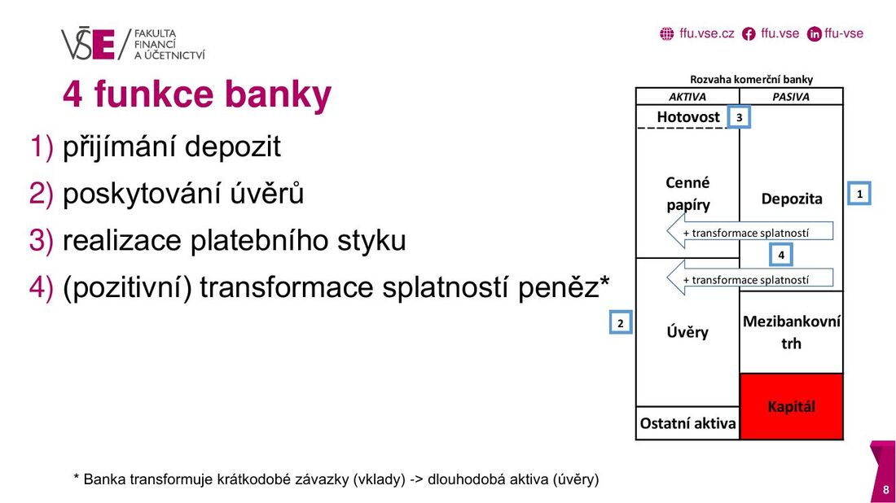
Slajd 8: rozvaha komerční banky s číslovanými funkcemi. 1 = depozita (pasiva), 2 = úvěry (aktiva), 3 = platební styk (hotovost a účty), 4 = transformace splatností (šipky od krátkých pasiv k dlouhým aktivům). Červeně je kapitál, nárazník proti ztrátám. Odnést si: každá funkce má své místo v rozvaze.
Záchrana banky v problémech
Slajd 9 zobrazuje 4 způsoby záchrany banky přímo na rozvaze. Každý způsob míří na jinou stranu rozvahy:
Způsob (s. 9)
Kam míří v rozvaze
1. Garance za závazky
celá pasivní strana (depozita, mezibankovní trh): věřitelé banky mají záruku, že dostanou své peníze
2. Odkup aktiv
aktiva, zejména úvěry: problémová aktiva se z banky odstraní
3. Likvidita
mezibankovní trh: banka dostane peníze na platby
4. Rekapitalizace (bailout)
kapitál: stát nebo jiný investor doplní nárazník proti ztrátám
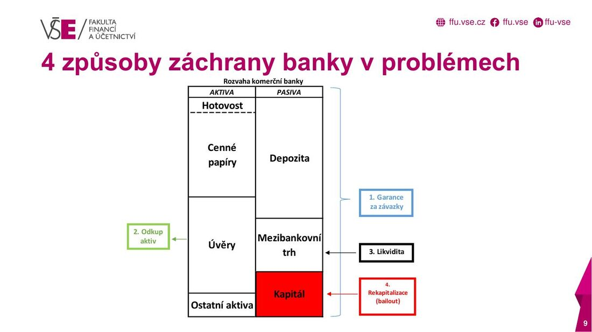
Slajd 9: čtyři zásahy zakreslené do rozvahy komerční banky. Slajd je pouze schéma bez dalšího textu; přiřazení ke stranám rozvahy je přímo z obrázku.
⚠️ Pozor:bailout v tomto schématu znamená rekapitalizaci, tedy doplnění kapitálu zvenčí (bod 4). Garance, odkup aktiv i likvidita jsou samostatné způsoby, nejsou to synonyma bailoutu.
3 teorie tvorby peněz v bankovnictví
Slajd 10 uvádí tři základní teorie podle Wernera (2016): finanční zprostředkování, částečné rezervy a tvorba úvěru.
Teorie
Co tvrdí (s. 11–13)
Autoři ze slajdu
1. Finanční zprostředkování
Peníze může kolektivně vytvářet jen bankovní systém jako celek. Každá banka je pouhý zprostředkovatel: shromažďuje vklady a poskytuje úvěry. Regulace je možná (rezervy, kapitálová přiměřenost, úrokové sazby).
Keynes (1936), Baltensperger (1980), Diamond a Dybvig (1983), Krugman (2015)
2. Částečné rezervy
Jednotlivá banka peníze vytvářet neumí. Systém je tvoří multiplikací vkladů (multiplikátor peněz). Banka musí nejprve získat prostředky, až potom půjčuje.
V rozporu s ostatními dvěma. Každá banka může sama vytvářet peníze „z ničeho“ účetními operacemi (při poskytnutí půjčky nebo nákupu aktiv). Werner (2016) na případové studii Raiffeisenbank ukazuje, že tato teorie je pravdivá.
Wicksell (1898), Schumpeter (1954), Moore (1988), Werner (1992, 2016)
⚠️ Pozor: teorie 1 a 2 se shodují, že jednotlivá banka peníze nevytváří; liší se mechanismem (zprostředkování vs. multiplikace vkladů). Jen teorie 3 říká, že peníze vytváří každá banka sama. U teorie 2 je pořadí „nejdřív vklad, potom úvěr“, u teorie 3 naopak.
Doplněk (ČNB, Podstata peněz a role centrálních bank): při poskytnutí úvěru banka vytvoří pohledávku za dlužníkem a současně připíše vklad na jeho účet; nemusí čekat na nový vklad jiné domácnosti. Neúvěruje ale neomezeně: musí posuzovat schopnost splácet, mít kapitál a likviditu pro platby.
Bankovní finanční výkazy
Otázka ze slajdu (2, s. 15): Jaké jsou 3 základní bankovní výkazy? Odpověď (s. 16): (1) rozvaha (bilance, zdroje a užití fondů) včetně podrozvahy, (2) výkaz zisků a ztráty (výsledovka, způsob tvorby zisku nebo ztráty), (3) kapitál (vlastní zdroje, prostředky od akcionářů).
1. Rozvaha a podrozvaha
Rozvaha je „snímek“ k danému dni (obvykle 31. 12.). Ukazuje strukturu aktiv a pasiv včetně kapitálu (s. 16).
Rovnice: $A = Z + K = P$, kde $A$ jsou celková aktiva, $P$ celková pasiva, $Z$ závazky (věřitelé) a $K = A - Z$ kapitál (akcionáři) (s. 16).
Podrozvaha eviduje podmíněné závazky a pohledávky (mimobilanční položky): není jasná přesná výše plnění. Patří sem přísliby úvěrů, záruky, finanční deriváty (termínové forexové operace, opce, úrokové swapy), akreditivy, prodej aktiv s postihem, spotové operace, zástavy a hodnoty v úschově. Podrozvahová aktiva se nerovnají podrozvahovým pasivům (s. 18).
⚠️ Pozor: specifika rozvahy banky proti nefinanční firmě (s. 17): banka má nízký podíl kapitálu na aktivech (< 10 %) a nízký podíl hmotných aktiv (< 1 %). Většinu pasiv tvoří cizí zdroje (depozita, mezibankovní trh), většinu aktiv úvěry a cenné papíry. Firma má naopak hmotný a nehmotný majetek a podstatně víc kapitálu.
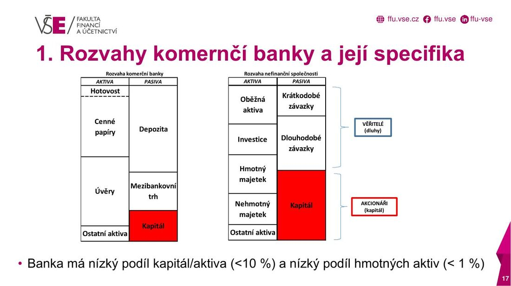
Slajd 17: rozvaha komerční banky vlevo, nefinanční společnosti vpravo. Červený kapitál je u banky malý pruh, u firmy výrazně větší část pasiv. U banky chybí hmotný a nehmotný majetek, aktiva tvoří hotovost, cenné papíry a úvěry. Odnést si: banka je silně zadlužená (vysoká finanční páka).
2. Výkaz zisků a ztráty
Výkaz zisků a ztrát (VZZ, anglicky P&L) ukazuje, jak je tvořen čistý zisk před výplatou dividend a jak a proč se mění kapitál banky. Vzorec: $ČZ = V - N - D$ ($ČZ$ čistý zisk, $V$ výnosy, $N$ náklady, $D$ daně) (s. 19). Výnosy banky: čisté úrokové výnosy, čistý výnos z poplatků a provizí, čistý zisk z obchodování a ostatní provozní zisk. Náklady: provozní náklady, další náklady a daň z příjmu (s. 19). Zisk z VZZ se přenáší do kapitálu v rozvaze (s. 20).
3. Kapitál banky
Kapitál tvoří 5–10 % pasiv banky. Jeho funkce je nárazník proti ztrátám. Kapitál je zároveň účetní hodnota banky (s. 21).
Vývoj kapitálu: $K_t = K_{t-1} + ČZ - DIV$ ($DIV$ dividendy) (s. 21).
Příklad (vývoj kapitálu, vlastní modelová čísla): kapitál na začátku roku je $K_{t-1}=100$, čistý zisk $ČZ=12$, dividendy $DIV=4$.
$K_t = K_{t-1} + ČZ - DIV = 100 + 12 - 4 = 108$. Kapitál vzroste jen o zisk, který banka nevyplatí. Zadržený zisk je tedy jeden ze způsobů, jak banka posiluje nárazník.
Příklad ze slajdu 22: kapitál jako polštář pro ztráty 40 a 120. Podle schématu je původní kapitál banky $K = 100$.
a) ztráta z úvěru 40: ztráta se odepíše z kapitálu, $100 - 40 = 60$. Kapitál zůstane 60 (na slajdu „Kapitál 60 + ztráta 40 = 100“). Banka je stále solventní a závazky věřitelů jsou kryté.
b) ztráta z úvěru 120: kapitálová ztráta je omezena kapitálem, tedy 100. Nepokrytá ztráta je $100 - 120 = -20$. Tuto část kapitál nepokryje a dopadne na věřitele (vkladatele, mezibankovní trh). Banka je v tu chvíli insolventní.
Kontrola v pythonu: $100-40=60$, $100-120=-20$. Výsledek sedí se slajdem (60 a −20).
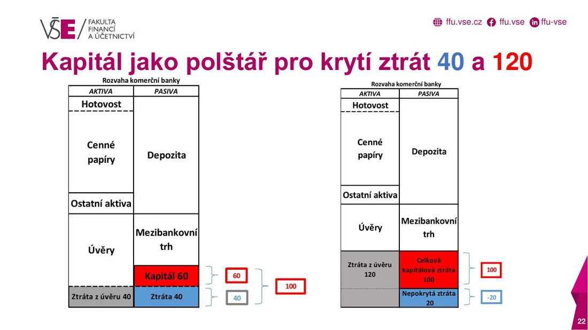
Slajd 22: vlevo ztráta z úvěru 40 pohltí část kapitálu, 60 zůstane. Vpravo ztráta 120 spotřebuje celý kapitál 100 a zbývá nepokrytá ztráta 20 (−20). Odnést si: kapitál chrání vkladatele jen do výše své velikosti; při větší ztrátě platí věřitelé.
Intuice: kapitál banky je malý ve srovnání s aktivy (< 10 %). Proto i relativně malá procentní ztráta na úvěrech (například 10 % portfolia) může kapitál zcela spotřebovat. Z toho plyne vysoká finanční páka a důvod, proč se kapitál reguluje.
Hodnota banky a ukazatel P/BV
Slajd 24 uvádí čtyři přístupy k ocenění banky (s. 24, 27):
Diskontování peněžních toků: model diskontování dividend (Gordonův model), diskontování volného cash flow (FCFF, FCFE) a diskontování residuálního příjmu (ekonomického zisku).
Srovnávací metody (price multiples): P/E (cena akcie / výnos na akcii), P/BV (tržní / účetní hodnota na akcii), P/EBITDA, P/S (cena akcie / tržby na akcii).
Rozklad ROE (DuPontova metoda).
Baltenspergerův model (1980).
Otázka ze slajdu (3, s. 25): Jaký ukazatel poměřuje tržní a účetní hodnotu banky? Odpověď:P/BV (Price/Book Value): tržní cena akcie dělená účetní hodnotou na akcii.
Baltenspergerův model (s. 27): vychází z identity, že aktiva (výdělečná i nevýdělečná, tedy likvidnější) se rovnají závazkům a kapitálu. Má tři proměnné: A (velikost portfolia banky), a = E/A (podíl výdělečných aktiv) a d = D/A (zadluženost). Management je volí tak, aby byl očekávaný zisk maximální:
$$E(\pi) = [r a - c d - (1-d)k] - O(A,a,d) - Q(A,a,d) - S(A,a,d)$$
$r$ očekávaný výnos na aktiva, $c$ úrokové náklady na vklady, $k$ náklady příležitosti vloženého kapitálu, $O$ provozní náklady, $Q$ náklady na udržení likvidity, $S$ náklady solventnosti.
Slajd 26 (McKinsey 2021) rozkládá P/BV na earnings-to-book (výnos na akcii vůči účetní hodnotě) a P/E (cena akcie dělená výnosem na akcii). Ukazuje to, že nízké P/BV banky vzniká nízkým výnosem na účetní hodnotu i nízkým P/E.
Příklad (čísla odečtená z grafu na slajdu 26, přibližně; 2020–21): 1) Banky (financial services): earnings-to-book ≈ 7 % a P/E ≈ 15. Pak $P/BV \approx 0{,}07 \times 15 = 1{,}05$. Na slajdu je P/BV banek těsně nad 1.
2) Big tech: earnings-to-book ≈ 34 % a P/E ≈ 31. Pak $P/BV \approx 0{,}34 \times 31 = 10{,}5$. Na slajdu má Big tech P/BV přibližně 10,5.
3) Industrials: earnings-to-book ≈ 9,5 % a P/E ≈ 31 dává $0{,}095 \times 31 \approx 2{,}9$ (slajd ≈ 3).
Kontrola v pythonu: 0,07·15 = 1,05; 0,34·31 = 10,54; 0,095·31 = 2,95. Rozklad na slajdu sedí. Hodnoty jsou odečtené z obrázku, nejsou v textu slajdu.
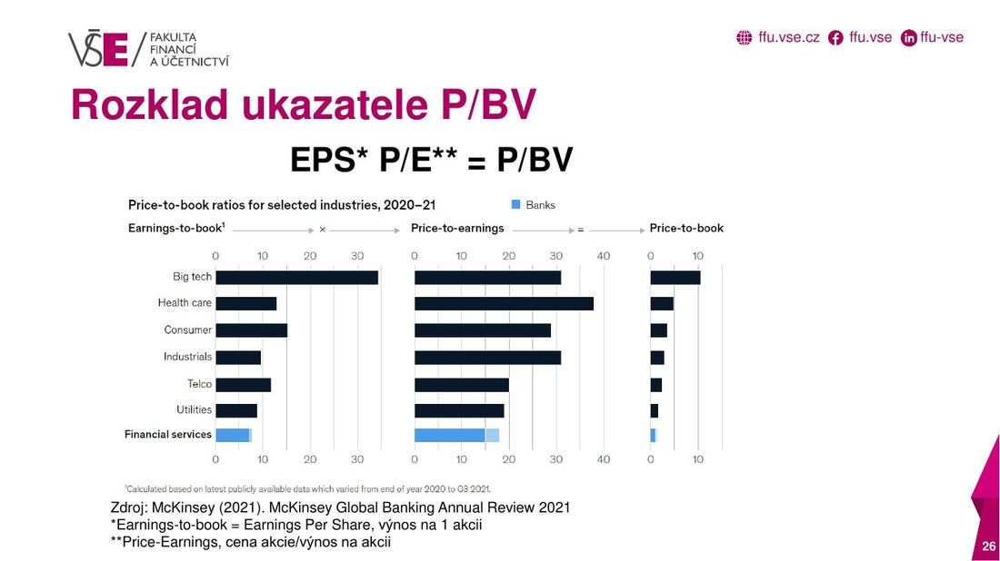
Slajd 26: tři sloupcové grafy podle odvětví: earnings-to-book × price-to-earnings = price-to-book. Banky (modře, financial services) mají v obou prvních grafech nejnižší hodnoty, proto je i jejich P/BV nejnižší (kolem 1). Big tech má všechny tři hodnoty nejvyšší.
Otázka ze slajdu (4, s. 37): Vykazují dlouhodobě banky vyšší poměr P/BV než nebanky? Odpověď (s. 38):Ne. Banky mají nízké P/BV (kolem 1,0), nebanky vyšší než 1,0.
Čísla ze slajdu 38 (McKinsey 2024): globální bankovní odvětví mělo v 2023 P/BV 0,9. Ostatní odvětví: technologie, média a telekomunikace 4,7; podnikatelské služby 4,5; farmacie 4,1; spotřební zboží 3,7; zdravotnictví a průmysl 3,0; nebankovní finanční instituce 2,7; pojišťovny 1,7; reality 1,3. Diskont bank oproti ostatním odvětvím se prohloubil z −30 % (2003) na −68 % (2023).
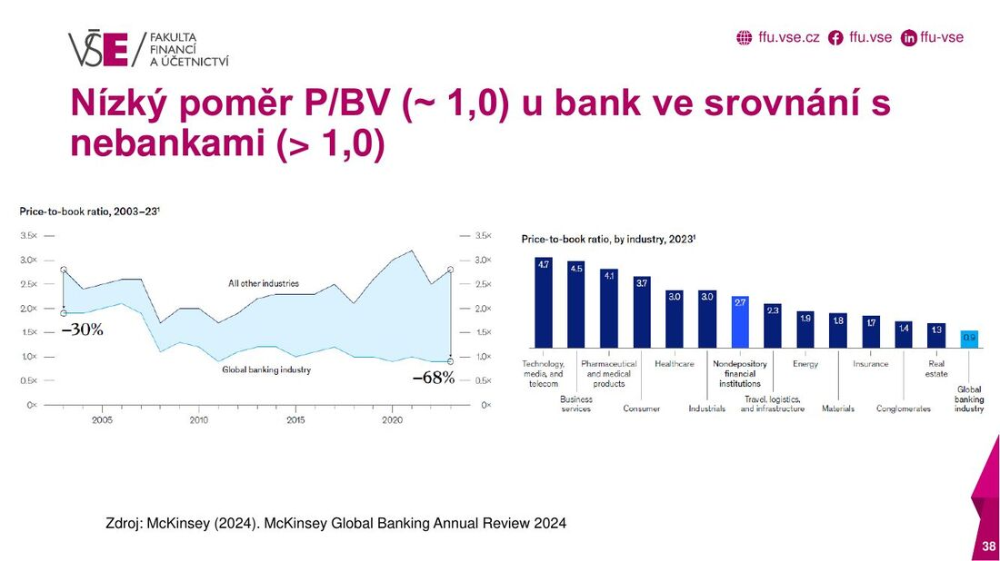
Slajd 38: vlevo vývoj P/BV 2003–23, banky (spodní hranice) vs. ostatní odvětví (horní). Rozdíl vzrostl z −30 % na −68 %. Vpravo P/BV podle odvětví v 2023: banky jsou na posledním místě s 0,9. Odnést si: trh dlouhodobě oceňuje banky zhruba na účetní hodnotu, ostatní odvětví na násobek.
Intuice: $P/BV = ROE \times P/E$. Banky mají vysokou finanční páku, regulaci a konkurenci, takže jejich ROE je skromné a investoři za jednu korunu zisku platí méně než u technologií. Výsledek je P/BV kolem 1: trh nepovažuje banku za víc než hodnotu jejích účetních aktiv minus závazky.
Ziskovost bank: ROE v ČR a v EU
Slajd 29 ukazuje pokles ziskovosti (ROE) bank v letech 2000, 2008 a 2020. Každý z těchto poklesů souvisí s krizí. Graf porovnává banky, pojišťovny a další odvětví (s. 29). Hodnoty z grafu jsou orientační.
Slajd 30 (EBA Risk Dashboard Q3-2025): ROE bank v ČR bylo 11,9 % (2019), kleslo na 7,4 % (2020, COVID-19), pak 11,7 % (2021), 11,6 % (2022), 13,2 % (2023), 15,7 % (2024) a 16,1 % (3Q-2025).
V grafu jsou pro srovnání Německo, Řecko a Slovensko. České banky jsou dlouhodobě ziskovější než německé, jejichž ROE je v grafu zhruba 7 % (odečteno z obrázku). Řecko spadlo v 2021 do záporných hodnot (cca −6 %).
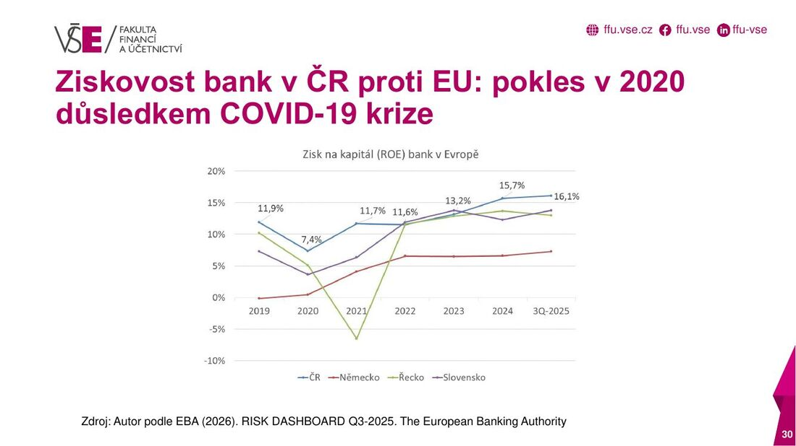
Slajd 30: ROE bank 2019–3Q-2025. Česká křivka (modrá, s popisky) klesá v roce 2020 na 7,4 % a pak roste až na 16,1 %. Německo je po celé období výrazně níže. Odnést si: čísla 11,9 %, 7,4 % a 16,1 % a to, že pokles v 2020 způsobila krize COVID-19.
Magický trojúhelník vysoké ziskovosti bank v ČR (s. 31): (1) konzervativní klient s důvěrou v banku, (2) profesionální management, který nepodstupuje nadměrná rizika a podporuje inovace, (3) osvícený regulátor: ČNB a MF nezatěžují bankovní trh „zbytečnými“ regulacemi a daněmi, s výjimkou daně z nadměrných zisků (windfall tax) z 2022.
Windfall tax
Slajd 32: proč banky zaplatily v 2023 na windfall tax místo očekávaných 33 mld. Kč pouhých 730 mil. Kč? Tři důvody:
Růst úrokových sazeb se ve druhé polovině 2022 zastavil a sazby zůstaly stabilní po celý 2023, což vedlo ke stagnaci či poklesu čistého úrokového výnosu.
Banky drží velký objem likvidních aktiv ve formě státních dluhopisů; výnos dluhopisů vydaných od 2021 je osvobozený od daně.
Růst nákladů a mimořádné vlivy (například prohraná arbitráž ČSOB).
Exogenní: globální šok, různá reakce a fiskální politika v různých zemích. Nejdřív podpora likvidity firem, pak dluhové moratorium (prokrastinace problémů), až potom bankroty.
Endogenní (z finančního systému): koordinovaná reakce zemí v regulaci a dohledu, krizové řešení institucí v problémech
S&P 500 (USA)
+18,1 % (2020), +28,5 % (2021), −18,0 % (2022)
−36,6 % (2008), +25,9 % (2009), +14,8 % (2010)
Zdroj slajdu 34: Carletti (2020), The Bank Business Model in the Post-Covid-19 World. GFC = Global Financial Crisis.
⚠️ Pozor: COVID-19 byl šok exogenní a z reálné ekonomiky, GFC endogenní a z finančního sektoru. V testu se často zaměňuje. Také akciový trh USA: COVID 2020 +18,1 % (ne pokles), GFC 2008 −36,6 %.
Globální banky, ROE a Tier 1 (s. 35, McKinsey 2021; hodnoty z grafu orientačně): v GFC ROE spadlo z cca 15 % (2007) na cca 5 % (2008) a do 2010 se vrátilo k cca 10 %. V COVID-19 spadlo z cca 9 % (2019) na cca 7 % (2020). Tier 1 poměr byl před COVID-19 vyšší (cca 14 %) než před GFC (cca 10,7 % v 2007) a v krizi neklesl. Banky tedy vstoupily do COVID-19 lépe kapitálově vybavené než do GFC. Slajd 36 přidává náklady kapitálu: ROE globálních bank se od GFC pohybovalo převážně kolem a pod nákladem kapitálu (pásmo cca 8–10 %).
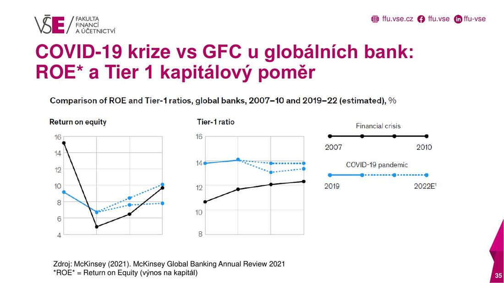
Slajd 35: vlevo ROE, vpravo Tier 1 poměr globálních bank. Černě GFC 2007–10, modře COVID-19 2019–22E (čárkovaně odhad). ROE pokleslo v obou krizích, ale v GFC hlouběji. Kapitálový poměr v COVID-19 vychází z vyšší hladiny a nepropadá. Odnést si: banky byly v roce 2020 odolnější než v roce 2008.
Budoucnost bankovnictví: trendy
Slajd 40 (Oliver Wyman 2013) ukazuje posun rovnováhy mezi penězi a informacemi: v 90. letech až polovině 2000s byly peníze „velké“ (vysoké bezrizikové sazby, nízké ztráty, vysoká páka) a informace malé (drahé, malé pokrytí, snadná rozhodnutí). Dnes jsou naopak informace velké (levné, široké pokrytí, těžká rozhodnutí) a peníze menší (nízké sazby, vyšší ztráty, nízká páka). Banky se tedy stále víc stávají byznysem s informacemi.
6 bankovních trendů umocněných COVID-19 (s. 41, McKinsey 2020)
Vysoká očekávání zákazníků (digitalizace, komoditizace).
Rostoucí konkurence (Bigtech a Fintech).
Změna způsobu výkonu práce.
Akcelerace globalizace a geopolitická rizika.
Radikální změny v makro prostředí.
Tlaky na sociální a environmentální udržitelnost financí (ESG).
Slajd 42 rozvádí první dva trendy a konkurenci:
Digitalizace: „nový normál“ (vše je hned a zadarmo), interakce se zákazníkem a zpětná vazba, internet a on-line aplikace (budoucnost poboček), roste úloha informací (jak je zpeněžit).
Komoditizace: klient se orientuje pouze cenou, ne kvalitou; důležité jsou cenové srovnávače.
Konkurence: vklady (investiční platformy, fondy), úvěry (P2P lending, crowdfunding), platby (Apple, Samsung, PayPal). V Číně významně konkurují bankám Bigtech firmy Alibaba a Tencent.
ESG potenciál v bankovnictví
Otázka ze slajdu (5, s. 43): Jaký je potenciál ESG v bankovnictví? Odpověď (s. 44, McKinsey 2022): ESG otevírá bankám nové produkty a služby (úvěry, kapitálové trhy, investice, jiné inovativní služby) a nové platformy (poradenské platformy, platformy pro umístění aktiv a uhlíkové trhy).
Typ byznysu
Oblast
Příklady (s. 44)
Produkty a služby (nabídky šité na míru sektorům, technologiím a skupinám klientů)
Úvěry
Retail: půjčky na elektromobily, zelené hypotéky. CIB: půjčky vázané na udržitelnost, zelené půjčky, financování dodavatelského řetězce
CIB = Corporate/Investment Banking (korporátní a investiční bankovnictví).
3 scénáře budoucnosti bankovnictví
Otázka ze slajdu (6, s. 45): Jaké jsou 3 základní scénáře budoucnosti bankovnictví? Odpověď (s. 46, 49, 52): (1) Adaptace + transformace, (2) Uberizace bankovnictví, (3) Blockchain (decentralizovaný finanční systém, DeFi).
Scénář 1: Adaptace + transformace (s. 46–47)
Banky se musí transformovat ve 3 oblastech, aby ustály konkurenční tlak bank i nebank: (1) optimalizace počtu poboček, (2) efektivní využívání technologií, (3) talent (udržení a najímání perspektivních pracovníků a studentů). Dále mají 4 strategické možnosti, jakou roli budou hrát ve finančním ekosystému (McKinsey 2018):
Strategická možnost
Obsah
Příklad
1. Inovativní integrátor ekosystému
jednotné místo (one-stop-shop) pro bankovní produkty, důraz na distribuci i produkci
Bigtech: Tencent, Alphabet
2. Nízkonákladový producent produktů
neznačkové (white-label) produkty, např. hypotéky, a likvidita pro Fintech, který má distribuci; vhodné pro banky s přebytkem likvidity a kapitálu
tradiční banka kompletně zdigitalizovaná a efektivní
ING jako digitální banka
Případová studie: Apple Card (s. 48, 72)
Apple Card je příklad partnerského modelu Apple s bankou Goldman Sachs a Mastercard v platbách. Karta byla uvedena do provozu v 8/2019. Apple je na začátku a na konci hodnotového řetězce, kde jsou největší marže (viz uberizace, scénář 2). Na obrázku: Goldman Sachs drží rozvahu (financování), schvalování žádostí, platební autentizaci a kreditní hodnocení; Mastercard zajišťuje kartovou síť; Apple má design nabídky karty a rozhraní se zákazníkem (branding, Apple Pay).
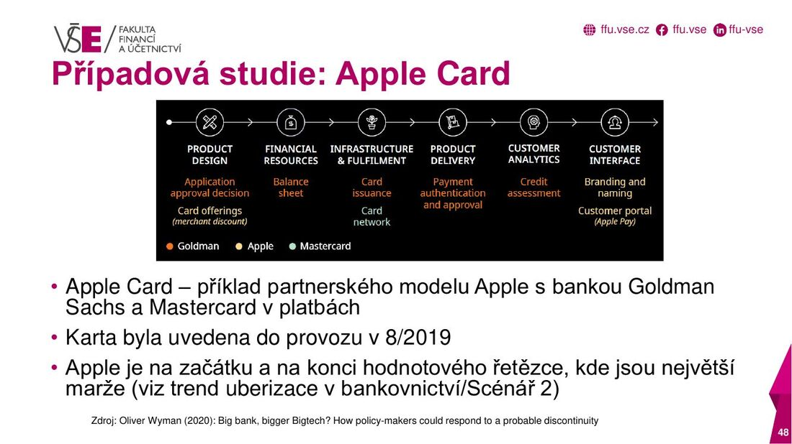
Slajd 48: šest kroků hodnotového řetězce karty a barevně označený poskytovatel (Goldman oranžově, Apple žlutě, Mastercard zeleně). Apple je na začátku (design nabídky) a na konci (zákaznické rozhraní). Odnést si: Bigtech nemusí mít bankovní licenci ani rozvahu, aby ovládl nejziskovější části řetězce a kontakt se zákazníkem.
Scénář 2: Uberizace bankovnictví (s. 49–51)
Mezi klienta a banky se vloží agregátor (na slajdu Google, O2, Fincentrum), který vidí všechny klientovy účty, úvěry a investice a nabídne mu je na jednom místě. Banky přijdou o přímý kontakt s „emancipovaným“ klientem; otázky ze slajdu: co bude banka nabízet kromě důvěry a co výměna informací.
PSD2 (Payment Services Directive 2) platí v EU od 13. 1. 2018. Měla otevřít bankovní trh novým hráčům (open banking): banky musí umožnit třetím stranám na základě zmocnění klientem přístup k účtům přes API (Application Programming Interface) a umožnit jim například iniciovat platby (s. 50).
Banky mohou díky regulaci přijít o podstatnou část příjmů za základní služby (vedení účtů, výpisy, převody). Monetizace investice do API je teoreticky možná přes doprovodné služby (scan and pay, credit scoring, e-wallets, pojištění, správa majetku aj.) (s. 50).
V realitě PSD2 spíše nesplnila očekávání: banky si udržely dominantní pozici (s. 50).
Teoreticky vede PSD2 k „1 místu pro kontakt se všemi bankami klienta“ (s. 51, schéma s poskytovatelem informací o účtech, AISP).
Doplněk (BCBS 2019, Report on open banking and APIs; ČNB, RS2025-12): open banking neznamená veřejný přístup k účtu. Třetí strana pracuje jen se souhlasem klienta. Rámec PSD2 rozlišuje službu informování o účtu (AIS) a službu iniciace platby (PIS).
Scénář 3: Blockchain (s. 52)
V centralizovaném finančním systému jde platba odesílatel → jeho banka → platební sítě (Visa, Mastercard, Venmo, PayPal) → banka příjemce → příjemce. V decentralizovaném finančním systému (DeFi, decentralizované finance) jde platba přímo mezi odesílatelem a příjemcem přes blockchain, bez bank a platebních zprostředkovatelů.
Finanční instituce: přímé a nepřímé financování
Slajd 54 (Mejstřík a kol. 2014) rozlišuje dva toky peněz od zapůjčovatelů (spořičů) k vypůjčovatelům (utrácečům):
Přímé financování jde přes finanční trhy: spořič kupuje cenné papíry přímo od vypůjčovatele.
Nepřímé financování jde přes finanční zprostředkovatele (banky, pojišťovny, fondy): spořič dá peníze zprostředkovateli a ten je půjčí dál.
Spořiči: domácnosti, firmy, vláda, cizinci. Vypůjčovatelé: firmy, vláda, domácnosti, cizinci. Zprostředkovatelé mohou financovat i přes trhy (šipka od zprostředkovatelů k trhům).
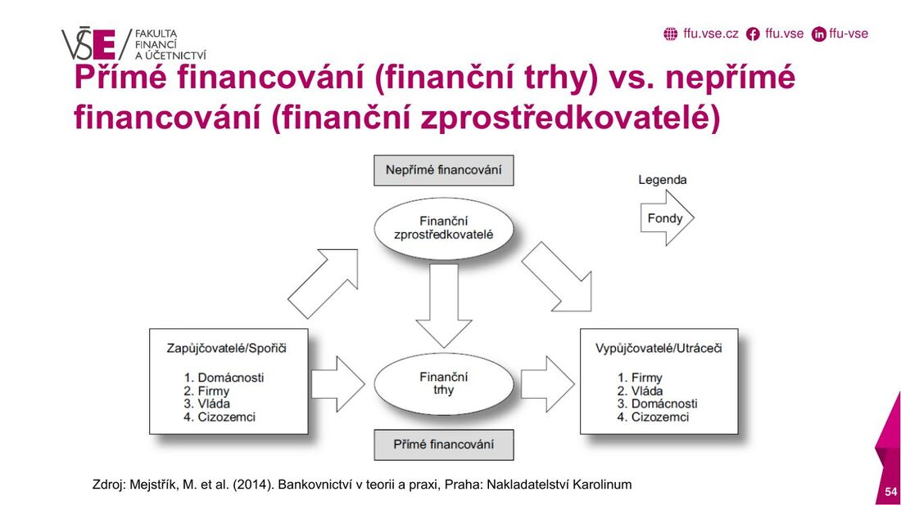
Slajd 54: dolní cesta (zapůjčovatelé → finanční trhy → vypůjčovatelé) je přímé financování, horní cesta přes finanční zprostředkovatele je nepřímé financování. Odnést si: banka je zprostředkovatel, trh je přímá cesta.
Pojišťovna (s. 55–56)
Zdroje získává z pojistného, které používá na výplatu pojistných plnění. Přebírá riziko od klientů.
Provádí negativní transformaci splatnosti (na rozdíl od banky, která provádí pozitivní). Pojištění je dlouhodobý obchod: klient platí předem, plnění se vyplácí v budoucnosti při pojistné události, někdy i dlouho po skončení pojištění (odpovědnostní a důchodové pojištění).
Zajišťovna = „pojišťovna pojišťoven“. Největší globální zajišťovny: Munich Re, Swiss Re, Lloyds. Největší globální pojišťovny: Allianz, AXA, AIG, Generali. Největší pojišťovny v ČR: Česká pojišťovna, Kooperativa, Allianz, ČSOB Pojišťovna, Generali.
Penetrace pojištění (předepsané pojistné / HDP): v ČR „pouze“ 4 %, v USA a Německu 8 %.
EGAP je státní úvěrová pojišťovna pro tržně nepojistitelná politická a komerční rizika spojená s financováním vývozu. Solvency II je regulace pojišťovnictví v EU (od 2016). Insurtech je technologická inovace v pojišťovnictví.
⚠️ Pozor: banka transformuje splatnost pozitivně (krátké vklady financují dlouhé úvěry), pojišťovna negativně (pojistné platí klient předem, závazky plní dlouho potom). Obě instituce přitom plní různé funkce: banka transformuje splatnost, pojišťovna přebírá riziko.
Penzijní spoření a 3 pilíře (s. 58–63)
Penzijní fondy (společnosti) se financují z pravidelných příspěvků účastníků, které může doplnit zaměstnavatel. Po dosažení určitého věku vyplácejí anuity (pravidelné splátky), když účastníci obvykle nejsou ekonomicky aktivní. Slouží jako institucionální doplněk státního sociálního zabezpečení (s. 59).
V ČR existují účastnické fondy (nové od 2013) a transformované fondy, do nichž byly účastníkům penzijního připojištění automaticky převedeny jejich úspory při zachování podmínek smluv (s. 59).
Pyramida dlouhodobého spoření (s. 58, ČSOB Penze): základ = spořicí nebo běžný účet (rezerva 2–5 platů); nad ním „zajištění pro lepší budoucnost“: stavební spoření (1 700 Kč měsíčně), penzijní spoření (3 000 Kč měsíčně) a životní pojištění (1 000 Kč měsíčně) se státními příspěvky a daňovými úlevami; výš pravidelné investice a nahoře jednorázové investice (riskantní).
Otázka ze slajdu (7, s. 60): Jaké jsou 3 pilíře důchodového systému? Je třeba jejich reformy? Odpověď (s. 61–62):I. pilíř = sociální pojištění (státní povinný průběžně financovaný důchodový systém); II. pilíř = penzijní připojištění (nepovinné důchodové spoření, v 2013–2016); III. pilíř = individuální pojištění a spoření (penzijní připojištění a doplňkové penzijní spoření). Reforma: na schématu (s. 62) je II. pilíř přeškrtnutý (zrušený) a III. pilíř reformovaný (účastnické a transformované fondy). Slajd 63 ukazuje, proč se reformy diskutují: náklady penzijních společností.
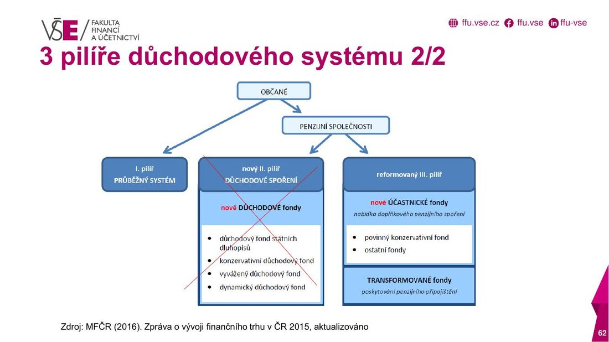
Slajd 62: I. pilíř průběžný systém; nový II. pilíř (důchodové spoření s důchodovými fondy) je přeškrtnutý; reformovaný III. pilíř s novými účastnickými fondy (povinný konzervativní fond a ostatní) a transformovanými fondy. Odnést si: v ČR zůstal průběžný I. pilíř a reformovaný III. pilíř, II. pilíř zrušen.
Slajd 63 (Nádvorník, Pertold 2026, IDEA při CERGE-EI) ukazuje náklady penzijních společností vůči majetku klientů: skutečný celkový náklad je dlouhodobě asi 0,5 %, vybraný poplatek vzrostl z cca 0,85 % (2017) na cca 1,3 % (2025), poplatek u dynamických fondů je cca 1,9 % (2017–2025) až 2,2 % (2021–2025). Objem pod správou vzrostl z cca 420 na cca 660 mld. Kč. Poplatky tedy výrazně převyšují náklady; přesný význam šipky „75 %“ ve slajdu není vysvětlen.
Suverénní fondy (s. 65–66)
Suverénní fond (Sovereign Wealth Fund, SWF) je státem vlastněný investiční fond vzniklý z makroekonomických důvodů. Financuje se transferem zahraničních devizových aktiv, která se dlouhodobě investují v zahraničí. Devizová aktiva pocházejí z přebytků platební bilance, operací s devizovými rezervami, výnosů z privatizace, přebytků státních rozpočtů nebo exportu komodit (s. 65).
Objem aktiv SWF na konci 2025: cca 15 bil. USD (česky „bil.“ = bilion = $10^{12}$).
Největší (2025, ≈ USD): 1. Government Pension Fund Global (Norsko) 2,044 bil., 2. China Investment Corporation 1,332 bil., 3. SAFE Investment Company (Čína) 1,090 bil., 4. Abu Dhabi Investment Authority 1,075 bil., 5. Kuwait Investment Authority 1,029 bil. (s. 66).
Příklad (top 5 SWF, s. 66): součet $2{,}044+1{,}332+1{,}090+1{,}075+1{,}029 = 6{,}570$ bil. USD. Vůči celkovým asi 15 bil. USD je to $6{,}57/15 \approx 43{,}8\,\%$. Pět největších fondů tedy drží zhruba dvě pětiny všech suverénních aktiv (python: 6570/15000 = 0,438). Součet je vlastní výpočet, není na slajdu.
Fintech a Bigtech: banky vs. technologie
Fintech = finanční technologické společnosti, které při poskytování finančních služeb užívají software. Bigtech = velké Fintech firmy (s. 68).
Fintech přinášejí inovace hned se vstupem na trh a ohrožují postavení stávajících firem. Vstupují s novým obchodním modelem a alternativním řešením klientských potřeb, po získání zákaznické základny postupují k optimalizaci procesů. Klienti je často upřednostňují, protože nabízejí nižší cenu (s. 68).
Fintech získávají klienty, kterým inovace v klasických bankách nestačily (s. 68).
Otázka ze slajdu (7, s. 69; na slajdu číslováno znovu jako 7): Jak se liší nákladová struktura banky a Fintech? Odpověď (s. 70): v nákladové pyramidě jsou pořadí obrácená. U banky tvoří základ pyramidy optimalizace, nad ní rychlost a špičku inovace. U Fintechu je pyramida obrácená: základ (spodní špička) tvoří inovace, nad ní rychlost a nahoře optimalizace.
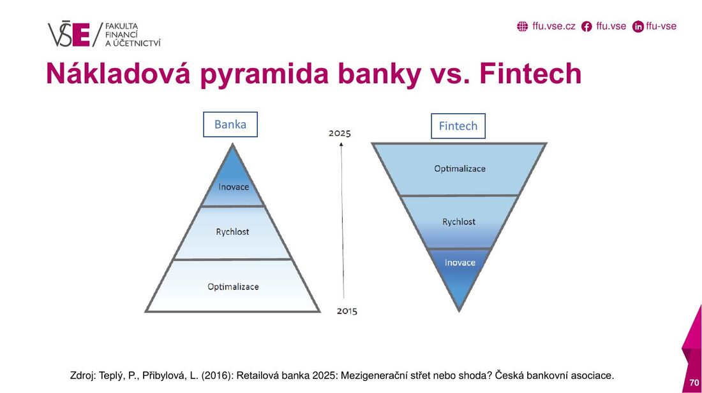
Slajd 70 (Teplý, Přibylová 2016): vlevo pyramida banky, vpravo obrácená pyramida Fintechu; každá má tři vrstvy (optimalizace, rychlost, inovace). Svislá šipka 2015 → 2025 ukazuje směr vývoje. Slajd nemá komentář. Čtení zdola nahoru (banka začíná optimalizací a míří k inovaci, Fintech začíná inovací a míří k optimalizaci) odpovídá s. 68 a je moje interpretace.
GAFA/Bigtech vs. 4 funkce banky (s. 71)
Depozita
Úvěry
Platby
Transformace splatností
Apple
ano
ano
ano
ne
Google
ano
ano
ano
ne
Facebook
ne
ne
ano
ne
Alibaba (má bankovní licenci)
ano
ano
ano
ano
GAFA = Google, Apple, Facebook, Alibaba. Společná je oblast plateb (na slajdu zakroužkovaná), transformaci splatností dělá jen Alibaba, která má bankovní licenci.
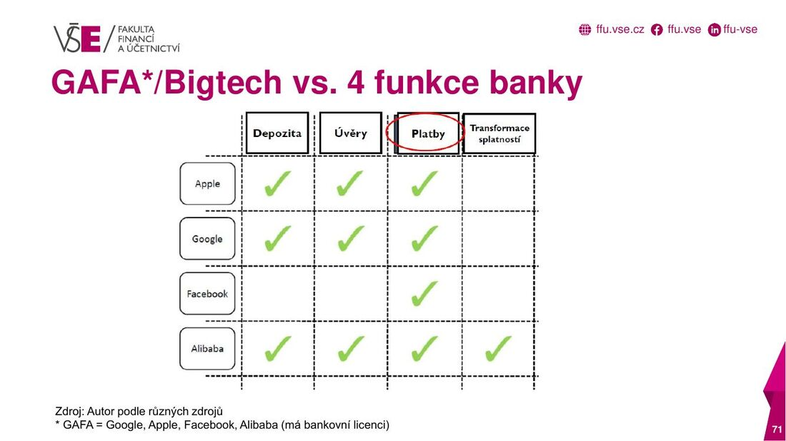
Slajd 71: zaškrtnuté funkce banky u jednotlivých Bigtech firem. Zakroužkované jsou platby: všechny čtyři firmy je dělají. Odnést si: Bigtech zasahuje do bankovnictví hlavně přes platby, ne přes rozvahovou funkci transformace splatností.
Otázka ze slajdu (10, s. 83): Proč Bigtech (velké Fintech) vstupují do segmentu plateb? Odpověď (s. 84):3 důvody: (1) vysoké výnosy z plateb, (2) interakce se zákazníkem (každodenní transakce a velké množství dat k monetizaci), (3) vysoký výnos na kapitál (ROE) u plateb (≈ 20 %).
Výnosy: globální výnosy z plateb mají do 2028 dosáhnout 2,5 bil. USD (nárůst o 150 % oproti 2010). Vyšší jsou „primární výnosy“ z platebních transakcí než „sekundární“ ze správy účtu a poplatků za karty (s. 84).
Zákazník: platby jsou oblast, kde spotřebitelé čekají nejvyšší bezproblémovost a okamžitost. Data lze monetizovat například cílenou reklamou (s. 84).
ROE: platby a retailové vklady mají vysoké ROE (20 %) a vysokou angažovanost klienta; kapitálové trhy, investiční bankovnictví (CMIB), komerční a transakční bankovnictví mají nízké ROE (5 %) a nízkou angažovanost (s. 85, Carletti 2020).
Příklad (výnosy z plateb, s. 84): 2,5 bil. USD v roce 2028 je nárůst o 150 % oproti 2010, tedy $2{,}5 = V_{2010}\cdot(1+1{,}5)$, odkud $V_{2010} = 2{,}5/2{,}5 = 1{,}0$ bil. USD. Python: 2,5/2,5 = 1,0. Výpočet vychází z výkladu „nárůst o 150 %“ a z roku 2010 se na slajdu přímo neuvádí.
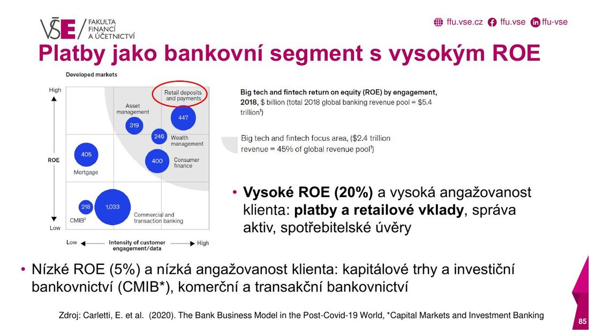
Slajd 85 (Carletti 2020): osa ROE vs. intenzita zapojení klienta a dat. Vpravo nahoře (zakroužkováno) retailové vklady a platby, objem výnosů 447 mld. USD; vlevo dole komerční a transakční bankovnictví a CMIB. Šedá oblast = zaměření Bigtech a Fintech, 2,4 bil. USD výnosů = 45 % globálního výnosového koše bank 5,4 bil. USD (2018). Odnést si: Bigtech míří tam, kde je vysoké ROE a hodně dat o klientovi.
Velikost trhu a růst Fintech (s. 73–78)
Ukazatel (Fortune Business Insights)
Hodnota
Trh Fintech v 2024
≈ 340 mld. USD
Odhad trhu v 2025
≈ 395 mld. USD
Projekce pro 2032
≈ 1 127 mld. USD
CAGR (2025–2032)
≈ 16,2 %
Příklad (kontrola CAGR, s. 73): průměrný roční růst za 7 let (2025 → 2032): $CAGR = (1127/395)^{1/7} - 1 \approx 0{,}1616 = 16{,}2\,\%$. Sedí se slajdem. Růst 2024 → 2025: $395/340 - 1 \approx 16{,}2\,\%$ (python: 0,1616; 0,1618).
⚠️ Pozor: slajd 73 rozvádí CAGR jako „Cumulative Aggregated Growth Rate (průměrný agregovaný roční růst)“. Doplněk: standardní význam zkratky je Compound Annual Growth Rate, složená roční míra růstu, a právě tak se počítá výše. Pojem „bil.“ ve slajdech je bilion ($10^{12}$), ne miliarda.
Počet Fintech společností ve světě (s. 74, Statista; z grafu orientačně): cca 5,6 tis. v 2008, cca 18 tis. v 2016 a cca 32 tis. v 2024. Počet roste, ale rychlost se zpomaluje.
Top Fintech podle tržní kapitalizace (s. 75, k 1. 5. 2025, mld. USD): Visa 694,0, Tencent 606,8, Mastercard 528,7, Intuit 185,0, Stripe 91,5, Fiserv 88,2, PayPal 69,6, Nubank 63,3, Coinbase 62,3.
Míra investic (s. 76, Fintech.global): počet dohod 3 295 (2020), 4 418 (2021), 4 122 (2022), 2 787 (2023), 1 050 (2024). Vrchol byl v 2021, potom výrazný pokles (od 2021 do 2024 asi o 76 %).
Segmenty ve světě (s. 77): digitální platby (paytech: Apple Pay, Google Pay, Alipay, PayPal, Visa), služby nad fakturami, wealthtech (Robinhood, Interactive Brokers, XTB, FTMO), lendingtech a BNPL (Upgrade, SoFi, Klarna), insurtech (Lemonade, Next Insurance), RegTech (Ascent, Onfido), open banking (Stripe, Plaid, Tink), kryptoměny a blockchain (Binance, Coinbase, SatoshiLabs), osobní finance (PFM).
Výzvy a trendy (s. 78)
Fintech trh roste silně, ale ne lineárně; menší trhy (insurtech, wealthtech, blockchain) budou mít zřejmě vyšší CAGR. Podle některých odhadů může sektor začátkem 30. let překročit 1 bilion USD. Regionálně rostou APAC a EMEA, podíl USA a Severní Ameriky zůstává dominantní. 4 výzvy: regulatorní prostředí (compliance, ochrana dat), udržitelnost financování (investice klesají nebo jsou nestabilní), překonávání bariér adopce v méně rozvinutých zemích, soutěž Fintechů s bankami (tlak na inovace).
Fintech v ČR (s. 79–82)
Otázka ze slajdu (9, s. 79): Jaké znáte české Fintech společnosti? Odpověď (s. 80): paytech: Dotykačka, Qerko, GoPay, PayU, ThePay, TRASTRA; služby nad fakturami: Roger, Fakturoid, Cashbot, Malcom; wealthtech: FTMO, Portu, Fondee, Indigo; lendingtech a BNPL: Zonky, Twisto, Upvest, Flowpay; insurtech: Pillow, RiXo, Mutumutu; RegTech: Lawly; open banking: FinBricks, BudgetBakers, Spendee; kryptoměny a blockchain: SatoshiLabs, Coinmate, Anycoin, Štosuj.cz, Tatum; osobní finance (PFM): Portmonka, BudgetBakers, Spendee, PlnáPeněženka, PatronGo.
2025 v číslech (s. 81, Stroukal a kol. 2025, studie pro Českou fintechovou asociaci): 150+ fintech firem v ČR (≈ 14–15 na 1 mil. obyvatel). V Evropě měl trh 2024 hodnotu 78 mld. USD, do 2033 až 560 mld. USD. ČR zaostává za UK, Švédskem, Estonskem, Irskem a Nizozemskem.
Silné stránky (s. 82): inovace a technologický pokrok (72 %), uživatelská přívětivost (74 %), dostupnost finančních služeb (67 %).
Slabé stránky:regulace a legislativní nejistota (76 %), nedostatek financování (41 %), slabá podpora státu (50 %).
Doplněk (BIS, Annual Economic Report 2019, kap. III): výhoda Bigtechu je vazba data → lepší služba → více uživatelů → více dat (síťový efekt). Může podporovat rozvoj plateb a úvěrů, ale i zvyšovat koncentraci trhu.
Regulace: kontext, Basel, CRD a EBA
Bankovní regulace = tvorba a prosazování podmínek, pravidel a rámce činnosti finančních institucí (pravidla ex-ante). Bankovní dohled = ověřování dodržování pravidel a sankce (vynucování ex-post); důležitá je vynutitelnost sankcí (s. 87).
Teorie regulace (s. 87–88): Stigler (1971) regulatorní zajetí, Kane (1983) regulatorní dialektika, Dewatripont a Tirole (1993) reprezentační hypotéza, Lall (2012) neoproceduralismus. Hayek (1945): modely nemohou obsáhnout komplexitu světa; Markowitz (1952): předpoklady o rozdělení tržního rizika; Arrow-Debreu (1954) a Muth: racionální očekávání; Friedman (1980): nedostatečná znalost transmisního mechanismu vede k nežádoucím důsledkům, důležitost jednoduchých pravidel.
BCBS (Basilejský výbor pro bankovní dohled, Basel Committee on Banking Supervision) působí při BIS (Bank for International Settlements) se sídlem v Basileji (Švýcarsko), proto standardy „Basel I, II, III“. BCBS vydává globální standardy, které jsou právně nezávazné; každá země je implementuje do svého práva. Evropská legislativa vychází formou směrnic a nařízení EU, národní legislativu v ČR vydává ČNB (s. 90).
Otázka ze slajdu (11, s. 91): Co znamenají zkratky CRD IV, EBA, CRD V? Odpověď (s. 92):CRD = Capital Requirements Directive (směrnice o kapitálových požadavcích), IV a V jsou její verze, kterými se v EU implementuje Basel III; CRD IV je implementována do ČR vyhláškou ČNB č. 163/2014 Sb.EBA = European Banking Authority (Evropský orgán pro bankovnictví): získává vliv na regulaci a vydává technické standardy pro řízení rizik. Final Basel III (revize 2017) se v EU provádí CRR III a CRD VI; CRR III je účinné od 1. 1. 2025, CRD VI se musí ještě transponovat do právních řádů členských zemí.
⚠️ Pozor: na slajdu 92 jsou zkratky v první větě záměnou popsány opačně („směrnice CRR“ a „nařízení CRD“). Doplněk (BCBS, EU): správně je CRR = Capital Requirements Regulation = nařízení, které se používá přímo; CRD = Capital Requirements Directive = směrnice, která se musí převést do národního práva. Také CRR III a CRD VI: nařízení (EU) 2024/1623 a směrnice (EU) 2024/1619 (podle starších podkladů k tématu; slajd čísla nemá).
Doplněk (BCBS Basel Framework, RBC20, LEV20, LCR20, NSF20): základní minima Basel III jsou CET1 / RWA ≥ 4,5 %, Tier 1 / RWA ≥ 6 %, celkový kapitál / RWA ≥ 8 %, pákový poměr (Tier 1 / celková expozice) ≥ 3 %, LCR (likvidní aktiva / čisté odtoky za 30 dní) a NSFR (dostupné / požadované stabilní financování) ≥ 100 %. RWA jsou rizikově vážená aktiva. Jsou to základní minima bez rezerv a dalších požadavků. Slajdy tato čísla neuvádějí.
3 důvody pro regulaci bank (s. 93)
Informační asymetrie: negativní výběr a morální hazard.
Vysoká finanční páka bank: nízký podíl kapitálu.
Systémové riziko: riziko nestability celého systému.
Intuice: všechny tři důvody se promítají do rozvahy ze s. 17: banka má malý kapitál a hodně cizích zdrojů (páka), klient nevidí kvalitu úvěrů (asymetrie) a problém jedné banky se šíří na ostatní (systémové riziko).
Efektivní regulace (s. 94–95)
4 pilíře efektivní regulace (s. 94): (1) podněcuje inovace a efektivnost, (2) zajišťuje transparentnost, (3) zajišťuje finanční stabilitu a zdraví (včetně řízení rizik), (4) podněcuje konkurenci na globálních trzích. Regulace je efektivní, když přínosy (méně bankovních krizí) převyšují náklady (pokles poskytnutých úvěrů). Bez odpovídajících sankcí nemůže být regulace efektivní. Důsledek neefektivní regulace a dohledu: sanace bankovního sektoru (rekapitalizace od státu).
5G efektivní regulace (s. 95, Teplý a kol. 2012): 5 garancí: (1) silný a nezávislý dohled, (2) mezinárodní spolupráce, (3) pokrytí všech rizik (jednoduché ukazatele kapitálu a likvidity, dostatečné rezervy), (4) krizové řízení („živoucí závěti“, rekapitalizace, efektivní bankroty), (5) osobní zodpovědnost (bankéřů i regulátora). Je to dosažitelné? Ne, pouze „salámovou taktikou“: „mission impossible“ efektivní regulace.
Slajd 96 (EY Regulatorní radar, květen 2023) ukazuje komplexitu regulace finančního trhu: kruhový radar s desítkami souběžných předpisů ve čtyřech oblastech (obezřetnost, veřejná správa, kapitálové trhy, ostatní témata), například CRR III a CRD VI, MiFID, EMIR, AML, DORA a NIS 2. Odnést si: regulace je v praxi velmi rozsáhlá.
Otázka ze slajdu (12, s. 97): Došlo během COVID-19 krize k uvolnění, či zpřísnění bankovní regulace v EU? Odpověď (s. 98): k uvolnění: (1) dluhové moratorium (EBA v 3/2020: moratorium neznamená reklasifikaci klienta podle IFRS 9 ze Stage 1 do Stage 2, takže nebylo třeba tvořit dodatečné opravné položky, do 31. 3. 2021), (2) benevolentnější regulace kapitálu (CRR „quick fix“: benevolentní vykazování úvěrových ztrát podle IFRS 9 do kapitálu, tedy odložení problému), (3) mírnější dohled ECB (uvolnění požadavků na vykazování nevýkonných úvěrů do 31. 3. 2021).
Shrnutí (podle slajdu „Co si odnést z přednášky“, s. 99):
Banka není běžná firma. Přijímá vklady, poskytuje úvěry, zajišťuje platební styk a transformuje splatnost peněz (4 funkce).
Kapitál je bezpečnostní polštář banky. Vzhledem k vysoké finanční páce (kapitál < 10 % aktiv) je i relativně malý podíl kapitálu klíčový pro absorpci ztrát (příklad: kapitál 100 pohltí ztrátu 40, ztrátu 120 už ne, nepokrytých je 20).
Finanční instituce plní různé ekonomické funkce. Banky transformují splatnost, pojišťovny přebírají riziko, penzijní fondy zajišťují dlouhodobé spoření a suverénní fondy investují veřejné bohatství.
Fintech a Bigtech mění distribuci finančních služeb, ne nutně jejich ekonomickou podstatu. Konkurenční výhodou jsou technologie, data, nízké náklady a kvalitní zákaznické rozhraní. Bigtech míří do plateb: vysoké výnosy, interakce se zákazníkem, ROE ≈ 20 %.
Inovace musí být vyvažována stabilitou. Regulace reaguje zejména na informační asymetrii, vysokou finanční páku a systémové riziko (3 důvody regulace).
Čísla k zapamatování: ROE bank v ČR 11,9 % (2019) → 7,4 % (2020) → 16,1 % (3Q-2025); P/BV bank 0,9 (2023); windfall tax 730 mil. Kč místo 33 mld. Kč; PSD2 od 13. 1. 2018; Apple Card 8/2019; CRR III od 1. 1. 2025; Fintech trh ≈ 395 mld. USD (2025) → ≈ 1 127 mld. USD (2032), CAGR ≈ 16,2 %.
Zdroje: prezentace Banky, fintech a finanční instituce (prof. Teplý, 30. 9. 2026), čísla slajdů v závorkách; doplňky: ČNB, Podstata peněz a role centrálních bank (tvorba peněz); BCBS, Report on open banking and APIs (2019) a ČNB RS2025-12 (PSD2); BIS, Annual Economic Report 2019, kap. III (Bigtech); BCBS Basel Framework (RBC20, LEV20, LCR20, NSF20) a nařízení (EU) 2024/1623 (CRR III), směrnice (EU) 2024/1619 (CRD VI) podle starších studijních podkladů k tématu.
Přednáška 7. 10. 2026 · prof. Teplý · zdroj: Decentralizované finance (1BP440 P03A-2026 DEFI.pdf, čísla slajdů v závorkách); co ve slajdech není, je označeno doplněk
Cíl přednášky (s. 3): vysvětlit princip DeFi a odlišit je od tradičních financí; popsat blockchain, DLT a smart kontrakty; charakterizovat typy kryptoaktiv; vysvětlit tokenizaci, typy stablecoinů, DeFi protokoly a úvěry (přezajištění, automatická likvidace, flash loans); znát hlavní rizika (technologická, tržní, právní, AML/KYC). Průběžný test je 11. 11. 2026, 20 otázek ABCD; tahle přednáška je jeho hlavní součástí.
Základní pojmy (s. 5)
DeFi (decentralizované finance) jsou finanční služby postavené na DLT (distributed ledger technology, technologie distribuovaného registru), které eliminují potřebu tradičních finančních zprostředkovatelů (s. 5). Transakce probíhají přímo mezi účastníky pomocí smart kontraktů a služby jsou dostupné i bez bankovního účtu.
Pojem
Význam podle slajdu
Příklad ze slajdu
Smart kontrakt
„samo-vykonávací“ smlouva na blockchainu
–
Token
digitální aktivum vytvořené na blockchainu
Chainlink
dApp
decentralizovaná aplikace postavená na blockchainu
Uniswap
Stablecoin
kryptoměna navázaná na stabilní aktivum
USDC
Typické služby DeFi: úvěry, pojištění, obchodování s kryptoměnami (s. 5).
Gartner Hype Cycle (s. 6–7)
Gartner Hype Cycle je graf životního cyklu nové technologie o pěti fázích (s. 6): 1. inovační impuls (zájem, technologie ještě není široce dostupná), 2. vrchol přehnaných očekávání (humbuk), 3. fáze deziluze (realita nesplní očekávání, zájem opadá), 4. fáze pochopení přínosu (postupně se chápou skutečné přínosy), 5. fáze praktického využití (technologie je široce přijata a přináší reálné výhody).
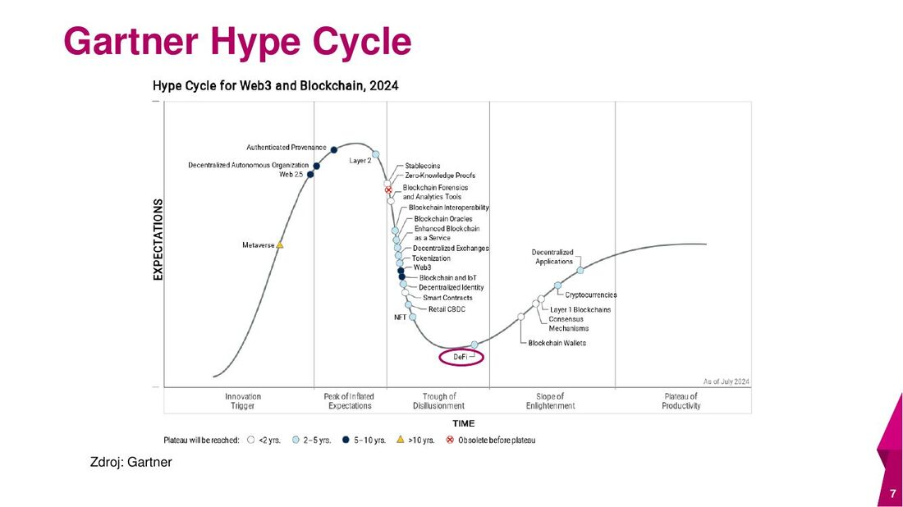
Slajd 7: Hype Cycle for Web3 and Blockchain (Gartner, stav červenec 2024). DeFi je v dolní části fáze deziluze. Na slajdech 33, 53, 65 a 79 se stejný graf opakuje se zvýrazněnými kryptoměnami (sklon pochopení přínosu), tokenizací a stablecoiny (propad z vrcholu) a smart kontrakty (deziluze).
Z grafu: DeFi je na dně fáze deziluze (plató do 2–5 let); kryptoměny a decentralizované aplikace stoupají po svahu pochopení přínosu; stablecoiny, tokenizace, smart kontrakty klesají do deziluze. Barva bodu říká, za jak dlouho technologie dosáhne plató (<2 roky, 2–5, 5–10, >10 let).
Intuice: přednášející používá graf jako rámec celé přednášky. Ke každé hlavní části (kryptoaktiva, tokenizace, stablecoiny, DeFi protokoly) se vrací a ukazuje, kde se právě technologie nachází (s. 33, 53, 65, 79).
Historie DeFi (s. 8)
První zmínky o DeFi sahají do 2015 s příchodem platformy Ethereum, která umožnila tvorbu smart kontraktů.
MakerDAO je jeden z prvních významných projektů DeFi (2017).
2018: vznikly další platformy, např. Compound a Uniswap.
Další milníky: Aave a Synthetix. DeFi dnes zahrnuje širokou škálu služeb.
Výhody a nevýhody DeFi (s. 9)
Výhody
Transparentnost: všechny transakce jsou vidět na blockchainu.
Dostupnost: služby může využít každý s internetem.
Rychlé transakce: v reálném čase.
Nízké poplatky: nižší než u tradičních institucí.
Nevýhody
Bezpečnostní rizika: zranitelné smart kontrakty.
Vysoká volatilita kryptoměn.
Právní nejistota: regulace se rychle mění.
Složité uživatelské rozhraní pro nováčky.
Riziko podvodů a hacků.
DeFi vs. tradiční finance, TradFi (s. 10)
Kritérium
TradFi
DeFi
Zprostředkovatelé
banky, burzy, pojišťovny
smart kontrakty, decentralizované platformy
Přístup
omezený (KYC, schválení institucí)
otevřený, pseudonymní, bez nutnosti schválení
Rychlost transakcí
dny až hodiny
minuty až sekundy
Transparentnost
omezená, většinou neveřejná
plná (veřejné blockchainy)
Regulace
přísně regulované státními orgány
minimální až žádná
Dostupnost
omezená geograficky i finančně
globální, pro všechny s internetem
Bezpečnost
pod dohledem institucí, ale náchylná na selhání
závislá na kvalitě kódu, riziko hacknutí
Zajištění důvěry
důvěra v instituce
důvěra v kód („code is law“)
Inovace
pomalejší, postupná
rychlá, experimentální
Intuice: hlavní rozdíl je v tom, komu věříte. V TradFi věříte instituci a státnímu dohledu, v DeFi kódu smart kontraktu. Proto má DeFi lepší transparentnost a rychlost, ale horší ochranu uživatele (s. 10, 90).
Stablecoiny: DAI, USDC (stabilizují hodnotu kryptoměn).
Yield farming: Yearn Finance (optimalizace výnosů z DeFi protokolů).
Regulace DeFi: klíčové aspekty, stav, výzvy (s. 12–14)
Klíčové aspekty (s. 12):
AML/KYC: identifikace klientů (KYC, Know Your Customer), monitorování transakcí a prevence praní špinavých peněz (AML, Anti-Money Laundering).
Pravidla pro správu: jasná pravidla řízení a provozu platforem, spolupráce regulátorů s komunitou DeFi.
Transparentnost: povinnost zveřejňovat rizika a poplatky, ochrana uživatelů před podvody.
Současný stav (s. 13):
EU: ESMA a EBA; ochranu investorů zajišťují MiFID II a AMLD.
USA:FinCEN dohlíží na AML, SEC reguluje cenné papíry a compliance.
Asie: Singapur a Hongkong mají inovativní regulační rámce a podporují inovace DeFi.
Výzvy (s. 14):globální koordinace (různé přístupy jurisdikcí, potřeba harmonizace), decentralizace (jak regulovat platformy bez centrálního provozovatele, rovnováha mezi regulací a inovací), technologický vývoj (regulace musí rychle následovat inovace).
⚠️ Pozor: slajd 13 uvádí, že DeFi v EU „regulují“ ESMA a EBA. Slajd 45 ale říká, že MiCA DeFi přímo neregulují; očekává se budoucí doplnění a dnes jde spíše o „šedou zónu“. Pro test platí obojí: dohled a MiFID II/AMLD existují, ale DeFi jako takové nemá vlastní komplexní pravidla.
Blockchain 1/3 až 3/3 (s. 15–17)
Blockchain je distribuovaná databáze sdílená mezi uzly sítě. Každý blok obsahuje seznam transakcí a hash předchozího bloku. Hash je kryptografický otisk, který zabezpečuje data. Jednou zapsané transakce nelze měnit (neměnnost). Shodu uzlů zajišťují konsenzuální algoritmy (např. Proof of Work, Proof of Stake). Příklady: Bitcoin, Ethereum, Binance Smart Chain (s. 15).
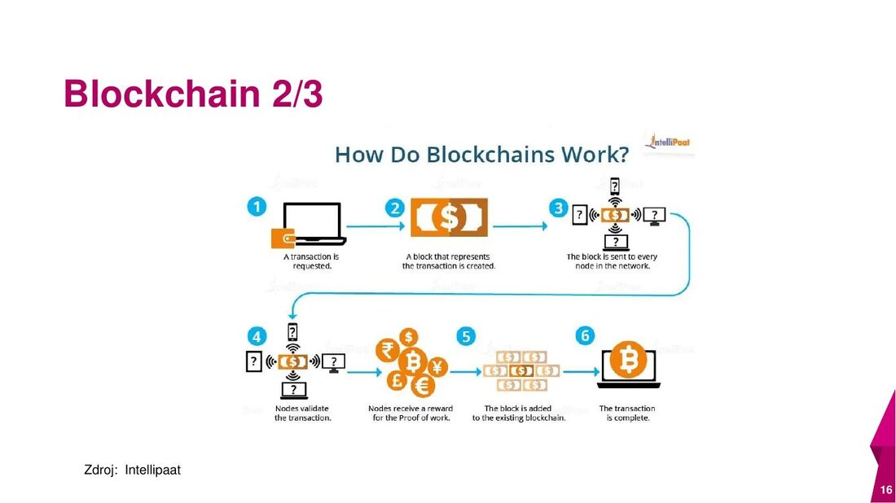
Slajd 16 (Intellipaat): šest kroků. 1) požadavek na transakci, 2) vznik bloku, 3) rozeslání všem uzlům, 4) validace uzly, 5) uzly dostanou odměnu za Proof of Work a blok se přidá do řetězce, 6) transakce je hotová.
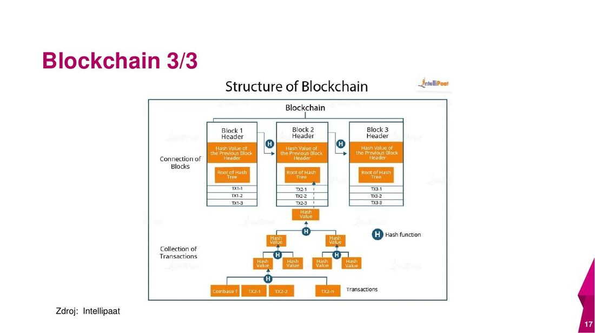
Slajd 17 (Intellipaat): struktura řetězce. Hlavička každého bloku obsahuje hash hlavičky předchozího bloku a kořen hashového stromu transakcí. Změna jedné transakce změní hash bloku i všech následujících.
Intuice: proto je blockchain „neměnný“. Kdo by přepsal starou transakci, změnil by hash jejího bloku, a tím by se rozbilo propojení všech dalších bloků. Ostatní uzly by změnu odmítly.
DLT vs. blockchain (s. 18–19)
DLT je obecný pojem pro jakoukoli technologii, která distribuuje záznamy (ledger) mezi více účastníků (uzlů) sdílených a synchronizovaných nezávisle na centrální autoritě. Blockchain je konkrétní druh DLT, který data organizuje do bloků kryptograficky spojených s předchozím blokem (s. 18).
DLT (širší pojem)
Blockchain (konkrétní typ DLT)
Struktura
data nemusí být v blocích
data v sekvenci bloků
Konsenzus
různé: Proof of Stake, Proof of Authority, Byzantine Fault Tolerance aj.
nejčastěji Proof of Work nebo Proof of Stake (Bitcoin, Ethereum)
Decentralizace
nemusí být úplná; mohou existovat centralizované prvky
většinou plná; veřejné blockchainy jsou obzvlášť decentralizované
Použití
finance, zdravotnictví, logistika, státní správa; tam, kde není třeba plná decentralizace ani transparentnost
nejčastěji kryptoměny, dále smart kontrakty, správa dat, dApps
⚠️ Pozor: pojmy se často zaměňují. Každý blockchain je DLT, ale ne každá DLT je blockchain. Úplná decentralizace je typická pro blockchain, ne podmínkou DLT (s. 18–19). Souhrnný slajd: blockchain je nástroj, ne cíl (s. 90).
Platby: blockchain jako nástroj pro DeFi (s. 20–26)
V centralizovaném systému jde platba přes řetězec: odesílatel, jeho banka, platební síť (Visa, Mastercard, PayPal, Venmo), banka příjemce, příjemce. V decentralizovaném systému jde platba od odesílatele k příjemci přímo přes blockchain (s. 20).
Struktura transakce dnes (s. 21)
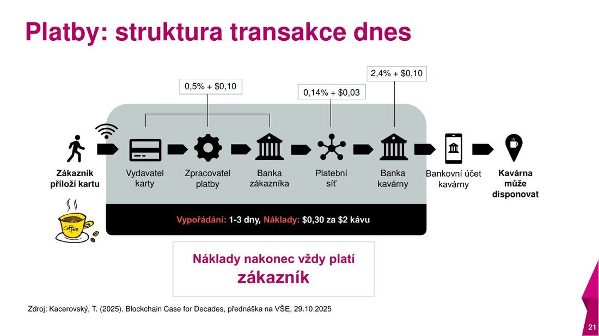
Slajd 21 (Kacerovský, 2025): platba kartou za kávu. Vypořádání trvá 1–3 dny a stojí 0,30 USD za kávu za 2 USD. Náklady nakonec vždy platí zákazník.
Příklad (kontrola čísel ze slajdu 21): káva za 2 USD, poplatky podle slajdu.
1) Vydavatel karty, zpracovatel a banka zákazníka: $0{,}5\,\% \cdot 2 + 0{,}10 = 0{,}11$ USD.
2) Platební síť: $0{,}14\,\% \cdot 2 + 0{,}03 = 0{,}0328$ USD.
3) Banka kavárny: $2{,}4\,\% \cdot 2 + 0{,}10 = 0{,}148$ USD.
4) Součet: $0{,}11 + 0{,}0328 + 0{,}148 = 0{,}2908 \approx 0{,}30$ USD, tedy zhruba 15 % ceny kávy. Sedí se slajdem (0,30 USD).
Náklady na transakci podle typu platby (s. 22)
Typ platby
Poplatek
Vypořádání
Poznámka ze slajdu
Kreditní karty
2–3 % + 0,30 USD
1–3 pracovní dny
vysoké poplatky, riziko „reklamace platby“
Debetní karty
0,9 % + 0,15 USD
1–3 pracovní dny
nižší poplatky, delší vypořádání
Clearingové domy
0,20–1,50 USD
3–5 pracovních dnů
jen domácí platby spřátelených bank
Mezinárodní převody
30–50 USD
1–5 pracovních dnů
vysoké poplatky, nevýhodné kurzy
Remitence
5–10 %
jednotky dní
záleží na destinaci a poskytovateli
P2P (PayPal)
zdarma, poplatky za výběry
okamžitě
platby „zdarma“ mají skryté poplatky
Blockchain a stablecoiny
< 0,01 USD
okamžitě (sekundy až minuty)
globální dostupnost, zanedbatelné poplatky
Obchody vs. supermarket (s. 23–24)
Dnešní platby jsou „chaos a poplatky“: peníze procházejí mnoha samostatnými systémy. Blockchain je přirovnán k obchodnímu centru: všechny typy zboží a služeb v jedné budově bez pobíhání po městě. Slajd 24 to ilustruje přechodem od malých obchodů k supermarketu (s. 23–24). Podobně fragmentovaný je i finanční systém jednotlivce (účty u různých bank, brokerů, fintechů, hypotéka, leasing, nelikvidní investice, s. 56); blockchain ho může sjednotit do jedné aplikace, což povede k efektivnějšímu využití kapitálu (s. 57).
Platby na bázi blockchainu v budoucnu (s. 25)
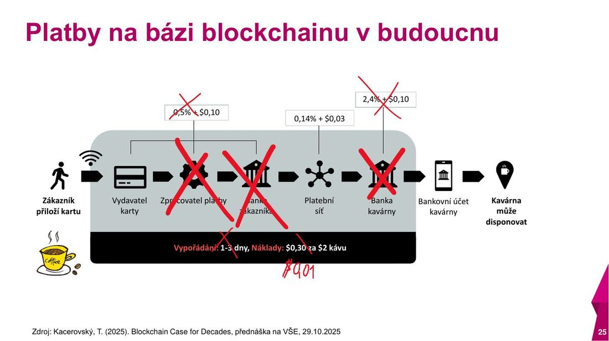
Slajd 25: stejná platba za kávu, ale zpracovatel, banka zákazníka a banka kavárny jsou přeškrtnuti. Vypořádání se zkracuje z 1–3 dnů na okamžité a náklady klesají z 0,30 USD na 0,01 USD. Zbývá vydavatel karty a platební síť.
Příklad (úspora): 1) Dnes 0,30 USD ze 2 USD = 15 %. 2) Blockchain 0,01 USD ze 2 USD = 0,5 %. 3) Úspora $0{,}30 - 0{,}01 = 0{,}29$ USD na kávu, tedy náklady klesnou přibližně na 1/30.
Slajd 26 uvádí, kdo už blockchain pro platby používá (PayPal, Stripe, Visa a Mastercard, Société Générale) a kdo do něj investuje (BlackRock, J.P. Morgan, Bank of America, WisdomTree, Citi).
Smart kontrakty vs. tradiční kontrakty (s. 27–28)
Smart kontrakt je samo-vykonávací smlouva, jejíž podmínky jsou zapsané v kódu. Automaticky se vykoná, jakmile jsou splněny definované podmínky. Eliminuje zprostředkovatele, je nezměnitelný a transparentní. V DeFi se používá pro půjčky, pojištění a obchodování. Příklady: MakerDAO (vytváření DAI), Uniswap (obchodování) (s. 27).
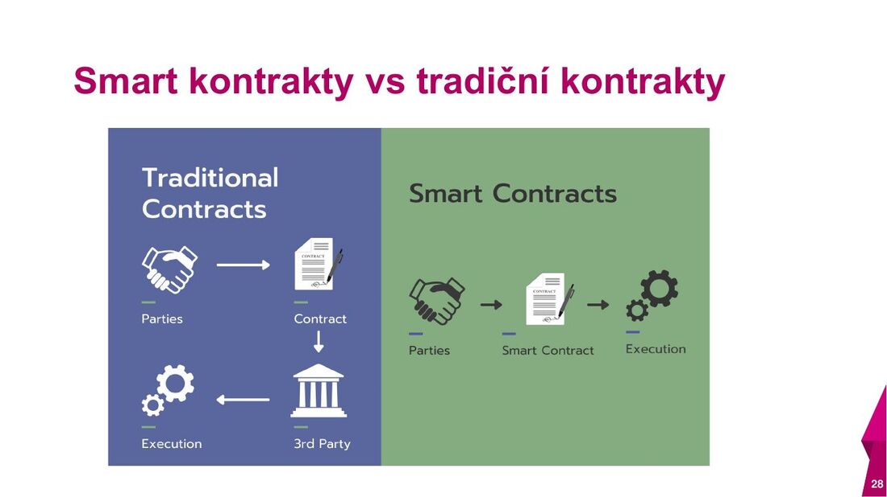
Slajd 28: u tradičního kontraktu jdou strany, smlouva, třetí strana (soud, banka, notář) a až pak vykonání. U smart kontraktu: strany, smart kontrakt a rovnou vykonání, bez třetí strany.
Bitcoin: výnos, volatilita, Sharpe ratio, korelace (s. 29–31)
BTC je peer-to-peer kryptoaktivum na blockchainu; tvůrce Satoshi Nakamoto, 2008/2009; maximální nabídka 21 milionů jednotek; konsenzus proof-of-work, síť je zabezpečena těžbou (s. 29).
Ekonomická otázka: je Bitcoin uchovatel hodnoty, platební prostředek, nebo spekulativní aktivum? Důležitější než samotný Bitcoin je technologie, na které funguje: blockchain (s. 29).
Výnos, volatilita a Sharpe ratio, 2021–2025 (ČNB 2025, s. 30):
Aktivum
Průměrný výnos (% p.a.)
Průměrná volatilita (% p.a.)
Sharpe ratio
Bondy (UST 1–10 let)
0,22
3,74
−0,81
S&P 500
14,19
15,51
0,71
NASDAQ
13,48
19,32
0,53
Russell 2000
5,88
20,36
0,13
Zlato
13,05
13,44
0,73
Bitcoin
50,26
62,97
0,75
Sharpe ratio $s = \dfrac{r - r_f}{\sigma}$, kde $r$ je výnos, $r_f$ bezrizikový výnos a $\sigma$ volatilita (s. 30). Měří výnos nad bezrizikovou sazbou na jednotku rizika.
Příklad (dopočet bezrizikové sazby a kontrola Sharpe):
1) Slajd bezrizikovou sazbu neuvádí. Z řádku bondů: $-0{,}81 = \dfrac{0{,}22 - r_f}{3{,}74}$, tedy $r_f = 0{,}22 + 0{,}81 \cdot 3{,}74 \approx 3{,}25\,\%$ (můj dopočet).
2) Bitcoin: $s = \dfrac{50{,}26 - 3{,}25}{62{,}97} = \dfrac{47{,}01}{62{,}97} \approx 0{,}75$. Sedí se slajdem.
3) S&P 500: $\dfrac{14{,}19 - 3{,}25}{15{,}51} \approx 0{,}71$ a zlato: $\dfrac{13{,}05 - 3{,}25}{13{,}44} \approx 0{,}73$. Obojí sedí.
4) Bondy mají výnos 0,22 % pod bezrizikovou sazbou 3,25 %, proto je Sharpe záporné ($-0{,}81$).
Intuice: Bitcoin měl obrovský výnos (50,26 %), ale také obrovskou volatilitu (62,97 %, čtyřikrát víc než S&P 500). Výsledné Sharpe 0,75 je jen o málo vyšší než u zlata (0,73) a S&P 500 (0,71). Vyšší výnos tedy skoro celý „zaplatil“ vyšším rizikem.
Korelace Bitcoinu s ostatními aktivy (měsíční data, lokální měny; na slajdu je období uvedeno „01/11 – 10/25“, poznámka pod čarou říká „data za 2021–2025“; s. 31):
S&P 500
NASDAQ
MSCI EURO
FTSE 100
Nikkei 225
Bondy US 1–10 let
Bondy Německo 1–10 let
Bondy Japonsko 1–10 let
Zlato
0,07
0,05
0,03
0,04
0,06
0,10
0,11
0,06
0,01
Všechny korelace jsou blízko nuly (0,01 až 0,11), nejvyšší je s německými bondy (0,11), nejnižší se zlatem (0,01). Bitcoin se tedy ve sledovaném období pohyboval téměř nezávisle na tradičních aktivech.
⚠️ Pozor: slajdy 30–31 uvádějí „data za 2021–2025“ (u korelací je v záhlaví navíc „01/11 – 10/25“, což se s tím nedá jednoznačně sladit). Čísla patří ke sledovanému období ČNB, ne k celé historii Bitcoinu. Nízká korelace neznamená bezpečnost: volatilita je extrémní.
Kryptoaktiva a související pojmy (s. 34)
Kryptoaktiva jsou digitální aktiva, která lze elektronicky převádět mezi držiteli pomocí technologie distribuovaného registru s využitím kryptografie k jejich zabezpečení (ČNB, 2022).
⚠️ Pozor:„kryptoměna“ není správný pojem. Nesplňuje definici peněz jako numéraire (prostředek směny, zúčtovací jednotka, uchovatel hodnoty); jde o nehmotnou movitou věc (s. 34).
Slajd 34 také připomíná, že banky jsou transformátor rizika (kupují riziko a prodávají jistotu) a existuje mnoho ESG rizik, která se snaží reflektovat regulace. Otázky, ke kterým se přednáška vrací: energetická náročnost těžby, rizika ocenění, rozdíl CBDC vs. kryptoaktiva a zda jsou kryptoaktiva udržitelnou investicí pro banky.
Krypto vs. ESG trilema (s. 35)
ESG = Environmental, Social, Governance. ESG trilema staví proti sobě tři vrcholy trojúhelníku: udržitelnost, efektivitu a ideologii (Institut udržitelných financí FFÚ VŠE). Slajd dále rozlišuje řízení klimatických rizik, ESG regulaci a reporting a ESG příležitosti.
CBDC vs. kryptoaktiva (s. 36)
Kritérium
CBDC
Kryptoaktivum
Emitent
centrální banka (oficiální měna, zákonné platidlo, závazek centrální banky)
soukromý subjekt nebo komunita (nejsou kryta žádnou autoritou, nejsou zákonným platidlem)
Stabilita hodnoty
rovná hodnotě národní měny (d-euro = euro), stará se centrální banka
velmi volatilní, závislá čistě na nabídce a poptávce
Právní postavení
plně regulované, uznávané jako oficiální platidlo
regulace se liší podle zemí a času, riziko změny legislativy
Technologie
mohou nebo nemusí využívat blockchain
většinou založena na blockchainu
Cíl a účel
digitální hotovost a platební nástroj pro veřejnost nebo bankovní sektor
různý: platba (bitcoin), platforma pro chytré smlouvy (ethereum), spekulace
Anonymita
různá; prevence praní peněz je argument pro nižší anonymitu
transakce transparentní, uživatelé často pseudonymní
Měnová politika
vazba na měnovou politiku centrální banky (ovlivňuje inflaci a ekonomickou aktivitu)
bez vazby na měnovou politiku; nabídka často předem daná (max. 21 mil. BTC)
⚠️ Pozor: CBDC nemusí používat blockchain, kryptoaktiva ve většině případů ano. CBDC je závazek centrální banky; kryptoaktivum není závazkem nikoho (s. 36).
TrumpCoin a hypotéza efektivních trhů (s. 37)
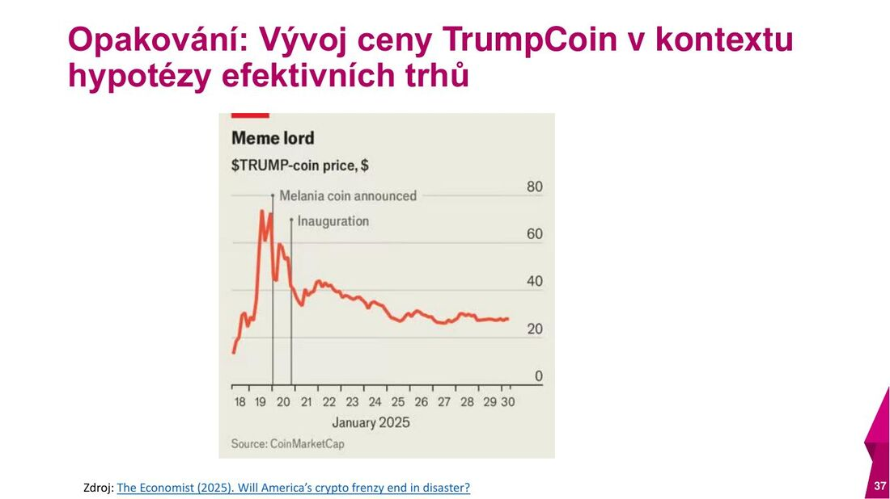
Slajd 37 (The Economist, 2025): cena $TRUMP-coinu 18.–30. 1. 2025. Z grafu: prudký růst na zhruba 70 USD kolem 19. 1., pak pokles při oznámení Melania coinu a inauguraci a postupný propad k zhruba 25 USD.
Slajd je zařazen jako opakování z minulé přednášky o hypotéze efektivních trhů: cena memecoinu se po veřejné události (inaugurace, oznámení dalšího coinu) rychle vrátila dolů, což ukazuje, jak silně na ni působí spekulace a zprávy. Z grafu čtu přibližné hodnoty; slajd přesná čísla neuvádí.
Kryptoaktiva v číslech (s. 38)
#
Název
Cena k 1. 10. 2026 (USD)
Tržní kapitalizace k 1. 10. 2026
Meziroční změna ceny
1
Bitcoin (BTC)
83 701
1,68 bil. USD
−29,5 %
2
Ethereum (ETH)
2 680
327 mld. USD
−35,4 %
3
Tether (USDT)
0,999
184 mld. USD
≈ 0 %
4
BNB (BNB)
770
103 mld. USD
−24,7 %
5
XRP (XRP)
1,49
94 mld. USD
−49,5 %
Zdroj slajdu: CoinMarketCap, data k 1. 10. 2026.
Intuice: z pěti největších kryptoaktiv je jediné stabilní Tether (stablecoin, změna ceny ≈ 0 %); ostatní za rok ztratily čtvrtinu až polovinu hodnoty (s. 38). Pěkně to ukazuje rozdíl mezi volatilní kryptoměnou a stablecoinem.
Energetická náročnost těžby Bitcoinu a PoW (s. 39–40)
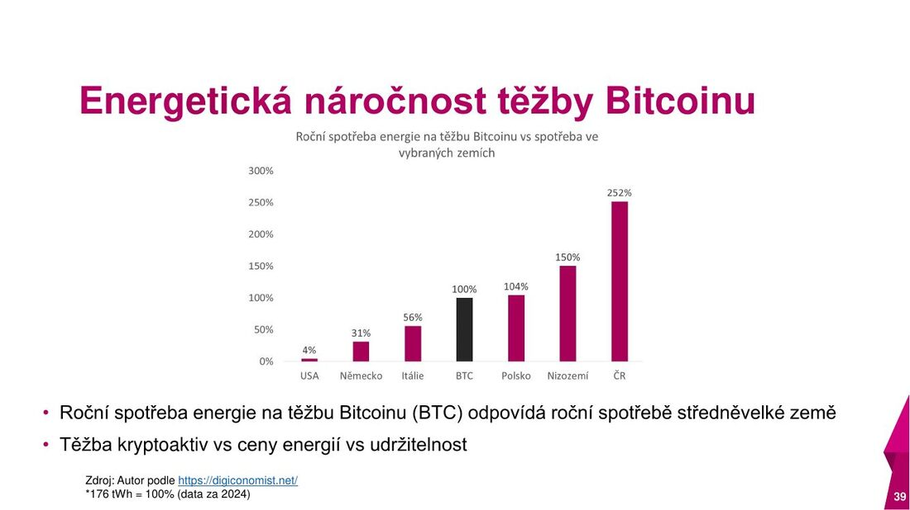
Slajd 39 (Digiconomist, data za 2024): roční spotřeba energie na těžbu Bitcoinu (176 TWh = 100 %) ve srovnání s USA 4 %, Německem 31 %, Itálií 56 %, Polskem 104 %, Nizozemskem 150 % a ČR 252 %.
Slajd říká, že roční spotřeba energie na těžbu Bitcoinu odpovídá roční spotřebě středně velké země (s. 39). Z hodnot je vidět, že Polsko (104 %) má spotřebu skoro stejnou jako BTC. Sloupce čtu jako spotřebu těžby Bitcoinu vyjádřenou v % spotřeby dané země (tomu odpovídá pořadí velikosti zemí); slajd to výslovně nerozepisuje.
Proof of Work (PoW): uživatel platebního systému dokazuje hodnotu platebního prostředku vynaloženou prací (Bitcoin, Ethereum). Je to bezpečné, ale vysoce energeticky náročné. Proof of Stake (PoS): hlasování o vytváření bloků na základě prokázaného vlastnictví určitého množství měny (Ethereum 2.0, Cardano). Je to alternativa a inspirace pro regulatorní pravidla, možná úspora až 99,95 % energie (s. 40).
Spotřeba elektřiny sítí VISA, MasterCard a American Express byla v roce 2020 pod 1 % spotřeby Bitcoinu a Etherea (OSTP, 2022; s. 40).
Čtyři implikace energetické náročnosti (s. 41–44, 48–50)
Přednášející z energetické náročnosti odvozuje čtyři implikace (s. 41):
Ocenění kryptoaktiv (s. 42). Vysoká uhlíková stopa pravděpodobně ovlivní budoucí ocenění, až státy EU zavedou politiku zelené tranzice. Roste i riziko přechodu (transition risk) celého finančního sektoru při rostoucí expozici vůči takovým aktivům. Existují snahy PoW těžbu zakázat (Švédsko, Evropský parlament 2022).
Veřejné instituce a politika (s. 43). Je třeba vyhodnotit, zda uhlíková stopa nepodkopává cíl čistých nulových emisí. Paralela s auty: veřejné orgány si vybírají, zda podporovat „elektromobil“ (PoS) nebo omezit či zakázat „auto na fosilní paliva“ (PoW).
Investoři (s. 44). Musí posoudit soulad s cíli ESG. Je vysoce nepravděpodobné, že by investice do aktiv na bázi PoW mohly být součástí ESG investiční strategie. Musí zvážit, zda cena zahrnuje negativní externality těžby, a bude tlak regulace a ratingových agentur.
Regulace bank (s. 48–50), viz níže.
Nařízení MiCA (s. 45)
MiCA (Markets in Crypto-Assets, 2023/1114/EU) je legislativa EU, která přináší jasný právní rámec pro vydávání, obchodování a poskytování služeb s kryptoaktivy na evropském trhu. Reguluje stablecoiny, poskytovatele krypto-služeb (CASP) a emisi kryptoaktiv (s. 45).
Platnost od června 2023, účinnost postupně 2024–2025 (s. 45).
Cíle: harmonizace pravidel v EU, ochrana spotřebitelů a prevence zneužití, stabilita a transparentnost trhu.
DeFi v MiCA: přímo se nereguluje, očekává se budoucí doplnění; dnes spíše „šedá zóna“.
ČNB poskytla 11 licencí k 30. 9. 2026 (z 251 žadatelů) (s. 45).
Doplněk (dřívější výklad k tématu DeFi, podle nařízení 2023/1114 a ČNB; stav k 30. 9. 2026): MiCA dělí tokeny na EMT (electronic money token, stabilita odkazem na jednu oficiální měnu), ART (asset-referenced token, stabilita odkazem na jinou hodnotu nebo koš, včetně měn) a ostatní kryptoaktiva. Pravidla pro ART a EMT se začala používat 30. 6. 2024, obecně včetně režimu CASP 30. 12. 2024; přechodné období pro dosavadní poskytovatele skončilo 1. 7. 2026. Drží-li držitel EMT token, má právo na jeho výměnu za nominální hodnotu v referenční měně.
CASP (s. 46)
CASP = Crypto-Asset Service Provider, poskytovatel služeb s kryptoaktivy. Podle MiCA může poskytovat tyto služby (s. 46):
provozování obchodní platformy pro kryptoaktiva (burza),
směna kryptoaktiv za fiat měny nebo mezi sebou,
správa a úschova kryptoaktiv (custody, wallet),
provádění příkazů jménem klientů,
umisťování kryptoaktiv (placement),
poradenství v oblasti kryptoaktiv.
⚠️ Pozor:CASP je poskytovatel služby, ne druh tokenu (doplněk: tokeny jsou ART, EMT a ostatní kryptoaktiva). V testu se můžou pojmy CASP, EMT a ART zaměnit.
Licencování a dohled CASP v ČR (s. 47)
Poskytovatelé služeb s kryptoaktivy musí získat povolení ČNB (CASP licence).
Požadavky: sídlo v EU, kapitálové minimum 50–150 tis. EUR podle typu služby, řízení rizik, governance, AML/KYC procesy, ochrana klientských aktiv a transparentnost.
V ČR převažují menší hráči (burzy, směnárny); většina zatím jen registrace u FAÚ (AML).
Banky a fintechy vyčkávají na praxi.
⚠️ Pozor (rozpor ve slajdech): slajd 45 uvádí k 30. 9. 2026 11 udělených licencí z 251 žadatelů, zatímco slajd 47 uvádí „plná MiCA licence zatím neudělena (232 žádostí k 30. 9. 2025)“. Slajd 47 je starší (stav 2025). Aktuální stav je ten ze slajdu 45; v testu se pravděpodobně ptají na něj.
4. implikace: regulace bank (s. 48–50)
1/3 (s. 48): banky budou muset začlenit klimatická finanční rizika kryptoaktiv do své klimatické strategie jako součásti celkové rizikové strategie. Platí pro ně zásady Basilejského výboru pro bankovní dohled (BCBS, 2022) pro řízení klimatických rizik, které se týkají jakékoli expozice, tedy i vůči kryptoaktivům. Zmíněna je i MiCA.
2/3 (s. 49): návrh Evropské komise na dokončení Basel III v EU očekává, že banky definují interní plány přechodu na podporu strategií ESG (včetně kryptoaktiv). Top světové banky s 30 % globálních bankovních aktiv se dobrovolně zavázaly k čistým nulovým emisím do 2050 s průběžnými cíli do 2030 (NZBA, 2022). Přísnější požadavky mohou jít od vyšších rizikových vah (aktiva) po přísnější kapitálové zacházení (pasiva).
3/3 (s. 50): dopad na kapitál a RVA (rizikově vážená aktiva).
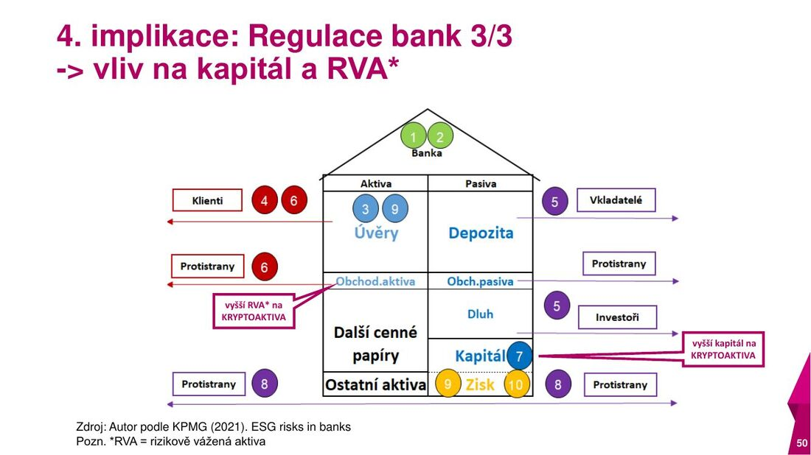
Slajd 50 (podle KPMG, 2021): bilance banky. Kryptoaktiva v obchodních aktivech → vyšší RVA; na straně pasiv → vyšší kapitál na kryptoaktiva.
Intuice: vyšší riziková váha znamená, že stejná expozice „spotřebuje“ víc kapitálu. Banku tedy držení kryptoaktiv víc stojí, a tím ztrácí atraktivitu.
Jsou kryptoaktiva udržitelná investice pro banky? (s. 51)
Kvůli (nejen) vysoké energetické náročnosti budou kryptoaktiva v hledáčku regulátorů a politiků.
Paralela: regulatorní tlak a zánik měny Facebooku (Diem/Libra).
Závěr slajdu: kryptoaktiva nejsou udržitelná investice pro banky.
Tokenizace aktiv: základní pojmy (s. 54)
Tokenizace je převod reálných (fyzických) i digitálních aktiv do podoby tokenů na blockchainu. Token je digitální reprezentace hodnoty konkrétního aktiva (s. 54).
Zvyšuje bezpečnost a transparentnost vlastnictví a usnadňuje sledování historie vlastnictví.
Tokeny lze obchodovat na decentralizovaných burzách a dělit na menší části (frakční vlastnictví), což zvyšuje likviditu a dostupnost pro menší investory.
Snižuje náklady na převod a správu aktiv, protože odpadají zprostředkovatelé.
Výhody tokenizovaných aktiv (s. 55)
Snadnější převod a obchodování aktiv mezi uživateli.
Nižší transakční náklady a poplatky (eliminace zprostředkovatelů).
Vyšší bezpečnost a transparentnost díky blockchainu (kryptografie, veřejně ověřitelné transakce).
Frakční vlastnictví umožňuje širší přístup k investicím (podíl na hodnotném aktivu).
Fragmentovaný finanční systém dnes a sjednocení (s. 56–57)
Dnes má jednotlivec své finance rozdělené: běžný a spořicí účet (KB, ČSOB, Fio), termínovaný vklad v jiné bance, akcie u brokerů (XTB, Patria, WOOD), nelikvidní investice a podíly (VC, s.r.o.), hypotéka a leasing, cizoměnové účty (Revolut, Wise) (s. 56). Blockchain by je mohl sjednotit do jedné aplikace; díky transparentnosti a přehlednosti vznikne řada nových možností vedoucích k efektivnějšímu využití kapitálu (s. 57).
Příklady tokenizovaných aktiv (s. 58)
Nemovitosti: tokeny jako podíl, frakční vlastnictví, vyšší likvidita tradičně nelikvidního aktiva.
Umění: podíly na hodnotných uměleckých dílech.
Komodity: zlato, ropa; obchodování na blockchainových burzách.
Cenné papíry: akcie a dluhopisy; snazší obchodování a správa.
Tokenizační platformy (s. 59)
Ethereum: hlavní platforma, podpora smart kontraktů; tokeny ERC-20 a ERC-721.
Polkadot: interoperabilita mezi blockchainy, parachainy.
BNB Smart Chain (dříve Binance Smart Chain): nízké náklady, vysoká rychlost, kompatibilita s Ethereum.
Tezos: samospravované řešení, upgrade bez hard forku.
Ethereum (platforma) vs. Ether (kryptoaktivum) (s. 60)
Slajd 60 ukazuje čtyři klíčové rysy Etherea: smart kontrakty, decentralizované aplikace (dApps), Ether (ETH) a neustálý vývoj. Ethereum je platforma (blockchain, na kterém běží smart kontrakty a dApps), Ether (ETH) je kryptoaktivum této platformy. Doplněk (dřívější výklad, Ethereum.org): ETH se používá mj. k placení výpočetní práce („gas“) při provádění transakcí.
⚠️ Pozor: neplést platformu a aktivum. „Ethereum“ bez dalšího je síť; cena a tržní kapitalizace ze slajdu 38 se týkají ETH.
Právní a regulační aspekty tokenizace (s. 61)
Banky a finanční instituce musí dodržovat místní i mezinárodní předpisy; compliance je klíčová pro důvěru investorů a zákazníků.
Právní rámce chrání investory; transparentnost transakcí a vlastnictví zajišťuje blockchain.
Instituce musí sledovat budoucí regulační změny.
AML/KYC požadavky: identifikace a ověření klientů, opatření proti praní špinavých peněz.
Rizika a výzvy tokenizace (s. 62)
Technologická rizika: bezpečnost a škálovatelnost, hacky a ztráta prostředků.
Právní nejistoty a regulační změny: rámce se stále vyvíjejí.
Volatilita a tržní rizika: kolísání hodnoty, manipulace trhu, nedostatek likvidity.
Přijetí a důvěra investorů: je třeba zvýšit důvěru, rychlý vývoj technologií.
Budoucnost tokenizace (s. 63)
Očekávaný růst a přijetí, rostoucí zájem investorů.
Inovace technologií a platforem pro bezpečnost a efektivitu.
Větší zapojení tradičních finančních institucí (spolupráce bank a blockchainových platforem).
Zvýšená regulační pozornost a tvorba standardů.
Stablecoiny: základní pojmy (s. 66)
Stablecoiny jsou kryptoaktiva navázaná na stabilní aktiva (de facto státní měna na blockchainu). Cílem je snížit volatilitu běžnou u kryptoměn. Nejčastěji jsou navázány na fiat měny (USD, EUR). Stabilita je zajištěna rezervami nebo algoritmy; cílem je držet hodnotu 1:1 vůči vybranému aktivu (1 USDT ≈ 1 USD) (s. 66).
Příklady: Binance-Peg (BUSD), Pax Dollar (USDP), USD Coin (USDC), Tether (USDT). Poptávka po stablecoinech je úzce provázána s celkovou aktivitou v krypto ekosystému.
Business model emitentů stablecoinů (s. 67–68)
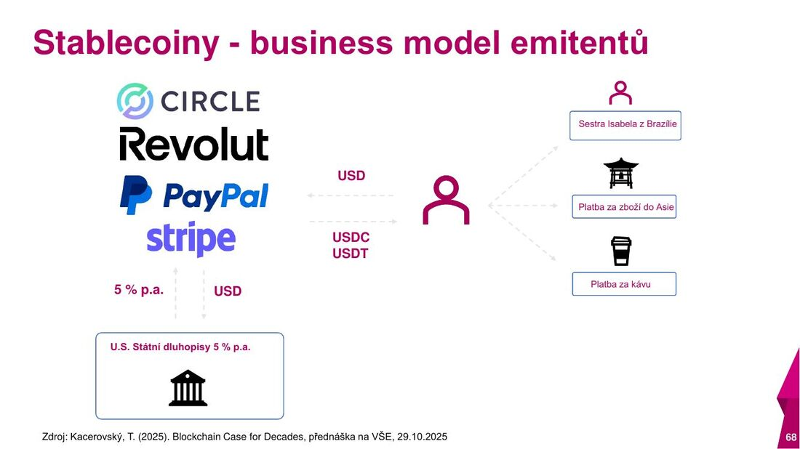
Slajd 68 (Kacerovský, 2025): klient vloží dolary a dostane USDC či USDT, které použije na platby. Emitent (Circle, Revolut, PayPal, Stripe) za dolary koupí státní dluhopisy USA s výnosem 5 % p.a., výnos zůstává emitentovi.
Obchodní model emitenta: z vybraných peněz získává výnos z termínovaných vkladů či státních dluhopisů. Emitenti stablecoinů jsou nyní 18. největším zahraničním věřitelem USA (s. 67).
PayPal vydal v 2024 vlastní dolarový stablecoin PYUSD na Ethereu (s. 67).
Circle vydává druhý nejpoužívanější stablecoin USDC a jako první dostal licenci Electronic Money Institution, díky které může v EU legálně vydávat stablecoiny USDC a EURC (s. 67).
Příklad (model emitenta, vlastní zjednodušený výpočet z čísel slajdu 68): emitent přijme od klientů 1 000 000 000 USD a koupí za ně státní dluhopisy s výnosem 5 % p.a.
1) Roční výnos: $1\,000\,000\,000 \cdot 0{,}05 = 50\,000\,000$ USD.
2) Klienti za držení stablecoinu úrok nedostanou (stablecoin je 1:1 k dolaru), takže výnos 50 mil. USD zůstává emitentovi. Odtud „byznys model“.
Stablecoiny: tržní kapitalizace (s. 69, 74)
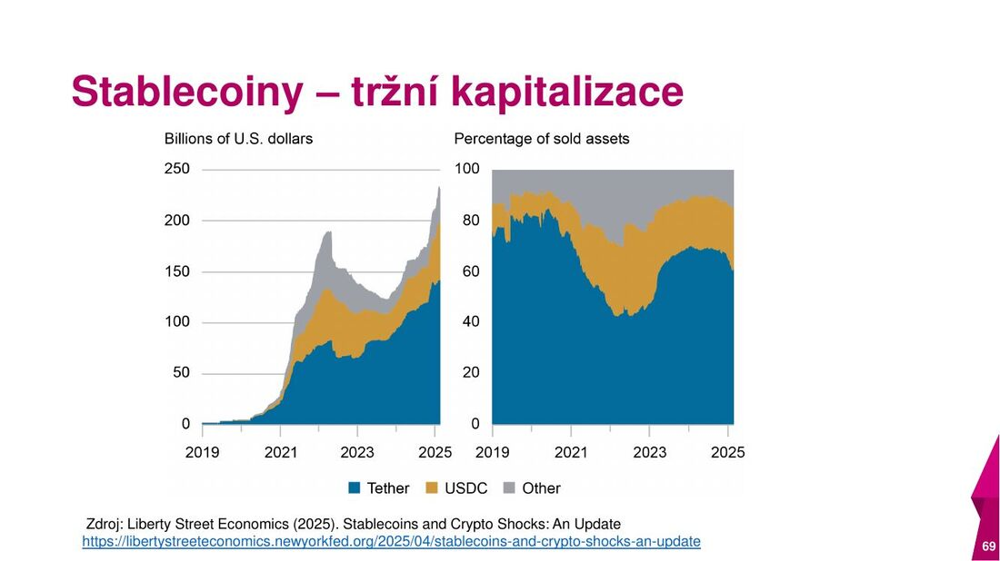
Slajd 69 (Liberty Street Economics, 2025): tržní kapitalizace stablecoinů (mld. USD) roste do cca 230 mld. v 2025; většinu tvoří Tether (modře), druhý je USDC. Pravý graf ukazuje podíl Tetheru zhruba 60 % a USDC přibližně čtvrtinu (čtu z grafu).
Tržní kapitalizace stablecoinů vzrostla ze 152 mld. USD v roce 2024 na 238 mld. USD v 4/2025 (s. 74). Stablecoiny jako USDC a USDT slouží jako „most“ mezi tradičními financemi a krypto světem, umožňují rychlé a levné transakce a podporují dolarovou dominanci v digitálním prostoru. Politická podpora: prezident Trump podporuje krypto a stablecoiny; vedlo to k návrhům zákonů STABLE Act a GENIUS Act o regulaci stablecoinů (s. 74).
Typy stablecoinů (s. 70)
Typ
Čím je kryt
Příklady
Klíčové rysy
Fiat-krytý
fiat měna (USD, EUR); rezervy na bankovních účtech
USDT, USDC
vyžaduje důvěru v centrální entitu
Krypto-krytý
jiné kryptoměny
DAI, sETH
vyžaduje nadměrné zajištění; volatilita závisí na krycí kryptoměně
Algoritmický
algoritmus udržuje stabilitu
AMPL, UST
nevyžaduje rezervy; riziko při selhání algoritmu
⚠️ Pozor: „stabilní“ v názvu není záruka. Fiat-krytý typ spoléhá na důvěru v emitenta a jeho rezervy, krypto-krytý je vystaven volatilitě zajištění, algoritmický nemá rezervy vůbec.
Složení kolaterálu stablecoinů (s. 71)
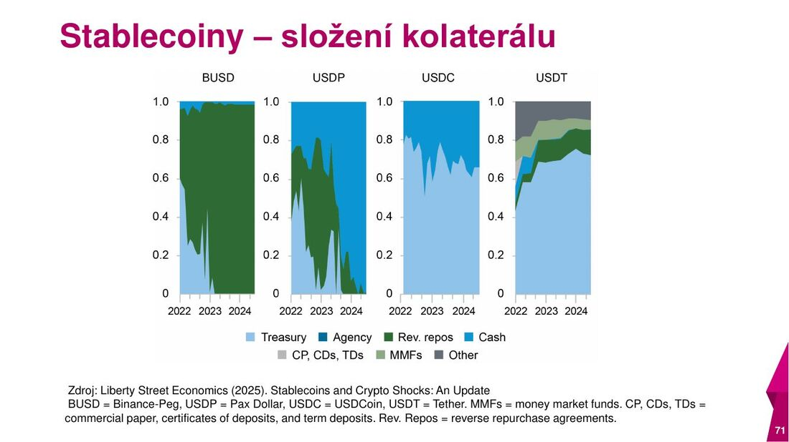
Slajd 71 (Liberty Street Economics, 2025): složení rezerv BUSD, USDP, USDC a USDT. Z grafů (zhruba): BUSD takřka celé v reverzních repech, USDP se přesunulo k hotovosti, USDC je ze dvou třetin v amerických státních dluhopisech a zbytek v hotovosti, USDT je převážně v amerických státních dluhopisech (kolem 70 %).
Hlavní poučení: rezervy fiat-krytých stablecoinů jsou nejčastěji státní dluhopisy USA (Treasuries), hotovost a reverzní repo operace; menší část tvoří fondy peněžního trhu, komerční papíry, depozitní certifikáty a termínované vklady. Složení se v čase mění a mezi emitenty liší (s. 71).
Výhody stablecoinů (s. 72)
Stabilita hodnoty: navázání na stabilní aktiva snižuje volatilitu, vhodné pro denní transakce a obchodování a uchování hodnoty v nestabilních trzích; podporuje důvěru uživatelů.
Rychlost a náklady transakcí: rychlejší než tradiční bankovní převody, nižší poplatky, globální přístup bez geografických omezení, využití blockchainu.
Impulsní odezvy stablecoinů na cenové šoky Bitcoinu (s. 73)
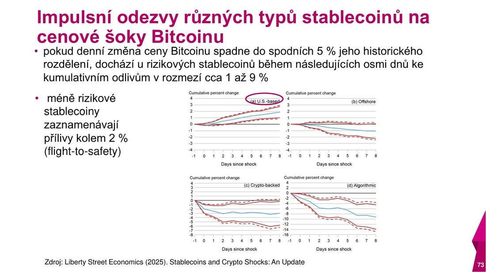
Slajd 73 (Liberty Street Economics, 2025): kumulativní změna (%) během osmi dnů po šoku. (a) stablecoiny z USA: přílivy do cca +2 až +3 %; (b) offshore: mírné odlivy; (c) krypto-kryté: odlivy cca −3 až −6 %; (d) algoritmické: největší odlivy až −9 až −14 % (čtu z grafu).
Pokud denní změna ceny Bitcoinu spadne do spodních 5 % historického rozdělení, dochází u rizikových stablecoinů během následujících osmi dnů ke kumulativním odlivům cca 1 až 9 %. Méně rizikové stablecoiny zaznamenávají přílivy kolem 2 % (flight-to-safety, útěk do bezpečí) (s. 73).
Význam stablecoinů pro finanční stabilitu (s. 74)
Rychlý růst trhu (152 → 238 mld. USD), klíčová role mostu mezi TradFi a krypto a politická podpora (viz výše). Kombinace velké velikosti a citlivosti rizikových typů na šoky je důvod, proč se stablecoiny řeší z pohledu finanční stability.
Regulace stablecoinů (s. 75)
Stav: různé přístupy v jednotlivých zemích; USA a EU pracují na regulačních rámcích; cíl je ochrana spotřebitelů a finanční stabilita; výzvou je globální harmonizace.
Požadavky: KYC a AML, transparentnost rezerv a pravidelné audity, ochrana spotřebitelů a zabezpečení prostředků, compliance s finančními předpisy.
V EU se stablecoiny řeší v MiCA (s. 45; doplněk: kategorie EMT a ART).
Stablecoiny v DeFi a Uniswap (s. 76–77)
MakerDAO: vytváření DAI a půjčky.
Compound: půjčování a vypůjčování stablecoinů.
Uniswap: obchodování se stablecoiny na decentralizované burze.
Aave: likviditní protokol pro stablecoiny.
Rizika: zranitelnosti smart kontraktů, regulace a právní rámce, hacky a ztráta prostředků, potřeba vyšší bezpečnosti a důvěry (s. 76).
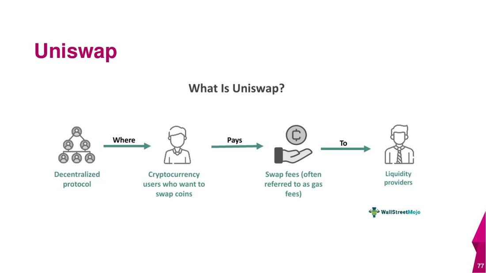
Slajd 77: Uniswap je decentralizovaný protokol, kde uživatelé, kteří chtějí směnit coiny, platí swap fees poskytovatelům likvidity (liquidity providers).
Doplněk (dřívější výklad, Uniswap docs): cenu určuje AMM (automated market maker); uživatel neobchoduje s protistranou, ale s poolem likvidity (zásoba tokenů v kontraktu). Poskytovatelé likvidity do poolu vloží tokeny a dostávají část poplatků. Základní model drží součin rezerv konstantní, $x \cdot y = k$, takže velký obchod posune cenu.
DeFi protokoly a smart kontrakty: jak fungují (s. 80–81)
Protokoly DeFi umožňují finanční transakce bez tradičních zprostředkovatelů; využívají smart kontrakty na blockchainu k automatizaci a zabezpečení. Pokrývají půjčky, pojištění a obchodování. Hlavní platformy: Ethereum, BNB Chain (s. 80).
Jak fungují (s. 81): postavené na blockchainu (transparentnost, bezpečnost); smart kontrakty automatizují procesy; decentralizace (nejsou pod kontrolou jediné entity); interoperabilita (spolupráce s jinými blockchainovými platformami).
Výhody smart kontraktů (s. 82)
Automatizace složitých transakcí, méně lidských chyb.
Snížení nákladů: bez zprostředkovatelů, méně administrativy a právních služeb.
Rychlost a efektivita: vykonání okamžitě po splnění podmínek.
Transparentnost a bezpečnost: podmínky veřejně dostupné na blockchainu, kryptografie zajišťuje nezměnitelnost.
Příklady DeFi protokolů (s. 83) a využití smart kontraktů (s. 85)
Protokol
K čemu slouží
Uniswap
decentralizovaná burza (DEX), automatizované obchodování tokenů, ceny určují AMM
Compound
půjčování a vypůjčování kryptoměn; vklad aktiv za úrok, nebo půjčka s úrokem
Synthetix
vytváření a obchodování syntetických aktiv (syntetické verze různých finančních aktiv)
Aave
půjčování a vypůjčování; nabízí i bleskové půjčky (flash loans)
Využití smart kontraktů v DeFi (s. 85): automatizované půjčky a výpůjčky, P2P obchodování na decentralizovaných burzách, pojištění (automatické vyplacení plnění), staking a yield farming (pasivní příjem).
Výzvy a rizika DeFi protokolů (s. 84)
Bezpečnostní rizika: zranitelnosti v kódu vedou k hackům a ztrátám.
Regulační nejistoty: rámce se vyvíjejí a liší se podle jurisdikcí.
Tržní volatilita tokenů a kryptoměn.
Inovace a technologické výzvy: škálovatelnost a interoperabilita mezi blockchainy.
Spolupráce s tradičními financemi je potřeba posílit.
⚠️ Pozor: smart kontrakt je „nezměnitelný a transparentní“ (s. 27), ale právě proto, že kód se po spuštění obtížně opravuje, chyba v kódu je největším rizikem (s. 84). „Samo-vykonávací“ neznamená „bezchybný“.
DeFi úvěr: základní pojmy (s. 87)
Klasickou centralizovanou formou úvěru je banka. Úvěrové protokoly DeFi (Compound, Aave) spojují tokeny s úrokovou sazbou určenou poměrem nabídky a půjčování. Vkladatelé dostanou od platformy vlastní tokeny představující jejich vložené tokeny plus stanovený úrok.
Podmínky úvěru mohou být složité a nástroje mohou být samy sekuritizovány a obchodovány (jako deriváty).
DeFi úvěry jsou obvykle zajištěny zástavou v digitálních aktivech držených ve smart kontraktu, proto není potřeba úvěrová kontrola ani hodnocení konkrétního dlužníka.
Kvůli výkyvům cen jsou úvěry přezajištěny: dlužník musí složit zástavu větší než hodnota úvěru.
Když hodnota zástavy klesne pod určený poměr k hodnotě úvěru, pozice se automaticky likviduje k úhradě dluhu.
Část úroků dlužníka jde do rezervního fondu, který nahrazuje ztráty věřitelům, když likvidace nestačí (neúspěšná likvidace).
Proto se úvěry používají hlavně k pákovému obchodování nebo k získání nových aktiv.
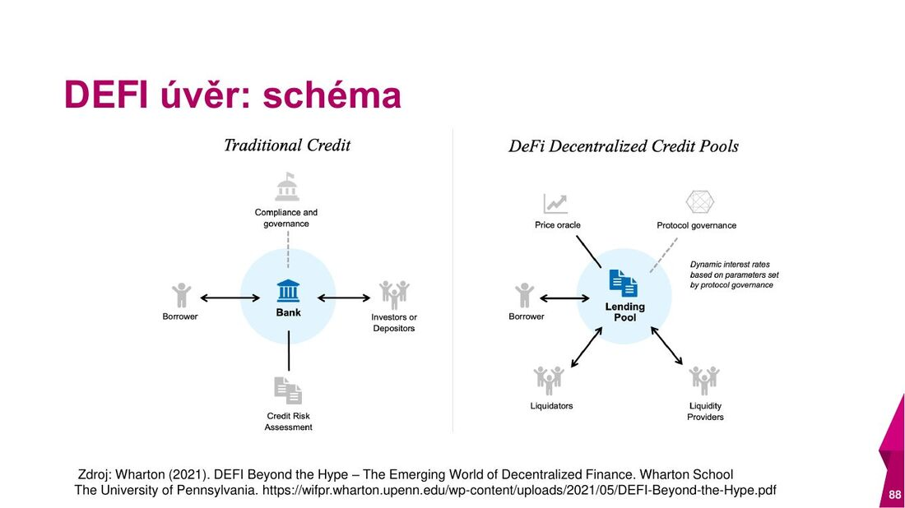
Slajd 88 (Wharton, 2021): vlevo tradiční úvěr (dlužník, banka, investoři/vkladatelé, posouzení úvěrového rizika, compliance). Vpravo DeFi: dlužník, lending pool, poskytovatelé likvidity, likvidátoři, price oracle (zdroj cen) a protokolová governance; úroky jsou dynamické podle parametrů nastavených governance.
Doplněk (dřívější výklad, Ethereum.org, Aave docs): LTV (loan-to-value) je poměr dluhu k hodnotě zástavy, $LTV = D / C$. Likvidátor je účastník, který při překročení limitu splatí část dluhu a získá zástavu s bonusem. Konkrétní limity a bonusy se liší podle protokolu a aktiva.
Příklad (vlastní modelový, čísla nejsou ze slajdů): dlužník složí zástavu v hodnotě 150 USD a půjčí si 100 USD. Protokol likviduje, když zástava klesne pod 125 % dluhu.
1) Přezajištění: $\dfrac{C}{D} = \dfrac{150}{100} = 150\,\%$ (zástava je o 50 % větší než úvěr).
2) $LTV = \dfrac{D}{C} = \dfrac{100}{150} \approx 66{,}7\,\%$.
3) Hraniční hodnota zástavy: $C_{\min} = 1{,}25 \cdot 100 = 125$ USD.
4) Pokles zástavy, který spustí likvidaci: $\dfrac{150 - 125}{150} \approx 16{,}7\,\%$. Pokud cena zástavy klesne o více než šestinu, smart kontrakt pozici automaticky zlikviduje.
5) Pro ilustraci neúspěšné likvidace: při prudkém propadu na 90 USD je zástava nižší než dluh 100 USD a likvidace nepokryje ztrátu 10 USD. Tu hradí rezervní fond (s. 87).
Intuice: v bance se úvěr dává podle bonity klienta (kdo je dlužník). V DeFi se dává podle zástavy (co dlužník složil) a „bonitu“ nahrazuje kód: přezajištění a automatická likvidace (s. 90).
DeFi úvěr: příklad Flashnotes (s. 89)
Flash loan (bleskový úvěr) umožňuje okamžitě si půjčit z decentralizovaných úvěrových protokolů (Aave, dYdX) bez zajištění, pokud je likvidita vrácena na konci stejné transakce (která může obsahovat řadu akcí). Pokud ne, celá transakce se automaticky obrátí (s. 89).
Použití: výměna zajištění úvěru, likvidace likviditního fondu na DEX při refinancování úvěru, arbitráž (využití cenových rozdílů aktiv na různých burzách).
Může se zneužít k manipulaci trhu a vytvoření umělé páky.
Příklad (říjen 2020): hacker odcizil 24 mil. USD v tokenech přes platformu Harvest Finance (DeFi robo-poradce) opakovaným použitím velkých flash úvěrů k manipulaci cen stabilních mincí.
⚠️ Pozor: flash loan je jediný DeFi úvěr bez zástavy. Normální DeFi úvěr je přezajištěný. Riziko pro poskytovatele je nulové právě proto, že při nevrácení se transakce obrátí; riziko je ale v manipulaci cen (Harvest Finance).
Co si odnést z přednášky (s. 90)
Shrnutí:
DeFi nahrazuje důvěru v instituci důvěrou v technologii. Tradičního zprostředkovatele nahrazují blockchain, smart kontrakty a decentralizované protokoly (s. 90, 5, 10).
Blockchain je nástroj, ne cíl. Je jedním typem DLT a umožňuje transparentní, kryptograficky zabezpečený a distribuovaný záznam transakcí (s. 18, 90).
Kryptoaktiva nejsou totéž co peníze. Cena je velmi volatilní (BTC volatilita 62,97 %), zatímco stablecoiny se snaží stabilitu vytvořit navázáním na fiat měnu či jiná aktiva (s. 30, 34, 66).
Tokenizace může změnit vlastnictví a obchodování aktiv: frakční vlastnictví, vyšší likvidita, nižší transakční náklady, ale technologická a právní rizika (s. 54–55, 62).
DeFi úvěr funguje jinak než bankovní úvěr. Úvěruschopnost klienta často nahrazuje zástava v digitálních aktivech, přezajištění a automatická likvidace smart kontraktem (s. 87).
Decentralizace neodstraňuje riziko, jen mění jeho podobu. Klíčová jsou rizika kódu, hacků, volatility, likvidity, regulace a governance (s. 9, 84, 90).
DLT je širší pojem, blockchain je jeho konkrétní typ (s. 18); smart kontrakt jedná bez třetí strany (s. 28); platba kartou stojí 0,30 USD ze 2 USD, na blockchainu méně než 0,01 USD (s. 21–22, 25).
Kryptoaktiva a CBDC se liší emitentem a stabilitou hodnoty (s. 36); PoW je energeticky náročný, PoS šetří až 99,95 % (s. 40); kryptoaktiva nejsou udržitelná investice pro banky (s. 51).
MiCA (2023/1114) reguluje stablecoiny, CASP a emisi, DeFi přímo ne; ČNB k 30. 9. 2026 udělila 11 licencí z 251 žádostí (s. 45–47).
Typy stablecoinů: fiat-krytý (USDT, USDC), krypto-krytý (DAI, nadměrné zajištění), algoritmický (UST, bez rezerv) (s. 70); flash loan = úvěr bez zástavy vrácený v rámci jedné transakce (s. 89).
Zdroje: slajdy prof. Teplého Decentralizované finance (7. 10. 2026), s. 1–92 (lokální podklad podklady/1BP440/1BP440 P03A-2026 DEFI.pdf); data na slajdech z ČNB (2025), Liberty Street Economics (2025), Digiconomist, CoinMarketCap (1. 10. 2026), Wharton (2021). Doplňky: kategorie tokenů MiCA (EMT, ART), termíny použitelnosti MiCA a přechodné období (nařízení (EU) 2023/1114, ČNB; stav k 30. 9. 2026), definice AMM (Uniswap docs), LTV a likvidátor (Ethereum.org, Aave docs), vše z dřívějšího výkladu k tématům 4–6; vlastní modelové příklady (emitent stablecoinu, DeFi úvěr) a dopočet bezrizikové sazby ze Sharpe ratio.
3. Udržitelné finance a ESG
Přednáška 14. 10. 2026 · prof. Teplý · zdroj: Udržitelné finance a ESG (1BP440 P04-2026 Udržitelnost a ESG.pdf, čísla slajdů v závorkách); co ve slajdech není, je označeno doplněk
Jak číst toto téma: přednáška je postavená na 10 číslovaných otázkách v titulcích slajdů (s. 11, 18, 20, 37, 59, 68, 74, 78, 85, 94). Jsou to nejpravděpodobnější testové otázky, proto každá má níže rámeček Otázka ze slajdu s odpovědí podle slajdů. Průběžný test 11. 11. 2026 je 20 otázek ABCD (1 správná) a základním zdrojem je právě tato prezentace.
Základní pojmy ESG
ESG (Environmental, Social, Governance) = soubor kritérií hodnocení výkonnosti společnosti, který hodnotí robustnost mechanismů správy a řízení společnosti a její schopnost efektivně řídit její environmentální a sociální dopady (s. 5, 98; zdroj definice na slajdu: Gartner 2023).
Udržitelnost v ekonomii = schopnost zachovat dlouhodobou stabilitu a prosperitu ekonomického systému, aniž by se vyčerpávaly přírodní zdroje, poškozovalo životní prostředí nebo ohrožovaly budoucí generace (s. 5).
Téma udržitelnosti a ESG se v ekonomii zkoumá dlouhodobě (Knoepfel, 2004, Who Cares Wins). Roste jeho význam pro TOP management i investory (s. 5).
Carney (2015) popsal možné závažné dopady klimatické změny na ekonomiku jako „tragédii časového horizontu“ (tragedy of the horizon): škody přijdou později, než sahá horizont běžných rozhodnutí firem, investorů i politiků (s. 5).
Na slajdu se střetávají tři věci: řízení klimatických rizik × ESG regulace a ESG reporting × ESG příležitosti (s. 5).
Slajd 6: ESG trilema (zdroj IUF). Uprostřed ESG, ve vrcholech udržitelnost, efektivita (efficiency) a ideologie. Slajd se v přednášce opakuje (s. 15, 50, 63). Odnést si: ESG nelze posuzovat jen z jednoho vrcholu, vždy se střetává cíl udržitelnosti s náklady (efektivita) a s politickým či hodnotovým tlakem (ideologie).
Slajd 15 k trilematu dodává: „ekonomie i fyzika jsou důležité!“ Rozhodování o ESG má zahrnout náklady vs. přínosy a rozdíl mezi přístupem EU a zbytku světa (s. 15).
Prof. Václav Smil je na slajdu 16 uveden jako autor „fyzikální“ kritiky přístupu EU k ESG (knihy Energy Transitions, How the World Really Works). Smysl: energetická transformace je omezená fyzikálními a materiálovými reálnostmi, ne jen vůlí (s. 16).
Mark Carney: slajd 17 ukazuje změnu jeho pohledu v 2025 oproti 2015. V roce 2015 varoval před klimatickou změnou jako rizikem (viz „tragédie časového horizontu“), podle popisku fotografie na slajdu ji kdysi označil za existenční hrozbu a nyní jako kanadský premiér chce z Kanady udělat „energetickou supervelmoc“ (zdroj Lomborg, 2026) (s. 17).
⚠️ Pozor: trilema není trojice E–S–G. Jsou to udržitelnost, efektivita, ideologie. V testu se E, S, G nabízí jako špatná varianta.
Tři fakta o klimatu
Fakt 1 (s. 7, 51): v posledních 40 letech se zeměkoule otepluje tempem 0,2 °C za desetiletí. Graf ukazuje světovou teplotní anomálii (odchylka od průměru 1850–1900) a pětiletý klouzavý průměr; poslední rok grafu je kolem +1,4 °C.
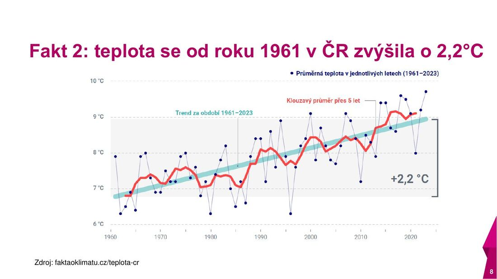
Slajd 8: průměrná roční teplota v ČR 1961–2023, pětiletý klouzavý průměr a lineární trend. Trend činí +2,2 °C od roku 1961. Odnést si: ČR se otepluje rychleji, než udává světový průměr; číslo 2,2 °C a rok 1961 patří do testu.
Fakt 2 (s. 8): teplota se od roku 1961 v ČR zvýšila o 2,2 °C.
Fakt 3 (s. 9): průzkum v ČR (STEM a Institut 2050, 2022, Česká (ne)transformace). Veřejnost je pozitivní k ochraně přírody a klimatu, ale silně se obává ekonomických a sociálních dopadů transformace. Transformace buď bude sociální, nebo nebude pro veřejnost přijatelná vůbec. Shoda panuje, že klimatická změna existuje a nelze nic nedělat. Povědomí o Zelené dohodě pro Evropu je nízké: k ní 1/3 nemá názor, 1/3 by ji zachovala nebo rozšířila, 1/3 by ji zrušila nebo oslabila.
Definice udržitelnosti
Pohled
Co udržitelnost znamená (s. 10)
Ekonomie
zachování dlouhodobé stability a prosperity ekonomického systému; prevence vyčerpání přírodních zdrojů a poškozování životního prostředí; udržitelný růst bez negativních důsledků pro budoucí generace
Bankovnictví
investování do projektů s pozitivním dopadem na životní prostředí a sociální odpovědností; podpora rozvoje a inovací respektující sociální a environmentální faktory; financování podniků přispívajících k udržitelnému rozvoji; vliv globálního oteplování na regulaci a řízení rizik
1. Jak souvisí emise skleníkových plynů a globální oteplování?
Otázka ze slajdu (s. 11): Jak souvisí emise skleníkových plynů a globální oteplování? Odpověď: spalování fosilních paliv uvolňuje CO2, hlavní antropogenní skleníkový plyn. Slunce ohřívá Zemi, ta vyzařuje teplo zpět jako infračervené záření a skleníkové plyny (GHG) část tohoto tepla zachycují a ohřívají atmosféru. Více GHG v atmosféře = více zadrženého tepla = vyšší oteplování klimatu (s. 13).
GHG = Greenhouse Gas, skleníkový plyn, např. CO2 (s. 12). Na slajdu 12 jsou uvedeny CO2, SF6, CH4, N2O, NF3, HFC, PFC.
Slajd 13 ukazuje spalování (2 C8H18 + 25 O2 → 16 CO2 + 18 H2O + energie): ze spalování paliva vzniká CO2.
Slajd 14: koncentrace CO2 se po většinu historie (804 000 let) pohybovala zhruba mezi 180–300 ppm, od poloviny 20. století prudce roste. Roční toky GHG: 57,7 GtCO2e (2024). Zásoba CO2 v atmosféře: 418,99 ppm (prosinec 2022), 421,86 (2023), 425,40 (2024), 427,49 ppm (prosinec 2025). Klíčové sdělení: problémem nejsou jen vysoké roční emise, ale i rostoucí zásoba CO2 v atmosféře.
Emise Scope 1, 2 a 3
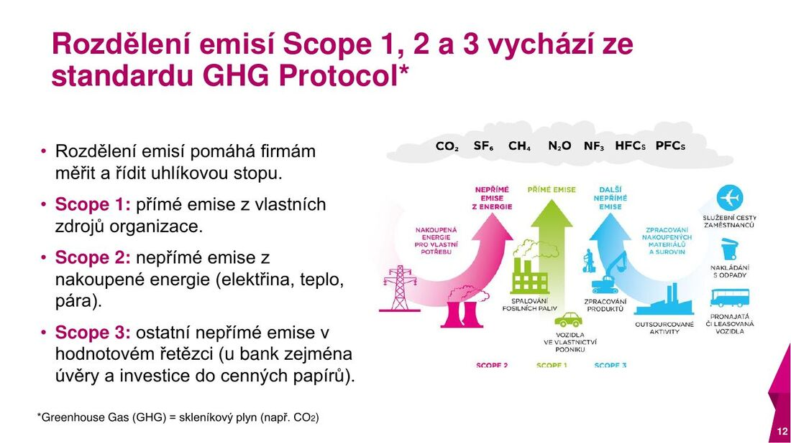
Slajd 12: rozdělení emisí podle standardu GHG Protocol. Uprostřed Scope 1 (spalování paliv, vlastní vozidla), vlevo Scope 2 (nakoupená energie), vpravo Scope 3 (nakoupené materiály, outsourcované aktivity, služební cesty, odpady, leasingová vozidla). Odnést si: čím dál od vlastního komínu, tím vyšší číslo.
Rozsah
Co zahrnuje (s. 12)
Příklad
Scope 1
přímé emise z vlastních zdrojů organizace
spalování fosilních paliv, vozidla ve vlastnictví podniku
Scope 2
nepřímé emise z nakoupené energie (elektřina, teplo, pára)
elektřina nakoupená pro vlastní potřebu
Scope 3
ostatní nepřímé emise v hodnotovém řetězci; u bank zejména úvěry a investice do cenných papírů
zpracování nakoupených materiálů, služební cesty, odpady, pronajatá vozidla
Rozdělení emisí pomáhá firmám měřit a řídit uhlíkovou stopu (s. 12).
⚠️ Pozor: Scope 2 jsou nepřímé emise z nakoupené energie, ne z vlastních kotlů (to je Scope 1). Scope 3 je „všechno ostatní“ a u banky tvoří většinu: její emise jsou hlavně emise financovaných klientů.
2. Co je cíl firmy?
Otázka ze slajdu (s. 18): Co je cíl firmy? Odpověď (s. 19): primárním cílem každého soukromého podniku je zisk, resp. výnos na kapitál (ROE), nebo nárůst tržní hodnoty podniku.
ROE = Return on Equity, zisk na kapitál (s. 19).
Dva základní problémy podniku: (1) co vyrábět, co vlastnit, do jakých aktiv investovat (potřeby podniku) a (2) z čeho tato aktiva financovat (jak opatřit finanční zdroje) (s. 19).
Rozhodování: potřebná výše kapitálu, struktura kapitálu a majetku, možnosti investování, fúze a akvizice (M&A). Optimalizace kapitálové struktury = poměr vlastního a cizího kapitálu (bankovní úvěry, závazky v ekonomicky spjaté skupině, dluhopisy) a s tím související finanční náklady (s. 19; Černohorský, Teplý, 2011).
3. Je ziskovost firmy tím jediným správným cílem?
Otázka ze slajdu (s. 20): Je ziskovost firmy tím jediným správným cílem? Odpověď (s. 21):ne vždy, existují dva přístupy. Shareholder value approach upřednostňuje zájmy akcionářů (hlavním cílem je maximalizace jejich bohatství, např. zisku, hodnoty akcií, ROE; Friedman, 1962). Stakeholder value approach vnímá roli podnikání jako generování hodnoty pro všechny zainteresované strany, s nimiž firma interaguje (Freeman a kol., 2010).
Shareholder value (akcionáři)
Stakeholder value (zainteresované strany)
Komu firma slouží
akcionářům
všem, s kým interaguje
Hlavní cíl
maximalizace bohatství akcionářů (zisk, cena akcií, ROE)
hodnota pro všechny stakeholdery
Autor na slajdu
Friedman (1962)
Freeman a kol. (2010)
Případová studie ČEZ (s. 22–23): ČEZ uvádí 13 skupin zainteresovaných stran: akcionáři a investoři, certifikační orgány, dodavatelé a smluvní partneři, média, místní samosprávy a komunity, neziskové organizace, odbory, pojišťovny a banky, profesní svazy, státní správa a regulátoři, vzdělávací a výzkumná střediska, zákazníci a zaměstnanci. K nim má tabulku dialogu (účel zapojení, témata, formy). Např. s pojišťovnami a bankami řeší financování, dluhopisy a úvěry vázané na udržitelnost či emisní cíle a ESG dotazníky.
Intuice: ESG dává smysl i ve firmě, která chce jen zisk. Jsou-li banky, investoři a zákazníci citliví na ESG, ovlivňuje ESG cenu kapitálu a tržby, tedy i zisk. Proto na slajdech 27, 30 a 31 stojí: dodržování ESG principů má vliv na náklady financování, na úročení úvěrů a na výnosnost dluhopisů.
Finanční výkazy podniku a ESG
Hlavní finanční výkazy (s. 24): A. rozvaha (zdroje a užití fondů) a podrozvaha, B. výkaz zisků a ztráty (způsob tvorby zisku či ztráty), C. kapitál (vlastní zdroje od akcionářů). Rozvaha je „snímek“ k danému dni (obvykle 31. 12.), ukazuje strukturu aktiv a pasiv včetně kapitálu.
$$A = Z + K = P$$
A = celková aktiva, P = celková pasiva, Z = závazky, K = A − Z = kapitál (s. 24).
A. Rozvaha banky a nefinanční společnosti
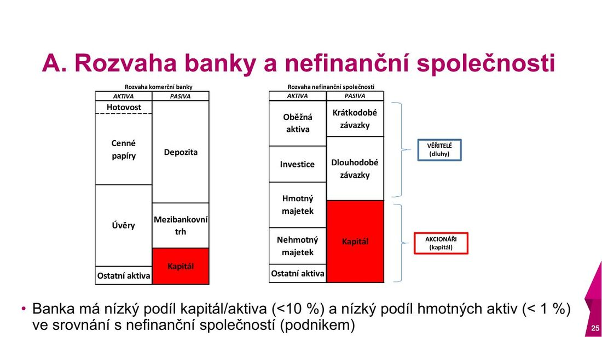
Slajd 25: vlevo banka (aktiva: hotovost, cenné papíry, úvěry, ostatní; pasiva: depozita, mezibankovní trh, kapitál). Vpravo nefinanční společnost (oběžná aktiva, investice, hmotný a nehmotný majetek; krátkodobé a dlouhodobé závazky, kapitál). Závazky jsou „věřitelé (dluhy)“, kapitál jsou „akcionáři“. Odnést si: banka má nízký kapitál (< 10 % aktiv) a téměř žádný hmotný majetek (< 1 %).
Banka má nízký podíl kapitál/aktiva (< 10 %) a nízký podíl hmotných aktiv (< 1 %) ve srovnání s nefinanční společností (s. 25).
Kapitál tvoří cca 30–50 % pasiv nefinanční společnosti, u banky pouze cca 5–10 % (s. 33).
Funkce kapitálu = nárazník proti ztrátám. Ztráty nese nejdřív akcionář (juniorní věřitel); banka je obvykle seniorní věřitel, její pohledávky se v bankrotu uspokojují před akcionářem (s. 33).
Zdroje financování podniku
Zlaté pravidlo financování: krátkodobý majetek krytý krátkodobými zdroji. V praxi se dlouhodobý majetek financuje i krátkodobě, což vede k riziku nedostatku likvidity (dlouhodobý majetek se mění na peníze déle, než jsou lhůty splácení). Opačný případ (oběžný majetek z dlouhodobých zdrojů) je neefektivní (s. 26).
Krátkodobé zdroje: krátkodobé závazky, bankovní úvěry, faktoring, ostatní pasiva, financování přeměnou majetku (s. 26).
Dlouhodobé zdroje (investiční majetek, s. 27): interní (samofinancování): odpisy, nerozdělený zisk, dlouhodobé rezervy; externí: emitované akcie, emitované dluhopisy, dlouhodobé úvěry, forfaiting, finanční leasing, investiční dotace. Dodržování ESG principů má vliv na náklady financování společnosti (s. 27).
V rozvaze: bankovní úvěr = krátkodobé či dlouhodobé závazky, ESG ovlivňuje úročení úvěrů (s. 30). Dluhopisy a akcie vydané = závazky resp. kapitál, ESG ovlivňuje výnosnost dluhopisů a očekávaný výnos akcionářů (s. 31).
Zelené úvěry a zelené dluhopisy
Nástroj
Definice podle slajdu 28
Zelený úvěr (green loan)
úvěr na financování projektů s pozitivním dopadem na životní prostředí (obnovitelné zdroje energie, energetická účinnost)
Úvěr na udržitelnost (sustainability-linked loan, SLL)
podmínky vázané na dosažení specifických udržitelných cílů nebo ESG kritérií dlužníka; úrok či jiné podmínky se mohou měnit podle ESG výkonnosti
Zelený dluhopis (green bond)
výnosy použité výhradně na nové či stávající projekty emitenta s pozitivním dopadem na životní prostředí
Dluhopis na udržitelnost (sustainability-linked bond, SLB)
finanční a/nebo strukturální podmínky vázané na dosažení předem stanovených udržitelných cílů či KPI emitenta
Intuice: u zelených nástrojů rozhoduje na co se peníze použijí. U nástrojů na udržitelnost (SLL, SLB) rozhoduje jaký výkon dlužník slíbí; použití peněz může být libovolné, ale cena se mění podle splnění cílů (doplněk, výklad podle ICMA Green Bond Principles 2025 a Sustainability-Linked Bond Principles 2024).
Greenium („green premium“) = cenová prémie nebo diskont, který se vztahuje k zeleným dluhopisům ve srovnání s běžnými, tzv. konvenčními dluhopisy od téhož emitenta se stejnou splatností a rizikovým profilem (s. 29, 98).
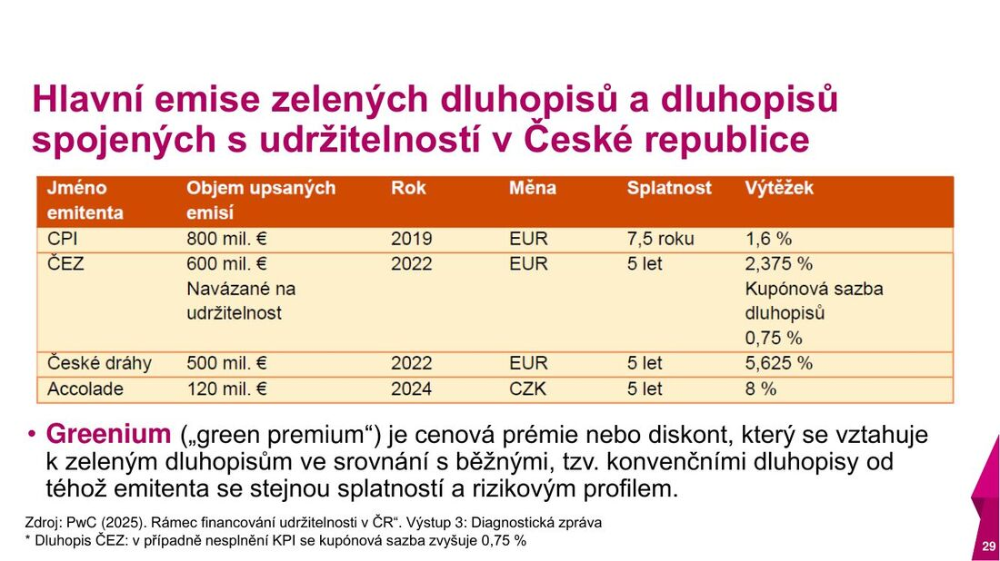
Slajd 29: hlavní emise v ČR (PwC, 2025): CPI 800 mil. EUR (2019, 7,5 roku, výtěžek 1,6 %), ČEZ 600 mil. EUR (2022, 5 let, navázané na udržitelnost, výtěžek 2,375 %), České dráhy 500 mil. EUR (2022, 5 let, 5,625 %), Accolade 120 mil. EUR (2024, měna CZK, 5 let, 8 %). Poznámka u ČEZ: při nesplnění KPI se kupónová sazba zvyšuje o 0,75 %. Odnést si: ČEZ je příklad SLB s step-upem.
Příklad (doplněk, vlastní modelové číslování): co přinese step-up a co greenium.
Step-up ČEZ. Nominál 600 mil. EUR, při nesplnění KPI kupón +0,75 p. b. (s. 29): $600\,000\,000 \times 0{,}0075 = 4\,500\,000$ EUR ročně navíc. Slajd neuvádí, zda se step-up týká všech let.
Greenium. Dva srovnatelné dluhopisy téhož emitenta (stejná splatnost i riziko): běžný 4,00 %, zelený 3,95 %. Rozdíl je 0,05 p. b. = 5 b. b. U 100 mil. Kč $100\,000\,000 \times 0{,}0005 = 50\,000$ Kč ročně úspory emitenta.
Ověřeno v python3. Podmínka „stejný emitent, splatnost, riziko“ je v definici nutná; jinak by rozdíl výnosů mohl pocházet z rizika či likvidity.
Rozvaha banky vs. firmy: kapitál jako nárazník
Příklad (vlastní modelové číslování k slajdům 24, 25, 33): stejná ztráta u banky a nefinanční firmy.
Aktiva obou 1 000. Banka: kapitál 8 % → $K = 0{,}08 \cdot 1000 = 80$, závazky $Z = A - K = 920$. Firma: kapitál 40 % → $K = 400$, $Z = 600$ (hodnoty v rozmezích ze s. 25 a 33).
Obě utrpí ztrátu 50 (5 % aktiv). Ztrátu nese nejdřív kapitál: banka $80 - 50 = 30$, firma $400 - 50 = 350$.
Banka přijde o $50/80 = 62{,}5\,\%$ kapitálu, firma jen o $50/400 = 12{,}5\,\%$. Čím nižší kapitál/aktiva, tím citlivější je instituce na ztráty.
Vývoj kapitálu podle slajdu 33: $K_t = K_{t-1} + ČZ - DIV$. Při $K_{t-1}=100$, $ČZ=30$, $DIV=10$ je $K_t = 120$. A čistý zisk podle s. 32: $ČZ = V - N - D$, např. $500 - 420 - 15 = 65$.
Výsledky ověřeny v python3. Čísla 8 % a 40 % jsou volená z intervalů na slajdech.
Výkaz zisku a ztráty a vazba na rozvahu
VZZ (P&L) ukazuje, jak vzniká čistý zisk před výplatou dividend a jak a proč roste či klesá kapitál: $ČZ = V - N - D$ (výnosy − náklady − daně) (s. 32).
Zisk z VZZ se promítá do kapitálu v rozvaze: $K_t = K_{t-1} + ČZ - DIV$ (s. 33, 34).
Integrovaný přístup a úloha finančních institucí
Integrovaný přístup k udržitelnému financování (s. 35, IUF): soustředné kruhy finanční trhy → ekonomika → společnost → životní prostředí. Finance jsou součástí ekonomiky, ta součástí společnosti a ta životního prostředí.
Úloha finančních institucí (s. 36): finanční instituce (zprostředkovatelé) provádějí transfer zdrojů od přebytkových jednotek k deficitním. Propojují domácnosti, firmy a stát; podléhají regulaci.
4. Co je pyramida strategického řízení v teorii firmy?
Otázka ze slajdu (s. 37): Co je pyramida strategického řízení v teorii firmy? Odpověď (s. 38, 98): pyramida má čtyři úrovně shora dolů: vize – mise – cíle – strategie.
Úroveň
Co to je (s. 39–40)
1. Vize
dlouhodobý pohled na to, čím chce organizace v budoucnosti být; ambiciózní, inspirující, „kompas“ pro budoucí rozhodování
2. Mise
stručné prohlášení o účelu a důvodu existence: co firma dělá, pro koho a jakým způsobem
3. Cíle
konkrétní měřitelné výsledky k naplnění mise a vize; mají být SMART a promítnuté do KPI zaměstnanců (např. zvýšení podílu na trhu, snížení uhlíkové stopy)
4. Strategie
plán či soubor kroků k dosažení mise a vize; zahrnuje cíle, taktiky a zdroje; má být flexibilní
⚠️ Pozor: pořadí je vize → mise → cíle → strategie. Strategie je nejnižší, „nejpraktičtější“ patro a vychází z cílů, ne naopak.
Případová studie ČEZ (s. 41–43)
Mise ČEZ: zajišťovat bezpečnou, spolehlivou a pozitivní energii zákazníkům i celé společnosti. Vize: přinášet inovace pro řešení energetických potřeb a přispívat k vyšší kvalitě života. Strategie: platná definovaná v roce 2019; v květnu 2021 akcelerovaná strategie VIZE 2030 – Čistá energie zítřka s cíli do 2030 zohledňujícími dekarbonizační vizi EU a s cílem maximalizovat hodnotu pro akcionáře (s. 41).
Cíle a Vize 2030 (s. 42): emise skleníkových plynů v souladu s Pařížskou dohodou („well below 2 °C“) z 0,38 t CO2e/MWh (2019) na 0,26 (2025) a 0,16 (2030); klimatická neutralita do 2040; cíl pro 2030 validován SBTi; do 2023 se dostat mezi 20 % nejlepších evropských utilit v ESG ratingu. Pokles k 2030 činí $1 - 0{,}16/0{,}38 \approx 58\,\%$ oproti 2019.
ESG v KPI managementu (s. 43): předseda představenstva má na rok 2025 šest individuálních úkolů s váhami (4× 20 %, 15 %, 5 %). Úkol „rozvíjet Skupinu ČEZ odpovědně a udržitelně v souladu s principy ESG“ má váhu 15 %; plnění celkem 103,5 %. ESG je tedy přímo součástí odměňování.
Pyramida strategického řízení EU a Zelená dohoda
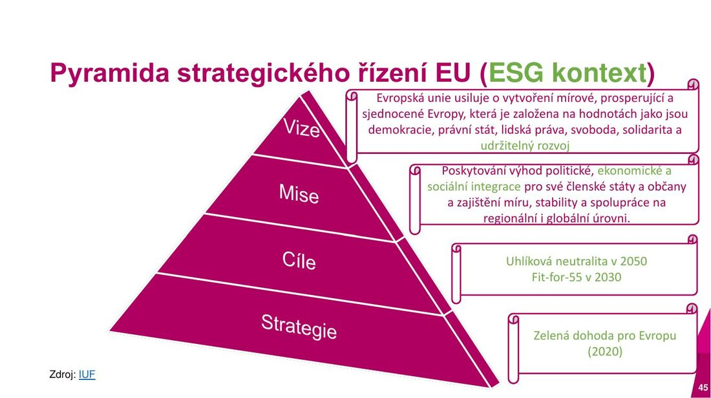
Slajd 45: pyramida EU v ESG kontextu. Vize: mírová, prosperující a sjednocená Evropa založená na hodnotách (demokracie, právní stát, lidská práva, svoboda, solidarita, udržitelný rozvoj). Mise: výhody integrace a zajištění míru a stability. Cíle: uhlíková neutralita 2050 a Fit-for-55 v 2030. Strategie: Zelená dohoda pro Evropu (2020). Bez ESG (s. 44) jsou cíle „mír a stabilita, rozvoj, soudržnost…“ a strategie Lisabonská smlouva (2009) + Zelená dohoda (2020).
Zelená dohoda pro Evropu (Green Deal, 2020): má zlepšit kvalitu života; Evropa klimaticky neutrální a chráněné přírodní prostředí, „nikdo nebude opomenut“ (s. 46). EU bude v roce 2050 klimaticky neutrální. Komise navrhne evropský zákon o klimatu, aby závazek získal právní závaznost a podnítil investice (s. 47). Klíčová otázka slajdu: jaké budou náklady této transformace?
Nástroje státu pro dekarbonizaci (s. 48, Fakta o klimatu): regulatorní (zákazy, omezení, výkonnostní normy, cíle a závazky), ekonomické (zpoplatnění emisí, podpora dekarbonizačních opatření), informační (státní strategie, reporting, označování zboží, osvěta) a investice do infrastruktury. Cílem je ideální mix nástrojů podle nákladové efektivity, realizovatelnosti a dopadu.
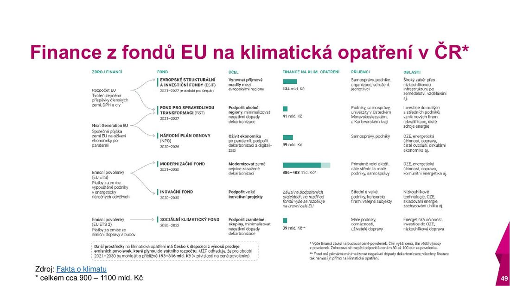
Slajd 49: finance z fondů EU na klimatická opatření v ČR (Fakta o klimatu). ESIF 134 mld. Kč, Fond pro spravedlivou transformaci 41, Národní plán obnovy 99, Modernizační fond 386–483, Sociální klimatický fond 39 mld. Kč; Inovační fond závisí na projektech. Celkem cca 900–1 100 mld. Kč (poznámka u slajdu). Odnést si: zdrojem jsou rozpočet EU, Next Generation EU a výnosy z povolenek EU ETS a ETS 2.
Kontrola součtu (python3): $134 + 41 + 99 + 386 + 39 = 699$ až $134 + 41 + 99 + 483 + 39 = 796$ mld. Kč; po přičtení příjmů státního rozpočtu z prodeje povolenek (193–316 mld. Kč za 2021–2030) vychází $892$ až $1\,112$ mld. Kč, tedy sedí na „cca 900–1 100“.
Kontext ESG politiky v EU a ČR: 10 kontextů
Slajd 50 řadí deset kontextů a vedle nich opět trilema udržitelnost × efektivita × ideologie. Každý kontext má samostatný slajd s grafem (s. 51–62):
#
Kontext
Hlavní sdělení a čísla (slajd)
1
Klimatický
zeměkoule se otepluje tempem cca 0,2 °C za desetiletí posledních 40 let (s. 51)
2
Regulatorní
EU jako globální lídr ESG regulací: kumulativní počet ESG regulací v Evropě kolem 400, růst (CAGR) Evropa 15 %, Čína 14 %, Japonsko 9 %, UK 9 %, USA 8 % (s. 52, McKinsey 2024)
3
Institucionální
komplexita legislativního procesu EU, ukázáno na revizi nařízení CLP (Classification, Labelling and Packaging): mapa o stovkách kroků mezi Komisí, Radou a Parlamentem (s. 53)
4
Technologický
EU zaostává v inovacích za USA a Čínou (index kritických technologií 2025: vesmír, AI, polovodiče, kvantové technologie, biotech) (s. 54)
5
Globální emisní
EU má jen 6 % globálních emisí CO2 (2023); Čína 32 %, USA 13 %, Indie 8 %, ostatní 39,8 % (s. 55–56)
6
Makroekonomický
nízká ekonomická výkonnost EU: mezera HDP EU–USA vzrostla z 17 % (2002) na 30 % (2023); růst 2002–2023: USA 2,0 %, Čína 8,3 %, EU-27 1,4 % (s. 57, Draghi)
7
Mikroekonomický
rostoucí mezní náklady na snižování emisí CO2: poslední procenta snížení (blízko 100 %) jsou nejdražší (s. 58)
8
Globální ekonomický
náklady dekarbonizace v různých zemích (IMF 2023); pro EU očekávaný celkový záporný efekt (s. 60)
9
Energetický
vysoké ceny plynu v EU: průmyslové ceny elektřiny v EU vyšší o 158 % a plynu o 345 % než v USA (2023) (s. 61, Draghi)
10
Politický
očekávané zvýšení cen (nejen) v ČR v důsledku ETS 2: ČNB ukazuje scénář s výraznějšími dopady ETS 2 oproti základnímu (s. 62)
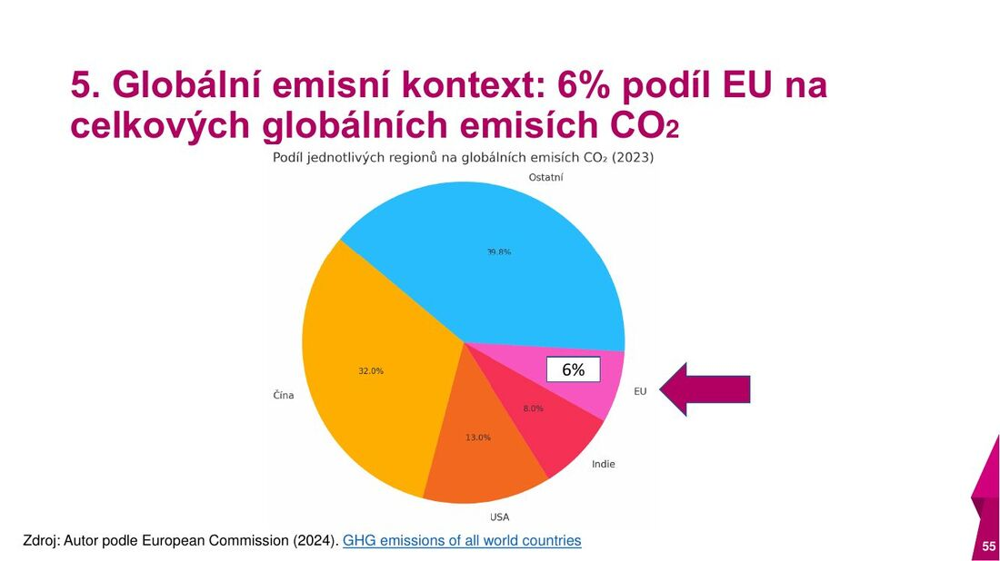
Slajd 55: podíl na globálních emisích CO2 v 2023: Čína 32,0 %, USA 13,0 %, Indie 8,0 %, EU 6 %, ostatní 39,8 %. Odnést si: argument „Evropa produkuje jen 6 %“ (s. 56, švédský král Carl XVI. Gustaf na COP30: „Europe produces only 6 %“) míří na vysoké náklady EU při malém podílu na emisích.
⚠️ Pozor: ETS 2 je nový systém obchodování s povolenkami navazující na ETS 1 a pokrývá i budovy, dopravu a malé podniky (s. 62). Proto dopadá na domácnosti a zvyšuje ceny i inflaci (cca o 0,4 až 0,5 p. b. ve scénáři ČNB, odečteno z grafu). 6 % v kontextu č. 5 je podíl EU na globálních emisích CO2, ne podíl na HDP.
5. Jaké jsou makroekonomické odhady dekarbonizace EU?
Otázka ze slajdu (s. 59): Jaké jsou makroekonomické odhady dekarbonizace EU? Odpověď (s. 60, IMF; Black a kol., 2023): podle IMF má dekarbonizace pro EU očekávaný celkový záporný (čistý) efekt: čisté náklady zmírňování emisí (v % HDP 2030) převyšují domácí environmentální přínosy (tzv. co-benefits). Stínová cena CO2 je u EU-27 na horním okraji osy (150 USD za tunu), tedy mezi nejvyššími na světě. K tomu slajd 98: vysoké náklady na dekarbonizaci v EU vs. udržitelný růst.
Na slajdu 60 je panel A (stínové ceny CO2 v USD/t) a panel B (náklady zmírňování a domácí environmentální přínosy v % HDP 2030, červeně čisté náklady, zeleně přínosy, bod = čistý efekt). U EU je červená část větší než zelená; u Číny a Indie převažují přínosy (hodnoty odečtené z grafu).
Souvisí s kontexty 6, 7, 9 (nízký růst, rostoucí mezní náklady, drahá energie) a s Draghiho zprávou níže.
Draghi report (2024), rok poté, Clean Industrial Deal a Omnibus
Draghi report (2024) = oficiálně Budoucnost evropské konkurenceschopnosti – Strategie konkurenceschopnosti pro Evropu, cca 400 stran, předložen Evropské komisi v září 2024 (s. 64). Hlavní body: (1) zvýšit produktivitu inovacemi a překonat mezeru vůči USA a Číně; (2) koordinovanější průmyslová politika a rychlejší rozhodování (včetně integrace kapitálového trhu EU); (3) masivní investice: 800 mld. EUR ročně. Navazující „Kompas konkurenceschopnosti“ EU byl zveřejněn v lednu 2025.
Rok poté (s. 65): 16. 9. 2025 Draghi řekl, že situace je horší než v 2024, růstový model slábne a chybí naléhavost; stále chybí cesta financování transformací (AI, energie, obrana); EU zaostává v AI a čipech (USA 40, Čína 15, EU jen 3 foundation modely); energie zůstávají příliš drahé; americká cla, deficit s Čínou +20 % od 12/2024. Výzva: „Evropa musí jednat jako jeden stát“, odbourat bariéry, sjednotit kapitálové trhy.
Clean Industrial Deal (CID, 2025) (s. 66): komplexní přístup k posílení konkurenceschopnosti průmyslu při podpoře přechodu k udržitelné ekonomice. Cíle: nižší náklady na energii díky 100 GW obnovitelných zdrojů ročně do 2030 a 32 % elektrifikace průmyslu; poptávka po čistých produktech (veřejné zakázky preferující zelené technologie vyráběné v EU); financování ze státní podpory, Inovačního fondu a nové Banky pro dekarbonizaci průmyslu; cirkulární ekonomika (24 % recyklovaných materiálů do 2030, centrum pro kritické suroviny); akční plán pro dostupnou energii, úspory až 260 mld. EUR ročně do 2040.
Omnibus (2025) (s. 67): souhrnný legislativní balíček, který výrazně omezuje rozsah směrnice CSRD (Corporate Sustainability Reporting Directive). Původně cca 50 000 firem, po Omnibusu cca 10 000 v EU (pětkrát méně, $10\,000/50\,000 = 20\,\%$). Tj. snížení ESG reportingu a administrativní zátěže.
Parametr CSRD (s. 67)
Před
Po Omnibusu
Počet zaměstnanců
250
1 000
Čistý obrat
40 mil. EUR
50 mil. EUR
Práh obratu pro firmy mimo EU
150 mil. EUR
450 mil. EUR
Dopady: menší a střední podniky nemusí podávat rozsáhlé ESG reporty; úleva zejména pro mimounijní společnosti s pobočkami či dceřinými firmami v EU; termíny se prodlužují (ostatní velké podniky EU až na rok 2027) (s. 67).
⚠️ Pozor: Omnibus je deregulace (zjednodušení), ne zpřísnění. Neruší CSRD úplně, zvyšuje prahy. Draghi report = konkurenceschopnost (800 mld. EUR ročně), Clean Industrial Deal = průmysl a energie (100 GW, 32 %), Omnibus = ESG reporting. Nezaměňovat s Green Deal 2020.
6. Jak se propisuje vize a strategie EU na ekonomické subjekty?
Otázka ze slajdu (s. 68): Jak se propisuje vize a strategie EU na ekonomické subjekty? Odpověď (s. 69, IUF): prostřednictvím regulace, kterou ovlivňují Zelená dohoda (z ní vychází směr) a Omnibus (zmírnění). Regulace dopadá na velké firmy, malé a střední firmy, finanční instituce, ale i na domácnosti, stát a investory; subjekty jsou navzájem provázané.
Schéma slajdu 69 má uprostřed finanční instituce, velké firmy a MSP, nahoře domácnosti, dole stát a investory, vpravo regulaci, která dostává vstup od Zelené dohody a od Omnibusu (s. 69).
Hospodářská strategie ČR a strategie v ČR
Hospodářská strategie ČR: Česko do TOP 10 (MPO, 2024, s. 70): hlavním cílem je dlouhodobě udržitelný růst založený na konkurenceschopnosti a vysoké přidané hodnotě; měřitelný cíl: elitní desítka zemí EU v HDP na osobu v paritě kupní síly. Čtyři oblasti: (1) lidský kapitál, produktivita a přidaná hodnota, (2) strategická infrastruktura (energetika, doprava, digitální; dekarbonizace a bezpečnost dodávek), (3) industrializace s přidanou hodnotou, (4) financování. Vazby na NKEP (Národní klimaticko-energetický plán), POK (Politika ochrany klimatu) a SEK (Státní energetická koncepce).
7. Kolik je evidováno v současnosti strategií na národní i regionální úrovni v ČR?
Otázka ze slajdu (s. 74): Kolik je evidováno strategií na národní i regionální úrovni v ČR? Odpověď (s. 75, Databáze strategií):1 909 aktuálních strategií: 61 na mezinárodní, 285 na národní, 288 na regionální, 199 na oblastní a 1 076 na místní úrovni (+ 1 258 v archivu). Pro „národní i regionální“ tedy 285 + 288 = 573 (python3 ověřeno: $61 + 285 + 288 + 199 + 1076 = 1909$).
⚠️ Pozor: text je na slajdu 75 drobný (snímek webu Databáze strategií). Čísla jsem přečetl z obrázku a součet 1 909 sedí. Kdyby test chtěl „celkový počet“, je to 1 909, ne 573.
Historie udržitelného rozvoje, ESG a udržitelných financí
Rok
Událost (slajd)
1960
poprvé pojem podnikové sociální odpovědnosti (CSR), Davis (1960) (s. 76, 77)
1972
Meze růstu, 1. zpráva Římského klubu: nekonečný růst není možný v prostředí limitovaných zdrojů (s. 72)
1980
první pokusy o redukci a regulaci negativních externalit v USA (EHS: Environmental, Health & Safety) (s. 76)
1987
Naše společná budoucnost OSN (Brundtlandova zpráva): poprvé definovala trvale udržitelný rozvoj jako rozvoj, který naplňuje současné potřeby, aniž by omezoval schopnost budoucích generací naplnit jejich potřeby (s. 72)
1990
hnutí podnikové udržitelnosti, často spíš marketing: greenwashing (s. 76)
1992
ČR: trvale udržitelný rozvoj definován zákonem č. 17/1992 Sb., o životním prostředí (§ 6); Agenda 21, UNCED v Riu de Janeiru (s. 72, 73)
2000
vzestup CSR → firemní filantropie (s. 76)
2002
konference OSN o udržitelném rozvoji v Johannesburgu: rovnováha tří pilířů, sociálního, ekonomického a environmentálního (s. 72)
2004
studie Who Cares Wins (Knoepfel), ESG faktory v kontextu finančních institucí (s. 76)
2006
Principles for Responsible Investment (PRI, OSN) (s. 77)
2007
emise Climate Awareness Bond (CAB) Evropské investiční banky (EIB) (s. 77)
2015
17 cílů udržitelného rozvoje (SDGs) (Addis Ababa Action Agenda) a Pařížská dohoda (s. 77)
Greenwashing = situace, kdy organizace prezentuje své produkty, služby nebo politiky jako environmentálně přívětivé nebo udržitelné, přestože ve skutečnosti nejsou (s. 76, 98).
Trvale udržitelný rozvoj podle zákona 17/1992 Sb. (§ 6): takový rozvoj, který současným i budoucím generacím zachovává možnost uspokojovat jejich základní životní potřeby a přitom nesnižuje rozmanitost přírody a zachovává přirozené funkce ekosystémů (s. 73). Agenda 21: udržitelný rozvoj je především rovnováha mezi ekonomikou, sociálními aspekty a životním prostředím (a mezi zeměmi, skupinami, dneškem a budoucností). Poradním orgánem vlády je Rada vlády pro udržitelný rozvoj.
Pařížská dohoda (2015): globální smlouva o změně klimatu přijatá 196 zeměmi, cíl omezit globální oteplování na méně než 2 °C nad předindustriální úrovní, snaha o 1,5 °C; státy se zavazují snižovat emise a podporovat adaptaci (s. 77).
8. Kolik a jaké jsou cíle udržitelného rozvoje podle OSN?
Otázka ze slajdu (s. 78): Kolik a jaké jsou cíle udržitelného rozvoje podle OSN? Odpověď (s. 79):17 cílů udržitelného rozvoje (SDGs), přijatých OSN v roce 2015 jako globální plán míru a prosperity pro lidi a planetu do roku 2030. Zahrnují mj. odstranění chudoby, kvalitní vzdělání, genderovou rovnost a boj proti změně klimatu; jsou univerzální a vyžadují spolupráci vlád, organizací, firem i jednotlivců.
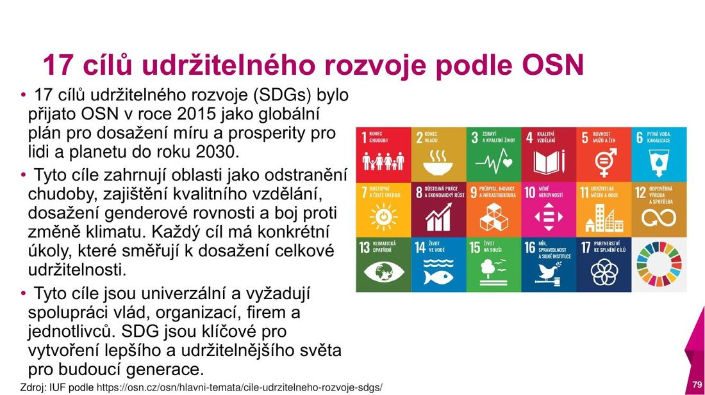
Slajd 79: 17 SDGs. 1 Konec chudoby, 2 Konec hladu, 3 Zdraví a kvalitní život, 4 Kvalitní vzdělání, 5 Rovnost mužů a žen, 6 Pitná voda a kanalizace, 7 Dostupné a čisté energie, 8 Důstojná práce a ekonomický růst, 9 Průmysl, inovace a infrastruktura, 10 Méně nerovností, 11 Udržitelná města a obce, 12 Odpovědná výroba a spotřeba, 13 Klimatická opatření, 14 Život ve vodě, 15 Život na souši, 16 Mír, spravedlnost a silné instituce, 17 Partnerství ke splnění cílů. Odnést si: počet 17, rok 2015, horizont 2030; podrobný seznam učit nemusíte, hlavně cíle 7, 8, 9, 12, 13.
Případová studie Moneta Money Bank
10 významných SDGs (s. 80): Moneta zvýraznila cíle 2, 5, 7, 8, 9, 10, 12, 13, 16 a 17 (odečteno z obrázku, kruh s 17 segmenty).
Dvojí významnost (s. 81–82): analýza dvojí významnosti je základem ESG reportingu. Pomáhá určit, která ESG témata jsou pro firmu skutečně významná, a posuzuje dva pohledy:
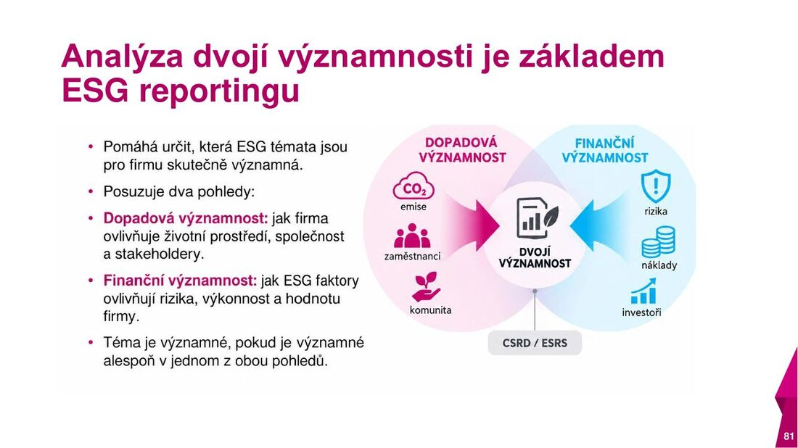
Slajd 81: dopadová významnost (jak firma ovlivňuje životní prostředí, společnost a stakeholdery: emise, zaměstnanci, komunita) a finanční významnost (jak ESG faktory ovlivňují rizika, výkonnost a hodnotu firmy: rizika, náklady, investoři). Uprostřed „dvojí významnost“, rámec CSRD / ESRS. Odnést si: téma je významné, pokud je významné alespoň v jednom z obou pohledů.
Slajd 82 ukazuje 5 významných témat Moneta: (1) změna klimatu (emise Scope 1, 2, 3), (2) biologická rozmanitost a ekosystémy (investice do pozemkových úprav, zemědělství), (3) vlastní pracovní síla (pracovní podmínky, rovné zacházení), (4) spotřebitelé a koneční uživatelé (informace, osobní bezpečnost, kybernetická bezpečnost), (5) obchodní chování (ochrana oznamovatelů, korupce, firemní kultura).
Moneta KPI (s. 83, Zpráva o udržitelnosti 2025): index MSCI ESG rating AA (2023–2025), CDP rating B, snížení emisí Scope 1 a 2 90,7 % (2025; cíl 2026 90 %, 2030 95 %), podíl elektromobilů ve firemní flotile 95 % (cíl 100 %), obnovitelná energie 68,8 % (cíl 80 %), podíl žen v managementu 42 % (cíl 2030 50 %). Poznámka u slajdu: podíl Scope 3 emisí ~ 99 %, tj. Scope 1+2 ~ 1 %.
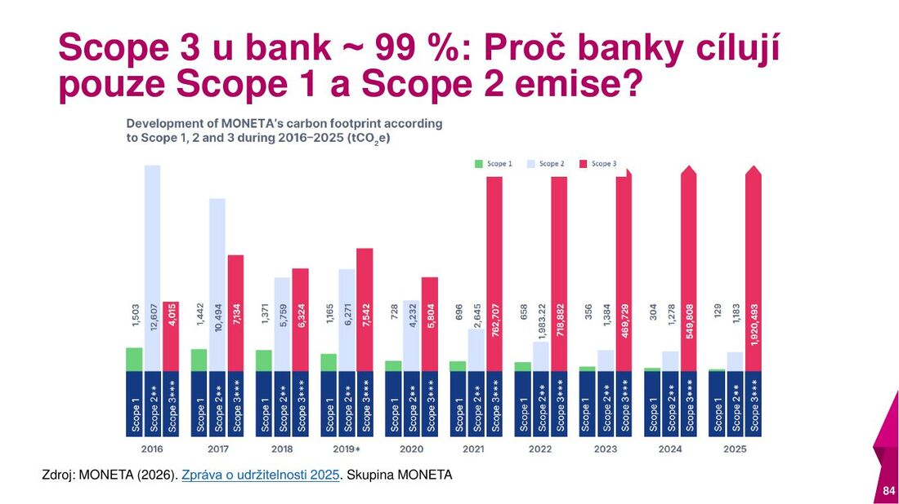
Slajd 84: uhlíková stopa Moneta 2016–2025 v tCO2e. Scope 1 klesl z 1 503 (2016) na 129 (2025), Scope 2 z 12 607 na 1 183, kdežto Scope 3 vykazuje velké hodnoty od 2021 (762 707) po 1 920 493 (2025). Odnést si: provozní emise banky (Scope 1+2) jsou malé a klesají, ale hlavní emise leží ve financovaných portfoliích (Scope 3).
Otázka ze slajdu (s. 84): Scope 3 u bank ~ 99 %: proč banky cílují pouze Scope 1 a Scope 2 emise?Odpověď: protože Scope 3 u banky tvoří ~ 99 % emisí (úvěry a investice do cenných papírů = emise klientů), ale banka je přímo neřídí a nemá k nim spolehlivá data; cíle snižování si proto klade hlavně u Scope 1 a 2, které sama ovlivňuje. (Slajd klade otázku; jádro, tedy ~ 99 % Scope 3, je na slajdu. Vysvětlení „proč“ je interpretace, doplněk.)
Příklad: kolik procent emisí Moneta tvoří Scope 3 a o kolik klesly Scope 1+2 (python3, data ze s. 84).
Celkem = 1 312 + 1 920 493 = 1 921 805. Podíl Scope 3 = $1\,920\,493 / 1\,921\,805 = 99{,}93\,\%$. Scope 1+2 jsou tedy jen ~ 0,07 %, na slajdu zaokrouhleno „~ 99 % / ~ 1 %“.
Pokles Scope 1+2 oproti 2016: 2016 = 1 503 + 12 607 = 14 110. $1 - 1\,312/14\,110 = 90{,}7\,\%$, což přesně odpovídá KPI „snížení Scope 1 a 2“ ve slajdu 83 (2023: 87,7 %, 2024: 88,8 %, 2025: 90,7 %).
Výsledky sedí se slajdem 83 pro 2023–2025. Sloupec „base year 2021“ (70 %) odpovídá jinému výchozímu základu než 2016 (z grafu vychází 76,3 %); slajd to nevysvětluje.
⚠️ Pozor: „Scope 3 u banky ~ 99 %“ neznamená, že Scope 3 byl vždy 99 %. V roce 2016 byl Scope 3 podle grafu jen 22 % (4 015 z 18 125), skokově vzrostl až v roce 2021 s rozsahem měření (důvod slajd neuvádí). Pro test platí ~ 99 % u současné Moneta a bank obecně.
9. Jsou banky v ČR „zelené“? (měřeno GAR KPI Turnover)
Otázka ze slajdu (s. 85): Jsou banky v ČR „zelené“ [měřeno GAR KPI Turnover]? Odpověď (s. 86, EY, 2026):ne, podíl výnosů ze zelených aktivit je u bank v ČR < 2 % (nejvyšší Česká spořitelna 1,61 %, UniCredit Bank 1,53 %).
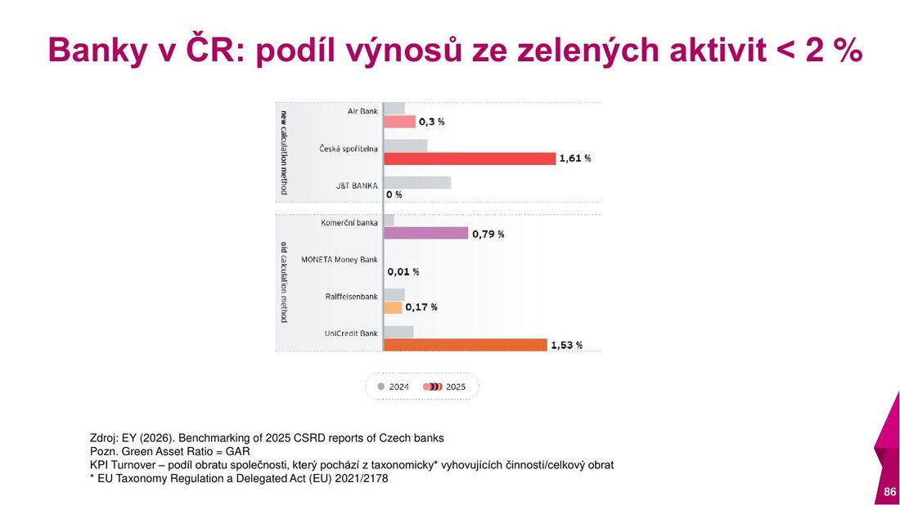
Slajd 86: Green Asset Ratio, KPI Turnover 2025: Air Bank 0,3 %, Česká spořitelna 1,61 %, J&T Banka 0 %, Komerční banka 0,79 %, MONETA Money Bank 0,01 %, Raiffeisenbank 0,17 %, UniCredit Bank 1,53 %. Odnést si: žádná banka nepřekročila 2 %. Skupiny „new calculation method“ a „old calculation method“ označují odlišné metody výpočtu.
GAR KPI Turnover = podíl obratu společnosti, který pochází z taxonomicky vyhovujících činností / celkový obrat (taxonomie EU: Nařízení o taxonomii a delegovaný akt (EU) 2021/2178) (s. 86). GAR = Green Asset Ratio.
Historie ESG iniciativ v bankovnictví (s. 87)
Net Zero Banking Alliance (NZBA): banky se zavazují k nulovým čistým emisím do 2050 a ke sladění úvěrových a investičních portfolií s Pařížskou dohodou (členy např. Erste, Société Générale, UniCredit). Velké americké banky alianci opustily a ta byla zrušena v říjnu 2025. (Slajd uvádí u NZBA rok 2015.)
Science Based Targets (SBTi), 2021: cíle snižování emisí, které si firmy stanovují v souladu s Pařížskou dohodou.
PCAF (Partnership for Carbon Accounting Financials), 2021: harmonizace metodik účetnictví emisí skleníkových plynů ve finančním sektoru.
Současné ESG trendy
Trendy 1/2 (s. 89)
Trendy 2/2 (s. 90)
1) USA: očekává se ESG (de)regulace
6) tranzitní (přechodové) plány firem
2) EU: pokračování a rozšiřování ESG regulací (částečná deregulace v Omnibusu)
7) význam umělé inteligence (AI) a její propojení s ESG
3) povinný ESG reporting (CSRD v EU)
8) rostoucí propojení antimonopolní, obchodní a ESG politiky
4) hodnotové řetězce: near-shoring a reshoring kvůli geopolitickým rizikům a reportingu
9) zvýšený dohled nad greenwashingem
5) nárůst významu „tradičních“ environmentálních témat
10) biodiverzita a přírodní kapitál
Zdroj trendů: Kirkpatrick a Yook (2025), Harvard Law School Forum. Rozdíl USA × EU: v USA se očekává deregulace, v EU pokračuje regulace (s mírnou deregulací v Omnibusu). Slajd 98 shrnuje: aktuální ústup od prosazování ESG témat mimo Evropu.
Objemy ESG dluhopisů a úvěrů v Evropě (AFME, 2026)
Objem ESG dluhopisů a zelených úvěrů (s. 91): nové ESG dluhopisy a zelené úvěry celkem cca 680 mld. EUR, pokles o ~ 2 % oproti předchozímu roku (slajd uvádí rok chybně dvakrát jako 2024; podle sloupcového grafu jde o rok 2025). Čtvrtletně 2025: 203 + 218 + 132 + 127 = 680; 2024: 232 + 173 + 140 + 150 = 695 mld. EUR; $680/695 - 1 = -2{,}2\,\%$ (python3).
Největší emitenti v 2025 (s. 92): Francie (143 mld. EUR), Německo (103), Velká Británie (76), dále Itálie 59, Španělsko 44, Nizozemsko 38, EU 33, Švédsko 31, Norsko 21, Turecko 21.
Objem zelených dluhopisů v Evropě (s. 93): v roce 2025 emitováno cca 291 mld. EUR (2019: 105, 2020: 132, 2021: 244, 2022: 263, 2023: 277, 2024: 300, 2025: 291).
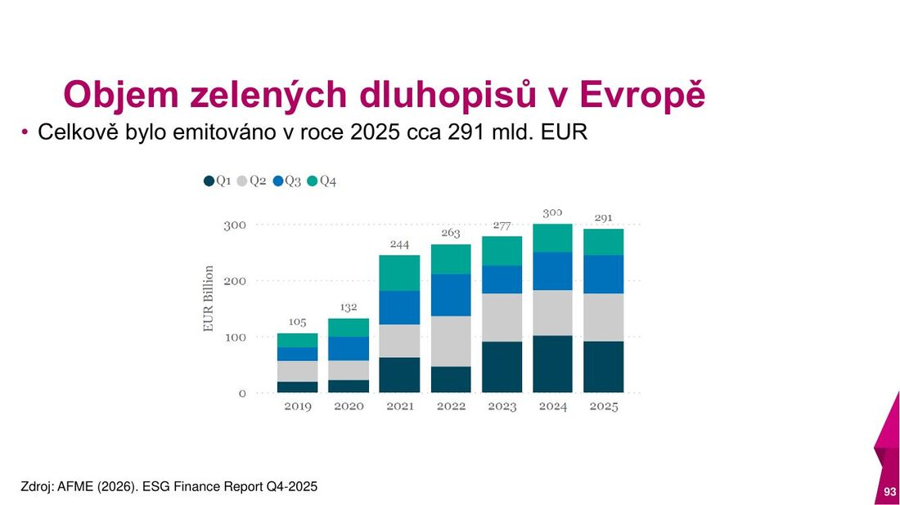
Slajd 93: roční emise zelených dluhopisů v Evropě (mld. EUR, AFME 2026): 105 (2019), 132, 244, 263, 277, 300 (2024) a 291 (2025). Odnést si: po prudkém růstu 2020–2021 objemy stagnují; v 2025 mírný pokles z maxima 300.
10. Jaký byl podíl zelených dluhopisů na celkové emisi dluhopisů v Evropě v 2025?
Otázka ze slajdu (s. 94): Jaký byl podíl zelených dluhopisů na celkové emisi dluhopisů v Evropě v 2025? Odpověď (s. 95, 98):8,7 % (cca 9 %). Podíl všech ESG dluhopisů činil 11,3 % z celkové emise dluhopisů v Evropě v roce 2025 (nižší než 12,6 % v předchozím roce), z toho zelené 8,7 % a sociální 1,4 %.
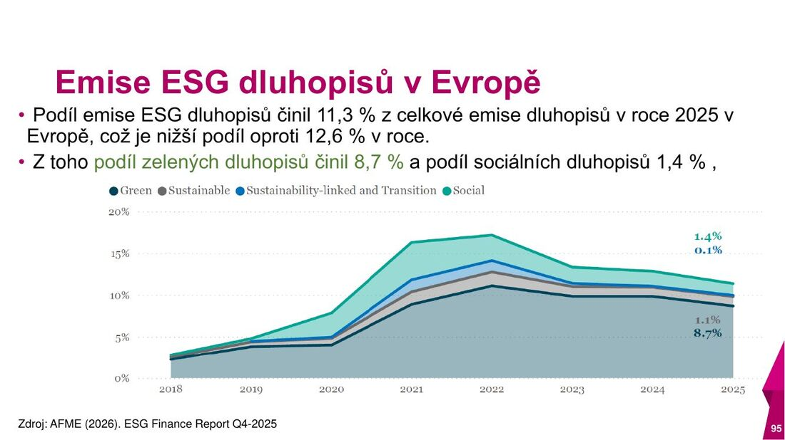
Slajd 95: podíl ESG dluhopisů na celkové emisi dluhopisů v Evropě. V roce 2025 zelené 8,7 %, sustainable 1,1 %, sustainability-linked a transition 0,1 %, sociální 1,4 %; součet $8{,}7 + 1{,}1 + 0{,}1 + 1{,}4 = 11{,}4\,\%$, na slajdu v textu 11,3 % (zaokrouhlení). Podíl vrcholil v letech 2021–2022 (nad 15 %) a od té doby klesá.
Zelené úvěry v Evropě (s. 96): objem úvěrů navázaných na udržitelnost a zelených úvěrů činil 17,0 % z celkových poskytnutých syndikovaných úvěrů v Evropě; mírný pokles oproti předchozímu roku (slajd uvádí rok chybně opět jako 2024, graf končí 2025). Vrchol ~ 25 % byl v 2021.
⚠️ Pozor: neplést tři procenta: 8,7 % = zelené dluhopisy / všechny dluhopisy v Evropě; 11,3 % = všechny ESG dluhopisy / všechny dluhopisy; 17,0 % = zelené a udržitelnostní úvěry / syndikované úvěry. A 291 mld. EUR je objem zelených dluhopisů, 680 mld. EUR je ESG dluhopisy + zelené úvěry dohromady. Odvozeno: $291/0{,}087 \approx 3\,345$ mld. EUR celková emise dluhopisů v Evropě (orientačně, zaokrouhlená čísla).
Doplňky k pojmům ze slajdů
doplněk (neřečeno na slajdech, jen pro srozumitelnost pojmů).
Pojem
Doplňující vysvětlení
E / S / G
E: klima, energie, voda, znečištění, odpady a ekosystémy; S: pracovní podmínky, lidská práva, zákazníci, komunity; G: řízení a kontrola firmy, odpovědnost vedení, odměňování, etika (doplněk, rešerše: FMV VŠE, Udržitelnost v korporacích)
Zelený, sociální, sustainability dluhopis
zelený = projekty s environmentálním přínosem; sociální = projekty řešící sociální problém (dostupné bydlení, zdravotní péče); sustainability bond = kombinace zelených a sociálních projektů. Pozor na rozdíl od sustainability-linked bond, který váže podmínky na výkon emitenta (doplněk, ICMA Green Bond Principles 2025, Social Bond Principles 2025, Sustainability Bond Guidelines 2021)
KPI, SPT, step-up u SLB
KPI je měřený ukazatel (např. emise), SPT cílová hodnota KPI k datu, step-up smluvené zvýšení kupónu při nesplnění; ČEZ na slajdu 29 má kupón +0,75 % (doplněk, ICMA SLBP 2024)
Materialita
dopadová = dopady firmy na lidi a prostředí; finanční = vliv ESG na peněžní toky, rizika a cenu kapitálu; dvojí = obě perspektivy dohromady, nikoli jejich průnik (doplněk, IFRS Conceptual foundations, EFRAG IG 1, 2024)
Shrnutí (Závěr & co si odnést, s. 98):
1. ESG = soubor kritérií hodnocení výkonnosti společnosti, který hodnotí robustnost mechanismů správy a řízení společnosti a její schopnost efektivně řídit její environmentální a sociální dopady.
2. Pyramida strategického řízení firmy: vize – mise – cíle – strategie (SMART cíle, KPI; příklad ČEZ).
3. Cíl Zelené dohody pro Evropu (2020): EU bude v roce 2050 klimaticky neutrální (Fit-for-55 v 2030).
4. Vysoké náklady na dekarbonizaci v EU vs. udržitelný růst: EU má 6 % globálních emisí CO2, mezeru HDP vůči USA 30 %, drahou energii; IMF očekává pro EU záporný čistý efekt; Draghi: 800 mld. EUR ročně; Omnibus snižuje CSRD z cca 50 000 na 10 000 firem.
5. Greenwashing = organizace prezentuje své produkty, služby nebo politiky jako environmentálně přívětivé nebo udržitelné, přestože ve skutečnosti nejsou.
6. Greenium = cenová prémie nebo diskont, který se vztahuje ke zeleným dluhopisům ve srovnání s běžnými, tzv. konvenčními dluhopisy od téhož emitenta se stejnou splatností a rizikovým profilem.
7. OSN v roce 2015 přijalo 17 cílů udržitelného rozvoje (SDGs) do roku 2030.
8. Podíl zelených dluhopisů na celkové emisi dluhopisů v Evropě: cca 9 % (8,7 % v 2025; objem cca 291 mld. EUR).
9. Aktuální ústup od prosazování ESG témat mimo Evropu (USA: očekávaná deregulace; NZBA zrušena v říjnu 2025).
Další čísla k zapamatování: teplota v ČR +2,2 °C od 1961; Scope 1 (přímé), 2 (nakoupená energie), 3 (ostatní v řetězci); u bank Scope 3 ~ 99 %; zelené aktivity bank v ČR < 2 % výnosů; dvojí významnost = dopadová + finanční.
Zdroje: prezentace Udržitelné finance a ESG (Teplý, 14. 10. 2026, podklady/1BP440/1BP440 P04-2026 Udržitelnost a ESG.pdf), na ní citované Fakta o klimatu, STEM a Institut 2050 (2022), ČEZ, EY (2026), AFME (2026), MONETA (2026), Draghi (2024). Doplněk: ICMA Green Bond Principles (2025), Social Bond Principles (2025), Sustainability-Linked Bond Principles (2024), ECB (2020) k greeniu, FMV VŠE o ESG, IFRS a EFRAG o materialitě; modelové příklady jsou vlastní.
4. Přehled klíčových ESG regulací bank
Přednáška 21. 10. 2026 · hosté EY (R. Laštovička, J. Líkař) · zdroj: Přehled klíčových ESG regulací bank (1BP440_P05A-2026 ESG regulace bank (EY).pdf) a Benchmarking of 2024 CSRD reports of Czech banks (EY CSRD Nefinanční reporty bank 2025.pdf); čísla slajdů v závorkách; co ve slajdech není, je označeno doplněk
Značení: (s. 23) = slajd přednášky; (CSRD benchmark, s. 5) = slajd benchmarku. Slajd benchmarku je dvoustrana původního dokumentu (např. s. 3 = strany 4–5).
Úvod do problematiky
Udržitelnost: schopnost uspokojovat současné potřeby bez ohrožení schopnosti uspokojovat potřeby budoucí (s. 5). ESG označuje tři oblasti, ve kterých o udržitelnosti mluvíme: E environmentální, S sociální a G governance (řízení a správa společnosti) (s. 5).
Nejvýznamnější iniciativy
Na mezinárodní úrovni mají počátky v 70. letech. Dnes jde hlavně o Agendu OSN pro udržitelný rozvoj 2030 a cíle udržitelného rozvoje (2015) a Pařížskou dohodu (2015) (s. 6, 12).
Na úrovni EU (s. 6, 12):
Zelená dohoda pro Evropu (2019 až 2050),
Akční plán Komise: financování udržitelného růstu (2018),
Strategie financování udržitelného růstu a přechodu na klimaticky neutrální ekonomiku (2021).
Mezi priority Komise 2024–2029 patří i zlepšení konkurenceschopnosti. To znamená snižovat regulatorní zátěž a zjednodušovat a omezovat rozsah regulace udržitelnosti, tzv. Omnibus návrhy (s. 6).
Poznámky k evropskému právu
Nástroj
Jak působí
Nařízení
je přímo použitelné (s. 7)
Směrnice
je nutné ji transponovat, tedy převést do vnitrostátního předpisu (s. 7)
Prováděcí předpisy
přijímají se ve formě nařízení (s. 7)
Obecné pokyny (guidelines)
orgán dohledu (v ČR typicky ČNB) musí říct, zda se jimi hodlá nebo nehodlá řídit, resp. v jakém rozsahu: princip „comply or explain“ (s. 7)
⚠️ Pozor: CRR je nařízení (platí přímo), CRD, CSRD a směrnice 2024/825 jsou směrnice (potřebují český zákon). Příklady ze slajdů: CRD je transponována hlavně do zákona č. 21/1992 Sb. o bankách (s. 30), CSRD hlavně do zákona č. 563/1991 Sb. o účetnictví (s. 25). Obecné pokyny EBA nejsou právně závazné, ale vyžadují vyjádření „comply or explain“.
Bankovní kontext: rizika a ESG
Čtyři „tradiční“ rizika banky (s. 8):
úvěrové riziko: ztráta ze selhání smluvní strany, která nedostojí svým závazkům,
tržní riziko: ztráty z pohybů tržních faktorů (úrokové míry, směnné kurzy, ceny akcií či komodit),
operační riziko: ztráta z nedostatků či selhání vnitřních procesů, osob a systémů nebo z vnějších událostí,
riziko likvidity: banka nedostojí závazkům, až budou splatné, nebo nemůže financovat svá aktiva.
ESG rizika: riziko jakéhokoli negativního finančního dopadu na instituci ze stávajícího nebo potenciálního dopadu faktorů ESG na protistrany instituce nebo investovaná aktiva (s. 9). Environmentální riziko se dělí na fyzické (dopad fyzických účinků environmentálních faktorů) a tranziční (dopad přechodu k environmentálně udržitelnému hospodářství) (s. 9).
Intuice: ESG riziko není nový, samostatný druh rizika vedle čtyř tradičních. Realizuje se prostřednictvím tradičních rizik (s. 10). Povodeň (fyzické riziko) poškodí zastavenou nemovitost, a banka tak utrpí úvěrovou ztrátu.
Koncept dvojí materiality
Finanční materialita: ESG rizika dopadající na podnik (z okolí do firmy) (s. 11).
Materialita dopadu (impact materiality): dopady činnosti společnosti na společnost, ekonomiku a životní prostředí (z firmy do okolí) (s. 11).
⚠️ Pozor: „dvojí“ neznamená dvě úrovně významnosti, ale dva směry: dopad ESG na podnik a dopad podniku na svět. Téma je významné, pokud je významné aspoň z jedné perspektivy. Podle CSRD se významná témata určují právě posouzením dvojí významnosti, double materiality assessment (DMA) (s. 27). Pokyny EBA k ESG rizikům (viz soft law) mají vlastní pohled na materialitu rizik; to je zdroj inkonzistencí, o kterých mluví slajd 28.
Přehled klíčových ESG regulací bank
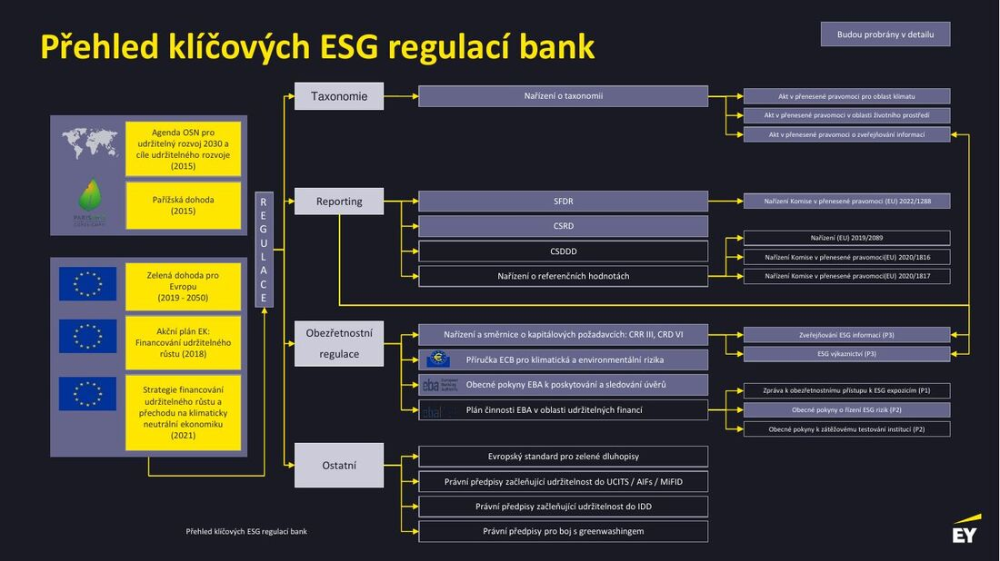
Slajd 12: mapa regulací. Vlevo mezinárodní a unijní iniciativy, uprostřed čtyři skupiny: taxonomie, reporting, obezřetnostní regulace, ostatní. Vpravo prováděcí akty. Podrobně se probírají první tři skupiny a greenwashing.
Skupina
Co do ní patří (s. 12)
Taxonomie
Nařízení o taxonomii a akty v přenesené pravomoci (klima, životní prostředí, zveřejňování informací)
Reporting
SFDR (s nařízením Komise 2022/1288), CSRD, CSDDD, nařízení o referenčních hodnotách (benchmarks)
Obezřetnostní regulace
CRR III a CRD VI (zveřejňování ESG informací a ESG výkaznictví, obojí P3), příručka ECB ke klimatickým a environmentálním rizikům, obecné pokyny EBA k poskytování a sledování úvěrů, plán činnosti EBA v oblasti udržitelných financí (zpráva k obezřetnostnímu přístupu k ESG expozicím – P1, obecné pokyny k řízení ESG rizik – P2, obecné pokyny k zátěžovému testování – P2)
Ostatní
Evropský standard pro zelené dluhopisy; předpisy začleňující udržitelnost do UCITS / AIFs / MiFID a do IDD; předpisy proti greenwashingu
Zkratky P1, P2, P3 značí pilíře obezřetnostní regulace (viz níže). Doplněk zkratek: UCITS = harmonizované podílové fondy, AIF = alternativní investiční fondy, MiFID = směrnice o trzích s finančními nástroji, IDD = směrnice o distribuci pojištění.
EU taxonomie
EU taxonomie: celounijní klasifikační systém, který stanoví seznam environmentálně udržitelných hospodářských činností (s. 14). Pravidla jsou v nařízení (EU) 2020/852 o taxonomii a v delegovaných aktech k němu (s. 14).
Cíle (s. 14): pomoci s orientací investorům, společnostem, emitentům a dalším stakeholderům; pomoci plánovat a sledovat přechod k hospodářství v souladu s cíli EU v oblasti životního prostředí; nasměrovat kapitál do činností, které významně přispívají k cílům Zelené dohody.
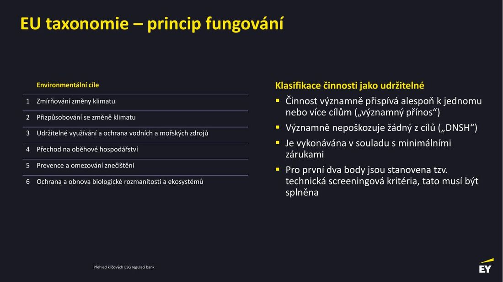
Slajd 16: šest cílů a tři podmínky. Činnost je udržitelná, jen když splní všechny tři podmínky. Technická screeningová kritéria jsou stanovena pro první dva body, tedy pro významný přínos a DNSH.
Princip fungování
Šest environmentálních cílů (s. 15): (1) zmírňování změny klimatu, (2) přizpůsobování se změně klimatu, (3) udržitelné využívání a ochrana vodních a mořských zdrojů, (4) přechod na oběhové hospodářství, (5) prevence a omezování znečištění, (6) ochrana a obnova biologické rozmanitosti a ekosystémů.
Činnost se klasifikuje jako udržitelná, pokud (s. 16):
významně přispívá alespoň k jednomu cíli („významný přínos“),
významně nepoškozuje žádný z cílů (DNSH, „do no significant harm“),
je vykonávána v souladu s minimálními zárukami,
a splňuje technická screeningová kritéria, která jsou stanovena pro první dva body (s. 16).
Kde jsou kritéria (s. 17): k cílům 1 a 2 klimatický delegovaný akt, nařízení v přenesené pravomoci (EU) 2021/2139; k cílům 3 až 6 environmentální delegovaný akt, nařízení (EU) 2023/2486. Komise nabízí pomocné stránky, např. EU Taxonomy Compass.
Minimální záruky = soulad s Pokyny OECD pro nadnárodní společnosti, s Obecnými zásadami OSN v oblasti podnikání a lidských práv (včetně osmi základních úmluv Mezinárodní organizace práce) a s Mezinárodní listinou lidských práv (s. 18). V praxi se posuzují kontrolou vnitřního nastavení a monitoringem skandálů (s. 18).
⚠️ Pozor: technická kritéria existují jen pro významný přínos a DNSH (s. 16), minimální záruky se posuzují jinak (vnitřní nastavení, skandály). Klimatický delegovaný akt (2021/2139) řeší cíle 1 a 2, environmentální (2023/2486) cíle 3 až 6; nezaměnit.
Jak se taxonomie dotýká bank
Hlavní motivací je povinnost reportingu navázaná na taxonomii (s. 19).
Dotčené banky musí posoudit soulad s taxonomií u klientů, které financují (s. 19).
Reportují řadu ukazatelů; nejdůležitější je Green Asset Ratio (GAR), poměr udržitelných („zelených“) aktiv banky k celkovým zahrnutým aktivům (s. 19).
Praktické výzvy pro banky (s. 20)
Taxonomie měla původně označit mimořádně udržitelné aktivity, dnes se používá jako jediné měřítko udržitelnosti; GAR jsou jednotky procent aktiv banky.
Minimum klientů zveřejňuje potřebná data. Odtud změna definice GAR.
Řada klientů se udržitelností odmítá zabývat a banka riskuje jejich ztrátu, pokud informace vyžaduje. Odtud nová role VSME (dobrovolný standard pro malé a střední podniky, s. 27).
Sdílení dat a hodnocení mezi více bankami financujícími téhož klienta.
Některá kritéria jdou v některých zemích zatím nevyhodnotit (např. stavba patří mezi 15 % energeticky nejúčinnějších v zemi, nebo odkaz na místní předpis, který ještě neexistuje).
IT řešení pro vyhodnocení, vyškolení zaměstnanci, řídicí a kontrolní činnost.
Příklad (vlastní přepočet z benchmarku): proč je GAR tak malý. GAR se počítá z zahrnutých aktiv (s. 19), ne z celé bilance. Česká spořitelna: do GAR KPI (obrat, Turnover) je zahrnuto 58,41 % celkových aktiv (CSRD benchmark, s. 9), GAR KPI Turnover je 0,41 % (CSRD benchmark, s. 7).
Podíl taxonomicky udržitelných aktiv na celkových aktivech ≈ $0{,}41\,\% \cdot 58{,}41\,\% \approx 0{,}24\,\%$ (přepočteno v python3: 0,2395 %).
Závěr: i kdyby banka vykázala 0,41 %, na celou bilanci to dělá necelou čtvrtinu procenta. Slajdy tento přepočet neuvádějí; předpokládá, že GAR KPI je podíl na zahrnutých aktivech podle s. 19.
ESG v oblasti reportingu: SFDR
SFDR = Sustainable Finance Disclosure Regulation, rámec pro zveřejňování informací o udržitelnosti v oblasti investic (s. 22). Cíl: snížit informační asymetrii na finančních trzích a pomoci investorům činit informovaná rozhodnutí (s. 22). Pravidla: nařízení (EU) 2019/2088 a delegované akty (s. 22).
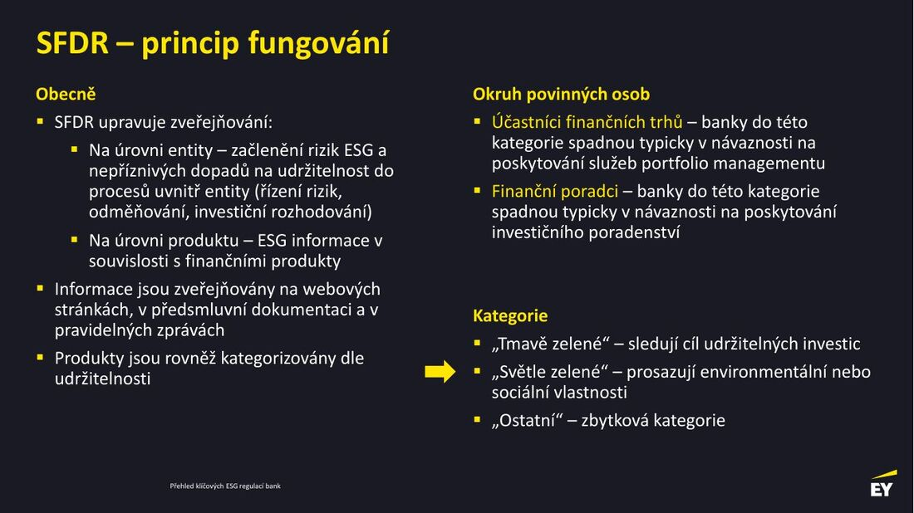
Slajd 23: SFDR zveřejňuje informace na úrovni entity i produktu, dopadá na účastníky finančních trhů a finanční poradce a dělí produkty na „tmavě zelené“, „světle zelené“ a ostatní.
SFDR: princip fungování (s. 23)
Úroveň entity: začlenění rizik ESG a nepříznivých dopadů na udržitelnost do vnitřních procesů (řízení rizik, odměňování, investiční rozhodování).
Úroveň produktu: ESG informace k finančním produktům.
Zveřejňuje se na webu, v předsmluvní dokumentaci a v pravidelných zprávách.
Povinné osoby:účastníci finančních trhů (banky typicky při portfolio managementu) a finanční poradci (banky typicky při investičním poradenství).
Kategorie produktů: „tmavě zelené“ (sledují cíl udržitelných investic), „světle zelené“ (prosazují environmentální nebo sociální vlastnosti), „ostatní“ (zbytková kategorie).
Doplněk: „tmavě zelené“ a „světle zelené“ jsou obrazné označení kategorií, které se v literatuře značí jako produkty podle článku 9 a článku 8 SFDR. Slajdy čísla článků neuvádějí.
SFDR 2.0 (s. 24)
Návrh Komise z listopadu 2025. Cíl: zjednodušit a zpřehlednit zveřejňování.
Zjednodušení: omezit povinnosti zveřejňovat na úrovni entit (pro účastníky finančních trhů) a zjednodušit produktová zveřejnění.
Zpřehlednění: změna kategorií produktů. Navrhované kategorie: Udržitelná (konkrétní ESG cíl), Tranziční (investice do podniků s důvěryhodnou tranziční strategií), ESG basics (produkt integruje ESG, ale nedosahuje úrovně předchozích dvou), a (ostatní).
K době přednášky je návrh v meziinstitucionálních vyjednáváních (trialogu), tedy zatím nezávazný.
⚠️ Pozor: SFDR 2.0 je jen návrh (s. 24). Platná je dosavadní kategorizace „tmavě zelené / světle zelené / ostatní“ (s. 23). Nové názvy (Udržitelná, Tranziční, ESG basics) nezaměňovat se stávajícími.
CSRD a ESRS
CSRD = Corporate Sustainability Reporting Directive, rozšíření dosavadního nefinančního reportingu o detailnější zveřejňování udržitelnosti (s. 25). Cíl: dát investorům a stakeholderům informace k posouzení dopadu podniku na lidi a životní prostředí i finančních rizik a příležitostí z udržitelnosti pro podnik (s. 25). Pravidla: směrnice (EU) 2022/2464 a delegované akty k účetní směrnici 2013/34/EU, v ČR hlavně zákon č. 563/1991 Sb. o účetnictví (s. 25).
CSRD: obsah zprávy (s. 26)
Rozšířené obecné i ESG-specifické oblasti zveřejňování; podrobné informace ke každé oblasti (strategie, kvalitativní i kvantitativní údaje, cíle).
Informace za entitu i za hodnotový řetězec (value chain).
Součástí zprávy je i zveřejnění podle Nařízení o taxonomii.
Zveřejňuje se jako součást výroční zprávy.
Musí ji ověřit auditor s úrovní jistoty „limited assurance“ (omezená jistota).
Postupy upravují ESRS (European Sustainability Reporting Standards, Evropské standardy pro podávání zpráv o udržitelnosti).
CSRD: okruh povinných osob (s. 26)
Velké podniky s ročním obratem nad 450 mil. eur a více než 1 000 zaměstnanci.
Podniky ze třetích zemí: čistý roční obrat skupiny v EU nad 450 mil. EUR; EU dcera nebo pobočka s čistým ročním obratem nad 200 mil. EUR.
Nejprve za finanční roky začínající po 1. lednu 2028.
Malé a střední podniky (SMEs) mohou zveřejňovat dobrovolně.
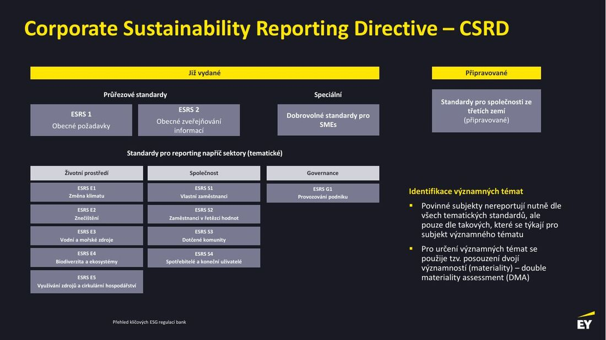
Slajd 27: struktura ESRS. Průřezové ESRS 1 a 2, tematické E1–E5, S1–S4, G1, dobrovolné standardy pro SMEs a připravované standardy pro společnosti ze třetích zemí. Témata se vybírají pomocí DMA.
ESRS: struktura (s. 27)
Skupina
Standardy
Průřezové
ESRS 1 obecné požadavky, ESRS 2 obecné zveřejňování informací
Životní prostředí
E1 změna klimatu, E2 znečištění, E3 vodní a mořské zdroje, E4 biodiverzita a ekosystémy, E5 využívání zdrojů a cirkulární hospodářství
Společnost
S1 vlastní zaměstnanci, S2 zaměstnanci v řetězci hodnot, S3 dotčené komunity, S4 spotřebitelé a koneční uživatelé
Governance
G1 provozování podniku (business conduct)
Speciální
dobrovolné standardy pro SMEs (vydané); standardy pro společnosti ze třetích zemí (připravované)
Identifikace významných témat: povinné subjekty nereportují nutně podle všech tematických standardů, ale jen podle těch, které se týkají významného tématu subjektu. Významná témata se určí posouzením dvojí významnosti (DMA) (s. 27).
⚠️ Pozor: ESRS 1 a 2 jsou povinné obecné standardy, E/S/G standardy se použijí jen pro významná témata. Zpráva se nejprve zveřejňuje jako součást výroční zprávy a podléhá limited, ne reasonable assurance (s. 26).
⚠️ Doplněk: Omnibus a aktuální stav (nejde ze slajdů, ze staré rešeršní sekce k tématu ESG regulace, stav k 9/2026). Slajdy jsou už po „Omnibus“ úpravě: práh 450 mil. EUR a 1 000 zaměstnanců a CSDDD s 5 000 zaměstnanci a 1,5 mld. EUR (s. 26, 49) odpovídají nové úpravě. Externě: Rada EU schválila změny 24. 2. 2026 (směrnice 2026/470, publikace 26. 2. 2026); u CSDDD byla transpozice odsunuta do července 2028 a uplatnění do července 2029 (slajd 49 to uvádí rovněž). Revidované ESRS přijala Komise 3. 7. 2026 (nařízení 2026/1563), povinně od období začínajícího 1. 1. 2027. U CSRD se v těchto externích zdrojích prahy 1 000 zaměstnanců a 450 mil. EUR uvádějí jako kumulativní, nikoli alternativní. Test u konkrétní firmy závisí na české transpozici; pro test vycházej ze slajdů. Benchmark níže (6/2025) popisuje první zprávy za rok 2024 a vznikl před těmito změnami.
CSRD: praxe v českých bankách (s. 28)
Významnost (materialita) v rámci ESG agendy bank je upozaděná kvůli Obecným pokynům EBA k řízení ESG rizik (ty mají vlastní pohled na materialitu rizik).
Snaha řešit inkonsistence: různé ESG iniciativy mimo CSRD/DMA a různá materialita ESG rizik podle pokynů.
Dočasné vystupování z reportingu kvůli Omnibus I (příklad Creditas).
Banky zohledňují benchmarky a (zatím protichůdná) doporučení auditorů.
E1 a S1 vždy, ale velké rozdíly v materialitě ostatních ESRS standardů a ve finanční materialitě.
Zpoždění projektů automatického sběru dat, která se dosud evidovala ručně (např. pracovní úrazy).
Větší tolerance k materiálním oblastem, které banka zatím deklaruje jako neřešené (chybí governance, strategie, řízení a cíle, např. pro biodiverzitu).
Tagging textů (strojově čitelné označení) se také odsouvá.
Obezřetnostní regulace: CRR a CRD
CRR = Capital Requirements Regulation (nařízení (EU) 575/2013), CRD = Capital Requirements Directive (směrnice 2013/36/EU, v ČR hlavně zákon č. 21/1992 Sb. o bankách) (s. 30). Upravují obezřetnostní pravidla pro banky. Cíl: předejít selhání bank (s. 30). V červnu 2024 vyšly novely CRR III a CRD VI, které podstatně rozšířily rozsah ESG požadavků (s. 30).
Tři pilíře (s. 31)
Pilíř 1: požadavky na kapitál a likviditu.
Pilíř 2: interní řízení rizika, proces dohledu a hodnocení.
Pilíř 3: reporting (orgánům dohledu) a zveřejňování informací.
ESG se promítá do každého z nich, více či méně (s. 31).
ESG v 1. pilíři (s. 32)
Ze všech pilířů nejméně „zasažený“. ESG je zohledněno spíš v dílčích otázkách; obecné přístupy k „zeleným“ či „hnědým“ expozicím upraveny nejsou.
Přeceňování kolaterálu: ESG aspekty mohou být podnětem k přecenění.
Specializované úvěrové expozice: příznivější váha ve výpočtu kapitálového požadavku pro udržitelné projekty.
Expozice zajištěné nemovitostmi: možnost použít jednodušší přístup, pokud nemovitost poskytuje sociální bydlení.
Infrastrukturní podpůrný faktor: příznivější váha navázaná na požadavek DNSH.
Intuice: v Pilíři 1 neplatí „zelené aktivum = nižší kapitálový požadavek“ obecně. Zvýhodnění je jen v konkrétních případech (specializované úvěry, sociální bydlení, infrastruktura s DNSH). Podpůrný faktor: kapitálová váha se snižuje, což je odměna za environmentálně nepoškozující infrastrukturu.
ESG ve 2. pilíři (s. 33–36)
Governance (s. 33): strategie a procesy řízení rizik i jejich kontrola vedoucím orgánem musí zohledňovat ESG; stejně tak nastavení odměňování. Vedoucí orgán jako celek musí mít dostatečné znalosti ESG, vynakládat lidské a finanční zdroje na školení (nově i v ESG) a zavést postupy pro podporu diverzity.
Interní postupy hodnocení kapitálové přiměřenosti (s. 33): nutnost zohlednit ESG rizika; interní zátěžové testování se obohatí o ESG scénáře.
Tranziční plány (s. 33): připravuje je vedoucí orgán; cíle a opatření musí zohledňovat aktuální vědecké poznání; musí být konzistentní s tranzičními plány podle CSRD; platí proporcionalita (menší banka = jednodušší plán).
Obsah plánu (s. 34): dlouhodobé cíle (objectives) a roadmap; dílčí cíle (targets) a ukazatele; governance (struktura řízení, eskalace, dovednosti, odměňování); implementační strategie (krátko-, střední- a dlouhodobá opatření, změny v produktech a investicích); strategie zapojení (spolupráce s protistranami, sběr informací).
Postup tvorby (s. 35): (1) analýza regulatorních požadavků a základů (materialita ESG rizik, analýza scénářů, rizikový apetit), (2) nastavení governance, (3) formulace plánu, (4) integrace do strategie, businessu a risk managementu, (5) monitoring a aktualizace.
Dohled (s. 36): orgány dohledu posuzují governance, risk management a expozici banky vůči ESG a vhodnost interních metodik v kontextu tranzičních plánů. Mají pravomoc požadovat snížení rizik z ESG úpravou obchodní strategie, governance nebo risk managementu.
⚠️ Pozor: rozlišuj objectives (dlouhodobé cíle s roadmapou) a targets (dílčí kvantitativní cíle s ukazateli) v tranzičním plánu (s. 34). Plán připravuje vedoucí orgán, ne risk management (s. 33).
Pilíře 1 a 2 v praxi (s. 37)
1. pilíř: ECB je zatím v módu pozorování tržní praxe, nesankcionuje nesoulad. Regulátoři akcentují materialitu: pokud materiální ESG riziko není zohledněno, banka nedostatečně řídí své riziko. Dočasné řešení pro IRB banky: kalibrace MoC pomocí dopadových analýz klimatických scénářů. Doplněk zkratek: IRB = banky s interním ratingovým přístupem pro výpočet kapitálu, MoC = margin of conservatism, přirážka za nejistotu v odhadech.
2. pilíř: banky mají ESG v Risk Appetite Statement (rizikový apetit) a Business Strategy. Klimatické stresové testy a scénářové analýzy se vyžadují od 2027. ECB začíná vyžadovat rozšíření o přírodní scénáře. Scénáře jsou dostupné pro očekávaný dlouhodobý vývoj, nově i pro stresový střednědobý. Preference bottom-up stresového testování (dopady na jednotlivé klienty dají celkový dopad).
ESG ve 3. pilíři
Zveřejňování informací (s. 38):
Před CRR III zveřejňovaly jen velké banky; nově povinnost dopadá na všechny, s důrazem na proporcionalitu (počet šablon a periodicita podle velikosti a složitosti).
Možnost přesunout povinnost na matku: nově ji velké banky nemohou využít.
Dnes se zveřejňují: expozice vůči ESG rizikům, zavedení ESG rizik do strategie, governance a řízení rizik, GAR, energetická účinnost kolaterálu.
Přesná podoba v prováděcích předpisech; první referenční datum nové podoby: 31. prosince 2026.
Reporting orgánům dohledu (s. 39):
Dosud bylo ESG jen předmětem zveřejňování; novela CRR zavedla i reporting, jehož podobu upraví prováděcí předpisy.
10. dubna 2026 EBA představila plánovanou podobu v konzultaci. Reporting navazuje na zveřejnění, ale přidává nové šablony pro riziko koncentrace související s životním prostředím a environmentální rizika jiná než klimatická.
Rozsah šablon podle velikosti a složitosti banky. Reporting má být roční; první referenční datum 31. prosince 2027.
Pilíř
Obsah
ESG nově (slajdy)
1
kapitál a likvidita
nejméně dotčený; kolaterál, specializované úvěry, nemovitosti (sociální bydlení), infrastrukturní faktor s DNSH
2
interní řízení a dohled
governance, ICAAP/zátěžové testy se scénáři ESG, tranziční plány; stresové testy od 2027
3
zveřejňování a reporting
zveřejnění pro všechny banky (první ref. datum 31. 12. 2026); reporting dohledu (31. 12. 2027)
⚠️ Pozor: dvě různá data: zveřejňování (disclosure, veřejnost) má první referenční datum 31. 12. 2026, reporting orgánům dohledu 31. 12. 2027 (s. 38, 39). Dříve zveřejňovaly jen velké banky, nově všechny; velké banky už nemohou přenést povinnost na matku. ICAAP v tabulce je doplněk (slajd 33: „interní postupy pro hodnocení kapitálové přiměřenosti“).
Pillar 3 disclosures v praxi (s. 40)
Od prvního zveřejňování za 2022 zveřejňovalo jen minimum českých bank: velké banky konsolidovaný report za skupinu, malé zatím nemusely.
Občas extrémně zjednodušené přístupy: taxonomická způsobilost (eligibilita) podle prvního NACE klienta (NACE = klasifikace ekonomických činností, doplněk), fyzická klimatická rizika podle kraje sídla klienta, některé segmenty dočasně nevykazují.
Většina českých bank cílí na minimální míru akceptovatelného souladu.
Soft law
Soft law: formálně nezávazné předpisy; v bankovnictví často upravují konkrétní postupy, jak naplnit závazné, ale obecné normy. Adresátům se přesto vyplatí je dodržovat, protože mají jistotu, že neporuší závazné předpisy, ze kterých soft law vychází (s. 41).
Dokument
O co jde
Příručka ECB ke klimatickým a environmentálním rizikům (2020)
jak ECB chápe bezpečné a obezřetné řízení těchto rizik, očekávání vůči hodnocení rizik a transparentnosti; primárně pro významné instituce pod přímým dohledem ECB; jeden z prvních dokumentů určených přímo bankám, velký vliv na vnímání ESG rizik (s. 42)
Obecné pokyny EBA k poskytování a sledování úvěrů (EBA/GL/2020/06)
postupy při rozhodování o úvěru i při práci s poskytnutými úvěry do maturity; ESG faktory a rizika v rizikovém apetitu a interních předpisech; kroky pro „environmentálně udržitelné úvěry“ (s. 42)
Obecné pokyny EBA k managementu ESG rizik (EBA/GL/2025/01)
detailnější požadavky na interní procesy a management ESG rizik podle 2. pilíře: identifikace, měření, řízení a sledování ESG rizik, posuzování dopadu, obsah tranzičních plánů (s. 43)
⚠️ Pozor: příručka ECB je z roku 2020 a míří primárně na významné instituce pod přímým dohledem ECB (s. 42). Pokyny k ESG rizikům (EBA/GL/2025/01) se vážou k Pilíři 2 (s. 43); pokyny k úvěrům jsou EBA/GL/2020/06, jiný dokument.
Regulace greenwashingu
Greenwashing: praktika, při níž tvrzení, prohlášení, jednání nebo komunikace související s udržitelností neposkytují jasný a nezkreslený obraz o skutečném profilu udržitelnosti entity, finančního produktu nebo služby (s. 45).
Směrnice (EU) 2024/825 (s. 46)
Novelizační směrnice, mění dvě směrnice z ochrany spotřebitele. Cíl: podpořit informované rozhodování spotřebitelů (a další cíle, např. trvanlivost produktů).
Obecná environmentální tvrzení musí být podložena vynikajícím environmentálním profilem opřeným o objektivní měřítka.
Tvrzení o budoucím profilu musí mít ověřitelné závazky a realistický plán s nezávislým ověřením.
Zakázána jsou tvrzení o nulovém negativním dopadu založená na kompenzacích.
Označení udržitelnosti musí být podloženo certifikací.
Regulatorní povinnost nesmí být inzerována jako výhoda produktu.
Pravidla měla platit od 27. září 2026, ale česká transpozice není dokončena (sněmovní tisk 53).
Novela obecných pokynů EBA/GL/2015/18 (s. 47)
Původní pokyny upravují interní dohled a governance u retailových bankovních produktů. 30. června 2026 EBA vydala novelu (EBA/GL/2026/07), která je rozšiřuje o produkty s prvky udržitelnosti. V novelizovaném znění se použijí od 11. ledna 2027.
Nově: interní postupy pro identifikaci a předcházení greenwashingu; řízení a sledování rizik greenwashingu; ESG při určování cílového trhu a vhodnosti produktu; povinnost komunikovat ESG rysy objektivně, jasně a nezavádějícím způsobem, aby tvrzení byla přesná, podložená a aktuální.
Cíl: robustní standardy tvorby produktů s prvky udržitelnosti a ochrana spotřebitele.
⚠️ Pozor: směrnice 2024/825 míří na spotřebitele (mění směrnice o ochraně spotřebitele), novela EBA/GL/2015/18 na interní procesy banky u retailových produktů. První je směrnice, kterou je nutné transponovat; druhá je soft law (comply or explain).
Další související regulace
Regulace
Obsah
Právní základ
CSDDD (Corporate Sustainability Due Diligence Directive, s. 49)
povinnosti ohledně nepříznivých dopadů na lidská práva a životní prostředí z vlastních aktivit i aktivit obchodních partnerů. EU společnosti: více než 5 000 zaměstnanců a obrat nad 1,5 mld. eur, nebo obrat nad 275 mil. eur a licenční výnos z EU nad 75 mil. eur. Mimo EU: obrat z EU nad 1,5 mld. eur, nebo nad 275 mil. eur a licenční výnos nad 75 mil. eur. Transpozice do 26. 7. 2028, platit by měla od 26. 7. 2029.
směrnice (EU) 2024/1760
Nařízení o referenčních hodnotách (benchmarks, s. 50)
indexy používané jako reference ve finančních nástrojích a smlouvách nebo k měření výkonnosti fondů (např. EURIBOR). Doplněny benchmarky pro přechod na nízkouhlíkovou ekonomiku (složení portfolia) a benchmark navázaný na Pařížskou dohodu (emise spojené s investicemi).
nařízení (EU) 2016/1011
Evropský standard pro zelené dluhopisy (s. 51)
standard, na který se váže možnost označovat dluhopisy jako zelené; alokace prostředků, zveřejňování, externí posouzení
nařízení (EU) 2023/2631
ESG v MiFID II (s. 52)
investiční služby; ESG faktory a preference v product governance, organizačních požadavcích, řízení rizik, střetech zájmů
směrnice 2014/65/EU
Další (s. 53)
ESG v distribuci pojištění, pravidlech pro fondové investování…
⚠️ Pozor: prahy CSDDD (5 000 zaměstnanců, 1,5 mld. eur) jsou jiné než u CSRD (1 000 zaměstnanců, 450 mil. eur). CSDDD je směrnice 2024/1760 (transpozice 2028), zelené dluhopisy upravuje nařízení 2023/2631.
Zadání úkolu
Úkol (s. 56): zvolte českou banku, která ještě nezveřejnila své ESG cíle. Vyberte ESG rizika, která by pro ni mohla být materiální. Navrhněte cíle, které by si banka pro tato rizika měla zvolit. Návrh zdůvodněte.
Pro orientaci z látky: materialitu posuzujte dvojím pohledem (s. 11), mezi cíly zvažte tranziční plán (s. 33–35), cíle snižování vlastních emisí a ESG KPI v odměňování, jak je mají banky v benchmarku (CSRD benchmark, s. 6, 12). Slajdy žádné další pokyny neuvádějí.
Benchmark CSRD zpráv českých bank za rok 2024 (EY, 6/2025)
Dokument shrnuje první zprávy českých bank podle CSRD. Porovnává osm bank: Air Bank, Banka CREDITAS, Česká spořitelna, J&T BANKA, Komerční banka, MONETA Money Bank, Raiffeisenbank a UniCredit Bank. Všechny vykazují v konsolidované zprávě za celou bankovní skupinu; data Air Bank a UniCredit zahrnují Česko i Slovensko. ČSOB reportovala jen na úrovni KBC Group NV, proto v benchmarku není (CSRD benchmark, s. 2).
Posouzení dvojí významnosti (DMA)
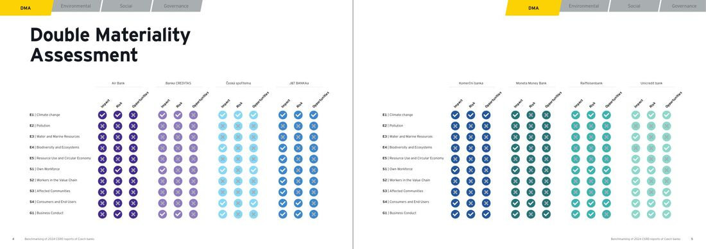
CSRD benchmark, slajd 3: matice DMA. Pro každou banku a každý ESRS standard E1–E5, S1–S4, G1 je zaškrtnuto, zda je téma významné z pohledu dopadu (Impact), rizika (Risk) a příležitostí (Opportunities).
Matice rozlišuje tři pohledy: Impact (dopad banky), Risk (riziko pro banku), Opportunities (příležitosti).
E1 změna klimatu, S1 vlastní zaměstnanci a G1 business conduct jsou významné u všech osmi bank alespoň z jednoho z pohledů (CSRD benchmark, s. 3, vlastní přečtení z obrázku). To odpovídá slajdu 28: „E1 a S1 vždy“.
E2 znečištění nepovažuje za významné žádná banka. E3 vodní zdroje jen UniCredit (dopad).
Největší rozsah významných témat mají UniCredit a J&T BANKA; nejméně Air Bank a Creditas, které mají jen E1, S1 a G1 (CSRD benchmark, s. 3).
S4 spotřebitelé je významné u šesti bank (ne u Air Bank a Creditas).
Co si odnést: banky se shodují na E1, S1 a G1; ostatní ESRS jsou velmi rozdílné (slajd 28 mluví o „velkých rozdílech v materialitě“). Podle DMA každá banka sama určuje, podle kterých standardů reportuje.
Environmentální ukazatele
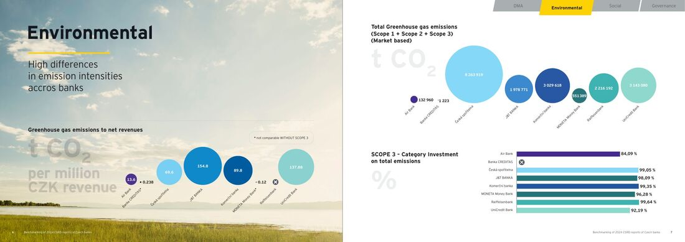
CSRD benchmark, slajd 4: celkové emise (Scope 1+2+3, market-based), intenzita emisí na obrat a podíl kategorie Investice na emisích Scope 3.
Intenzita (t CO2 na milion CZK výnosů): J&T 154,8; UniCredit 137,88; KB 89,8; ČS 69,6; Air Bank 13,6; Creditas 0,238* a MONETA 0,12* (hvězdička = nesrovnatelné, bez Scope 3); u Raiffeisenbank údaj chybí. Benchmark píše o velkých rozdílech v emisních intenzitách (s. 4).
Scope 3, kategorie Investice tvoří 84 až 99,6 % všech emisí: Air Bank 84,09 %, ČS 99,05 %, J&T 98,09 %, KB 99,35 %, MONETA 96,28 %, Raiffeisenbank 99,64 %, UniCredit 92,19 % (s. 4).
Scope 1, 2, 3 (doplněk výkladu, slajdy jen uvádějí údaje): Scope 1 = přímé emise banky (např. vlastní vozový park), Scope 2 = nepřímé emise z nakoupené energie (market-based = podle smluvního energetického mixu, location-based = podle průměru v lokalitě), Scope 3 = ostatní nepřímé emise v hodnotovém řetězci, u banky hlavně financované emise v kategorii Investice.
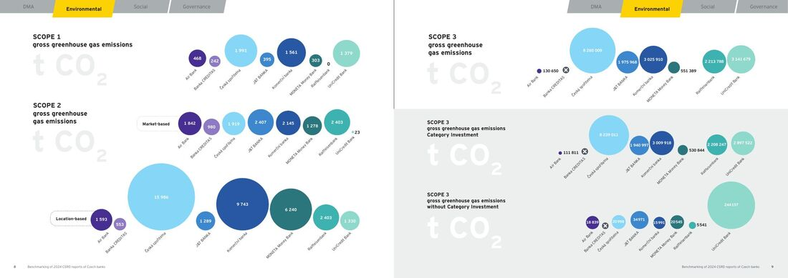
CSRD benchmark, slajd 5: emise podle rozsahů. Scope 1 a 2 jsou řádově tisíce tun, Scope 3 miliony tun, a to prakticky celé z kategorie Investice.
Scope 2 (market-based): 1 842; 980; 1 919; 2 407; 2 145; 1 278; 2 403; 23 ve stejném pořadí bank; location-based je odlišný (např. ČS 15 986, KB 9 743) (s. 5).
Scope 3: ČS 8 260 009; UniCredit 3 141 679; KB 3 025 910; Raiffeisenbank 2 213 788; J&T 1 975 968; MONETA 551 389; Air 130 650; Creditas nevykázala. Bez kategorie Investice jde o desítky tisíc tun (např. UniCredit 244 157, J&T 34 971) (s. 5).
⚠️ Pozor: vlastní provozní emise banky (Scope 1 a 2) jsou zanedbatelné proti emisím z financování (Scope 3, Investice). Proto banky klimaticky závisí na tom, koho financují. U srovnání intenzit dbej na hvězdičku: hodnoty bez Scope 3 nejsou srovnatelné. Údaj ČS 99,05 % ve slajdu 4 nesedí s přepočtem z čísel (8 239 011 / 8 263 919 = 99,70 %), u ostatních bank souhlasí; berte jako možnou chybu zdroje.
CSRD benchmark, slajd 6: cíle snížení vlastních emisí, celková spotřeba energie a podíl zdrojů (fosilní, obnovitelné, jaderné).
Cíle snížení vlastních emisí: Air Bank, Creditas a J&T nemají; ČS −80 % do 2030 oproti 2017; KB −50 % do 2025 oproti 2019; MONETA −90 % do 2026 oproti 2016; Raiffeisenbank −42 % do 2030 oproti 2024 a −90 % do 2050; UniCredit na 0 % do 2030 (s. 6).
Celková spotřeba energie (MWh): ČS 58 162; KB 31 156; MONETA 14 279; Raiffeisenbank 12 688; UniCredit 10 693; Air Bank 5 243; J&T 4 435; Creditas 1 958 (s. 6).
CSRD benchmark, slajd 7: GAR podle obratu (Turnover) a investic (CapEx) a GAR pro domácnosti. Všechny hodnoty jsou kolem jednotek promile až desetin procenta. Nadpis: „Negligible GAR in banks so far“.
Závěr benchmarku: pro sektor elektřiny je většina bankovního financování zelená, ale GAR bank je zatím zanedbatelný (s. 7).
GAR KPI Turnover: Air 0,20 %; Creditas 0,003 %; ČS 0,41 %; J&T 0,63 %; KB 0,10 %; MONETA 0,005 %; Raiffeisenbank 0,20 %; UniCredit 0,28 % (s. 7).
GAR KPI CapEx: Air 0,20 %; Creditas 0,003 %; ČS 0,94 %; J&T 0,82 %; KB 0,20 %; MONETA 0,002 %; Raiffeisenbank 0,38 %; UniCredit 0,54 % (s. 7).
GAR domácnosti: Air 0,26 %; ČS, J&T, KB 0 %; MONETA 0,002 %; Raiffeisenbank 0,01 %; UniCredit 0,02 %; Creditas nevykázala (s. 7).
Intuice:Turnover a CapEx jsou dvě verze ukazatele podle toho, zda se u financovaného podniku posuzuje taxonomický soulad jeho obratu, nebo jeho investičních výdajů (doplněk výkladu).
CSRD benchmark, slajd 8: GAR podle odvětví (NACE sekce A až L), Turnover vlevo a CapEx vpravo. Zelená je převážně sekce D (elektřina, plyn, pára).
Jiná odvětví mají hodnoty výrazně nižší nebo nulové (např. průmysl C: ČS 18,2 %, Raiffeisenbank 9,05 %). Podíl se počítal jako udržitelné činnosti daného sektoru ku celkové hrubé účetní hodnotě sektoru (s. 8, poznámka pod grafem).
Údaje za Air Bank, Creditas a MONETA tu nejsou (v grafu přeškrtnuté).
CSRD benchmark, slajd 9: jaká část aktiv se vůbec dostane do GAR, aktiva vyloučená z čitatele a jmenovatele, podrozvahové expozice (záruky, spravovaná aktiva).
Aktiva zahrnutá v GAR KPI z celkových aktiv banky: Air 63,50 %; Creditas 26,90 %; ČS 58,41 %; J&T 51,53 %; KB 63,00 %; MONETA 61,00 %; Raiffeisenbank 60,93 %; UniCredit 66,26 % (s. 9).
Aktiva vyloučená z čitatele (numerator): od 18,00 % (MONETA) po 94,57 % (J&T); z jmenovatele (denominator): od 33,74 % (UniCredit) po 73,10 % (Creditas) (s. 9).
Podrozvahové expozice GAR: finanční záruky (CapEx) např. KB 57,00 %, UniCredit 7,58 %, ČS 6,08 %; spravovaná aktiva (CapEx) např. UniCredit 11,54 %, ČS 8,28 %; MONETA službu spravovaných aktiv neposkytuje (s. 9).
Sociální ukazatele
CSRD benchmark, slajd 10: upravená a neupravená mzdová mezera, podíl částečných úvazků a poměr odměny nejlépe placené osoby k mediánu. Hlavní sdělení: rozdíl mezi pohlavími vzniká zejména podílem žen v managementu.
Benchmark: genderová mzdová mezera vzniká neúměrným zastoupením žen v managementu bank. Jen dvě banky mají minimální mzdu nad zákonným limitem (s. 10).
Podíl částečných úvazků: Air 4 %; Creditas 5 %; ČS 14 %; J&T 4,85 %; KB 6,9 %; MONETA 14,2 %; Raiffeisenbank 9,5 %; UniCredit 8,7 % (s. 10).
Poměr odměny nejlépe placené osoby k mediánu ostatních: ČS 5 090 %, Raiffeisenbank 3 900 %, J&T 2 573 %, UniCredit 2 300 %, KB 1 670 %, Creditas 1 095 %, MONETA 868 % (s. 10).
Podíl žen v top managementu: Air 15 %; Creditas 38 %; ČS 20 %; J&T 11 %; KB 26 %; MONETA 40 %; Raiffeisenbank 24 %; UniCredit 27 %. Podíl žen ve všech zaměstnancích: 53 až 66 %. Minimální mzda: ČS 25 000 CZK, KB 27 000 CZK, ostatní nevykázaly (CSRD benchmark, s. 11).
Příklad: čtení mzdových mezer. Neupravená mezera porovnává průměrné mzdy mužů a žen bez ohledu na pozici, upravená porovnává srovnatelné pozice (doplněk výkladu). Např. Česká spořitelna má neupravenou mezeru 37,5 % a upravenou 2 %. Rozdíl 35,5 procentního bodu ($37{,}5 - 2 = 35{,}5$) vysvětlují převážně rozdílné pozice (málo žen v top managementu, jen 20 %), ne rozdílná odměna za stejnou práci. To odpovídá hlavnímu sdělení benchmarku.
Governance
CSRD benchmark, slajd 12: zda je odměňování členů představenstva a dozorčí rady vázáno na ESG KPI, a podíl žen v představenstvu. Nadpis: ESG KPI zůstávají u mnoha členů představenstva k zavedení.
Hlavní sdělení: ESG KPI zatím zůstávají k zavedení u mnoha členů představenstva (s. 12).
Odměňování vázané na ESG KPI mají Česká spořitelna, Komerční banka, MONETA, Raiffeisenbank a UniCredit; Air Bank, Creditas a J&T ne (s. 12).
Podíl odměny na ESG KPI: Air a Creditas 0 %; ČS 10 %; KB 10 % (5 % u ostatních členů); MONETA 30 %; Raiffeisenbank 10 % a 5 %; UniCredit 20 % (s. 12).
Podíl žen v představenstvu: Air 0 %; Creditas 40 %; ČS, J&T, KB, MONETA po 17 %; Raiffeisenbank 12 %; UniCredit 25 % (s. 12).
⚠️ Pozor: neplést „podíl žen v top managementu“ (s. 11) a „v představenstvu“ (s. 12); jsou to různé ukazatele. Podobně „podíl odměny na ESG KPI“ se liší podle role (CEO vs. člen odpovědný za ESG vs. ostatní).
Shrnutí:
ESG = environmentální, sociální a governance oblast udržitelnosti. ESG rizika se realizují prostřednictvím tradičních rizik (úvěrové, tržní, operační, likvidity); environmentální se dělí na fyzické a tranziční (s. 9–10).
Dvojí materialita: finanční (ESG na podnik) + materialita dopadu (podnik na svět); v CSRD se určuje DMA (s. 11, 27).
Nařízení platí přímo, směrnice se transponují, obecné pokyny = comply or explain (s. 7).
Taxonomie (nařízení 2020/852): 6 cílů; činnost je udržitelná při významném přínosu, DNSH a minimálních zárukách; technická kritéria. Banky vykazují GAR (s. 15–19).
SFDR (nařízení 2019/2088): zveřejňování na úrovni entity a produktu; kategorie tmavě zelené, světle zelené, ostatní. SFDR 2.0 (návrh 11/2025): Udržitelná, Tranziční, ESG basics (s. 22–24).
CSRD (směrnice 2022/2464): zpráva ve výroční zprávě, limited assurance, ESRS, DMA; práh 450 mil. eur a 1 000 zaměstnanců, od roku po 1. 1. 2028 (s. 25–27).
CRR/CRD: P1 kapitál a likvidita (ESG nejméně), P2 interní řízení a dohled (governance, tranziční plány, stresové testy od 2027), P3 zveřejňování (první ref. datum 31. 12. 2026) a reporting dohledu (31. 12. 2027) (s. 30–40).
Greenwashing: směrnice 2024/825 (spotřebitel, měla platit od 27. 9. 2026) a novela EBA/GL/2015/18 (EBA/GL/2026/07, od 11. 1. 2027) (s. 45–47).
Další: CSDDD (2024/1760; 5 000 zaměstnanců, 1,5 mld. eur), benchmarky (2016/1011), zelené dluhopisy (2023/2631), MiFID II (s. 49–52).
Benchmark 2024: osm českých bank (bez ČSOB); E1, S1, G1 významné u všech; většina emisí banky je Scope 3 Investice; GAR zanedbatelný (do 1 %), v sektoru elektřiny většina financování zelená; ESG KPI v odměňování zatím nemají všichni.